作者: 林大贵
出版社: 清华大学出版社
出版年: 2018-1-1
ISBN: 9787302493020
内容简介
本书提供安装、上机操作指南，同时辅以大量范例程序介绍TensorFlow＋Keras深度学习方面的知识。本书分9部分，共21章，内容主要包括基本概念介绍、TensorFlow与Keras的安装、KerasMNIST手写数字识别、Keras CIFAR-10照片图像物体识别、Keras多层感知器预测泰坦尼克号上旅客的生存概率、使用KerasMLP、RNN、LSTM进行IMDb自然语言处理与情感分析、以TensorFlow张量运算仿真神经网络的运行、TensorFlowMNIST手写数字识别、使用GPU大幅加快深度学习训练。
TensorFlow＋Keras深度学习方面的知识不需要具备高等数学模型、算法等专业知识，读者只需要具备基本的Python程序设计能力，按照本书的步骤循序渐进地学习，就可以了解深度学习的基本概念，进而实际运用深度学习的技术。
序
深度学习是人工智能／机器学习研究中的一个新领域，它的概念源于人工神经网络的研究，目的在于建立含有多个隐含层的多层感知器的一种深度学习结构，以此来模拟人脑进行分析学习的神经网络。深度学习在视觉识别（人脸识别或面部表情识别）、图像识别、语音识别、文字识别和生物医学等方面的应用中具有优势，而且已经取得了非常好的效果。
对于具有人工智能和机器学习基本概念的读者或者开发者，想“更上一层楼”掌握深度学习理论和技术，并希望可以在实践中快速运用深度学习技术，那么本书就非常合适。对于开设了“深度学习”人工智能课程的高等院校，本书可以作为学生上机实践的实验用书。
本书介绍的TensorFlow＋Keras深度学习与类神经网络不需要读者具有高等数学建模的专业知识，也不需要具有计算机专业深厚的算法知识和精专的程序设计技能，读者只需要具有基本的Python程序设计能力，而后按照本书的章节循序渐进地学习，就可以了解深度学习的基本概念，而且可以按照书中的详细步骤来运用本书提供的大量范例程序，通过上机实践操作来实际实现深度学习技术。
本书的范例程序不需要修改就可以直接运行，而且同时支持Windows环境和LinuxUbuntu环境，读者只要按照书中的说明下载和安装好CUDA、cuDNN、TensorFlow GPU版本与Keras即可。
本书附录A提供了下载全部范例程序的网址和步骤，这些范例程序使用实际的数据集来实现各种深度学习的算法，并示范如何进行数据预处理、训练数据、建立模型、预测结果，展示如何把Keras与TensorFlow深度学习类神经网络运用到具体的应用中。
深度学习会用到大数据技术，而且本书的范例要用到Python程序设计语言，本书并未在这些方面深入讲解，建议需要学习这方面内容的读者去寻找相关出版物，以便能更好地结合本书来学习和实践深度学习技术，从而完善自己在人工智能知识方面的结构。
资深架构师 赵军
2017年11月
前 言
近年来，人工智能（ArtificialIntelligence，AI）吸引了大众与媒体的目光，AlphaGo的成功更加让人工智能技术变得炙手可热，其实AI早已进入了我们的生活，如手机中的语音助理、人脸识别、影音平台每日的推荐等。然而，人工智能的发展才刚刚起步，未来人工智能的应用将会深入生活的每一个层面，也就是说未来一定是AI的时代。
深度学习是人工智能中成长最快的领域，深度学习就是仿真人类神经网络的工作方式，常见的深度学习架构有深度神经网络（DNN）、卷积神经网络（CNN）、递归神经网络（RNN）等。深度学习特别适用于视觉识别、语音识别、自然语言处理、识别癌细胞等领域，目前已经取得非常好的效果。
近年来，各大科技公司（如Google、Microsoft、Facebook、Amazon、Tesla等）都积极投入到深度学习领域进行研发。以Google公司为例，它在2014年以4亿美元并购了DeepMind公司。2016年，由DeepMind开发的人工智能围棋程序AlphaGo以4：1击败了世界级围棋冠军李世石，引起了网络与媒体的注目，让人们了解到深度学习的威力强大。
TensorFlow最初由Google BrainTeam团队开发，Google使用TensorFlow进行研究及开发自身产品，并于2015年公开了它的源代码，所有的开发者都可以免费使用。Google的很多产品早就使用了机器学习或深度学习，例如Gmail过滤垃圾邮件、Google语音识别、图像识别、翻译等。
TensorFlow功能强大，执行效率高，支持各种平台。但是，TensorFlow是比较底层的深度学习链接库，学习门槛高，对于从未接触过深度学习的初学者，如果一开始就学习TensorFlow，就要面对其特殊的“计算图”（computationalgraph）程序设计模式，还必须自行设计张量（Tensor）运算，可能会有很大的挫折感。
所以本书先介绍Keras，这是以TensorFlow为底层的、高级的深度学习链接库，可以很容易地建立深度学习模型，进行训练并使用模型预测，对初学者而言学习门槛较低。等读者熟悉了深度学习模型后，再去学习TensorFlow就很轻松了。
近年来，深度学习和人工智能技术快速发展的一个很重要的因素是，GPU提供了强大的并行运算架构，可以让深度学习训练比用CPU来进行要快数十倍。本书也特别介绍了GPU的安装与应用，读者只需要有NVIDIA显示适配器（显卡），然后按照本书的介绍依次安装CUDA、cuDNN、TensorFlowGPU版本与Keras，就可以使用GPU大幅加快深度学习的训练。
林大贵
本书章节与范例程序介绍
本书的目标读者
使用TensorFlow＋Keras深度学习与类神经网络不需要具备高等数学模型、算法等专业知识，读者只需要具有基本的Python程序设计能力，按照本书的步骤循序渐进地学习，就可以了解深度学习的基本概念，进而实际运用深度学习的技术。
本书的特色是提供安装、上机操作指南，同时辅以大量范例程序。
▶ 上机操作
本书详细介绍了如何在Windows与LinuxUbuntu系统上安装Anaconda、TensorFlow与Keras，用于深度学习的程序设计，并且详细介绍了安装CUDA、cuDNN、TensorFlowGPU版本与Keras的步骤，用于加快深度学习的训练速度。
▶ 范例程序
以实际范例程序来学习程序设计是最有效率的方式。因此本书使用实际的数据集配合范例程序代码来介绍各种深度学习算法，并示范如何进行数据预处理、训练数据、建立模型、预测结果，由浅入深地介绍Keras与TensorFlow深度学习类神经网络。
本书章节内容及上机实践操作与范例程序介绍
▶ 基本概念介绍
▶ TensorFlow与Keras的安装
▶ Keras MNIST手写数字识别
▶ Keras CIFAR-10照片图像物体识别
▶ Keras多层感知器预测泰坦尼克号上旅客的生存概率
▶ 使用Keras MLP、RNN、LSTM进行IMDb自然语言处理与情感分析
▶ 以TensorFlow张量运算仿真神经网络的运行
▶ TensorFlow MNIST手写数字识别
▶ 使用GPU大幅加快深度学习训练
▶ 本书范例程序下载
下载网址：https://pan.baidu.com/s/1c2rXnH2（注意区分数字和英文字母大小写）。
如果下载有问题，请发送电子邮件至booksaga@126.com，邮件主题设置为“求TensorFlow＋Keras深度学习人工智能实践应用范例程序”。
▶ 指令整理
安装Tensor与Keras必须使用Windows或Linux指令。为了方便读者练习，将这些指令整理在与本书有关的微博中。读者可以从微博中复制这些指令，然后粘贴到Windows“命令提示符”窗口或Linux“终端”程序中，以节省打字的时间，避免输错字母或字符。微博网址如下：
https://www.weibo.com/hadoopsparkbook
第1章 人工智能、机器学习与深度学习简介
近年来，人工智能（ArtificialIntelligence，AI）吸引了大众与媒体的目光，AlphaGo的成功让人工智能技术变得更加炙手可热，其实AI早已进入你我的生活中，例如我们手机中的语音助理、人脸识别、影音平台的每日推荐等。然而，人工智能的发展才刚刚起步，未来人工智能的应用将会深入生活中的每一个层面，也就是说未来一定是AI的时代。
1.1 人工智能、机器学习、深度学习的关系
人工智能、机器学习、深度学习的关系整理如图1-1所示。

图1-1
▶ 人工智能
“人工智能”一词最早是在20世纪50年代提出的。人工智能的目标是让计算机像人一样思考与学习。被视为人工智能之父的图灵（Alan MathisonTuring）提出了著名的“图灵测试”（TuringTesting）：人类与机器通过电传设备对话，如果人类无法根据这个对话过程判断对方是机器或人，通过图灵测试就可以认定这台机器具有人工智能。
20世纪80年代，约翰•塞尔（John Searle）提出了对“人工智能”的分类方式。
- 强人工智能（Strong AI）：机器具有与人类一样完整的认知能力。
- 弱人工智能（Weak AI）：机器不需要具有与人类一样完整的认知能力，只要设计得看起来像具有智慧即可。
▶ 机器学习
机器学习（MachineLearning）是人工智能的分支。机器学习是通过算法，使用大量数据进行训练，训练完成后会产生模型。将来有新的数据时，我们可以使用训练产生的模型进行预测。机器学习可分为有监督的学习（SupervisedLearning）、无监督的学习（Unsupervised Learning）和增强式学习（Reinforcement Learning）。
机器应用相当广泛，例如推荐引擎、定向广告、需求预测、垃圾邮件过滤、医学诊断、自然语言处理、搜索引擎、诈骗侦测、证券分析、视觉识别、语音识别、手写识别，等等。
▶ 深度学习
深度学习（DeepLearning）也是机器学习的分支。深度学习是人工智能中成长最快的领域，深度学习仿真人类神经网络的工作方式，常见的深度学习架构有多层感知器（Multi-Layer Perceptron）、深度神经网络（Deep Neural Network，DNN）、卷积神经网络（Convolutional NeuralNetwork，CNN）、递归神经网络（Recurrent NeuralNetwork，RNN）。深度学习已经应用于视觉识别、语音识别、自然语言处理、生物医学等领域，并且取得了非常好的效果。
▶ 为何近年来人工智能发展加速
早在20世纪60年代及70年代，科学家就提出了各种机器学习的算法，然而受限于当时计算机的计算能力以及大量数据的获取也不容易，因而机器学习一直都没有很成功。
- 大数据（Big Data）分布式存储与运算
随着全球设备、机器和系统的相互连接，从而产生了大量数据，再加上分布式存储（例如Hadoop、NoSQL等）的发展，也提供了大量数据，而且大量服务器的并行计算功能（例如Spark等）提供了巨大的运算能力。大量数据与运算能力就像燃料，推动了机器学习与深度学习的加速发展。
- GPU、TPU并行计算
GPU（Graphics Processing Unit，图形处理器）原本用来处理画面像素的运算，例如电脑游戏界面所需要的大量图形运算。
CPU与GPU架构上有着根本的不同：CPU含有数颗核心，为顺序处理进行优化，而GPU可以有高达数千个小型而且高效率的核心，可以发挥并行计算的强大功能，如图1-2所示。
图1-2
深度学习以大量矩阵运算模拟神经元的工作方式，矩阵运算的特性是，单一运算都很简单，但是需要大量运算，特别适合采用并行计算。GPU通过大量核心进行并行计算，可让通过GPU进行深度学习训练比通过CPU进行深度学习训练快10～75倍，让训练的时间从数周缩短为数天。
而Google公司更在2016年宣布，研发人工智能专用芯片TPU（Tensor ProcessingUnit，张量处理单元或张量处理芯片）来进行并行计算。TPU是专为深度学习特定用途设计的特殊规格的逻辑芯片（IC），使得深度学习的训练速度更快。
1.2 机器学习介绍
机器学习的训练数据是由features、label组成的。
- features： 数据的特征，例如湿度、风向、风速、季节、气压。
- label： 数据的标签，也就是我们希望预测的目标，例如降雨（0：不会下雨、1：会下雨）、天气（1：晴天、2：雨天、3：阴天、4：下雪）、气温。
如图1-3所示，机器学习可分为两个阶段：
- 训练（Training）
训练数据是过去累积的历史数据，可能是文本文件、数据库或其他来源的数据，经过FeatureExtraction（特征提取）产生features（数据特征）与label（真实的标签数据），然后经过机器学习算法训练后产生模型。
- 预测（Predict）
新输入数据，经过Feature Extraction（特征提取）产生features（数据特征），使用训练完成的模型进行预测，最后产生预测结果。
图1-3
1.3 机器学习分类
前面介绍过，机器学习可分为有监督的学习、无监督的学习和增强式学习。以下详细介绍其分类。
▶ 有监督的学习
有监督的学习的数据具备特征（features）与预测目标（label），通过算法训练并建立模型。当有新的数据时，我们就可以使用模型进行预测。有下列分类：
- 二元分类
已知湿度、风向、风速、季节、气压等数据特征，希望预测当天是否会下雨（0：不会下雨、1：会下雨）。希望预测的目标label有两个选项，就好像在做是非题。
- 多元分类
已知湿度、风向、风速、季节、气压等数据特征，希望预测当天天气（1：晴天、2：雨天、3：阴天、4：下雪）。希望预测的目标label有多个选项，就好像在做选择题。
- 回归分析
已知湿度、风向、风速、季节、气压等数据特征，希望预测当天气温。希望预测的目标label是连续的值，就好像在做计算题。
▶ 无监督的学习
对于无监督的学习，从现有数据我们不知道要预测的答案，所以没有label（预测目标）。例如，cluster集群算法将数据分成几个差异性最大的群组，而群组内的则相似程度最高。
▶ 增强式学习
增强式学习的原理：借助定义动作（Actions）、状态（States）、奖励（Rewards）的方式不断训练机器循序渐进，学会执行某项任务的算法。例如，训练机器玩《超级玛丽》电子游戏，动作：左／右／跳，状态：当前游戏的界面，奖励：得分／受伤，借助不断地训练学会玩游戏。常见的算法有Q-Learning、TD（Temporal Difference）、Sarsa。
▶ 机器学习分类整理
机器学习分类整理见表1-1。
表1-1 机器学习分类整理
（续表）
▶ 机器学习分类
机器学习分类如图1-4所示。
图1-4
本书主要介绍深度学习，如果你对机器学习与大数据有兴趣，可以参考笔者的另一本书《Python＋Spark 2.0＋Hadoop机器学习与大数据实战》。
1.4 深度学习简介
人脑的重量大约为一千多克，结构非常复杂，预估具有860亿个神经元以及超过100兆条神经相连，形成的网络比最先进的超级计算机还要强大。
因为人类神经网络太过复杂，为了方便用计算机来仿真神经网络，人们将神经元分为多个层次。通常会有一个输入层、一个输出层，隐藏层可以有非常多层（见图1-5），所以称为深度学习。
图1-5
▶ 机器学习与深度学习的关系
如图1-6所示，深度学习的应用很广泛，你可以将深度学习技术应用在有监督的学习、无监督的学习和增强式学习等领域。
图1-6
1.5 结论
本章我们介绍了人工智能、机器学习、深度学习的关系以及它们的基本概念，并且简明介绍了机器学习的分类，下一章将详细介绍深度学习的原理。
第2章 深度学习的原理
本章将介绍深度学习与类神经网络的原理，并介绍如何以矩阵的数学公式来仿真类神经网络的运行。
2.1 神经传导的原理
1．神经元的信息传导
神经传导的工作原理很复杂，在此我们只是简略介绍其概念，如图2-1所示。
图2-1
- 轴突传送信息： 神经元长出一个细长条的轴突，以电流方式将信息传递给另一个神经元。轴突最长可达一米，最短只有几十分之一毫米。
- 树突接收信息： 树突主要的功能是接收其他神经元传来的电化学信息，再传递给本身的细胞。
- 突触是输入与输出的神经元传递的机制： 输入与输出的神经元之间发展出的特殊结构称为突触，神经元通过释放化学物质来传递信息，当电压达到临界值时，就会通过轴突传送电脉冲动作电位至接收神经元。
2．以数学公式仿真神经元的信息传导
为了将神经元的传导用计算机来仿真，我们必须将神经元的传导以数学公式来表示。以图2-2来说明如何以数学公式模拟神经元的信息传导。
图2-2
图2-2（续）
图2-2可以整理为以下公式：
_y_ =activation function（ _x_ 1× _w_ 1+ _x_ 2× _w_ 2+ _x_ 3× _w_ 3+ _b_ 1）
详细说明如表2-1所示。
表2-1 以数学公式模拟神经元的信息传导参数说明
3．激活函数通常为非线性函数
以上激活函数可以仿真神经传导的工作方式将上一层神经元信号传递到下一层。激活函数通常为非线性函数，加入激活函数能让神经网络处理比较复杂的非线性问题。表2-2所示为线性函数与非线性函数的图像。
表2-2 线性函数与非线性函数的图像
Keras与TensorFlow支持很多激活函数，不过在此我们介绍最常用的两种：Sigmoid与ReLU。
4．Sigmoid激活函数
常用的激活函数Sigmoid公式如下：
Sigmoid激活函数的图像如图2-3所示。
图2-3
Sigmoid激活函数其实与人类感觉神经对信号的接收类似，例如，当接收神经元所接收刺激的总和：
- 小于临界值时，会忽略此刺激 当 _x_ ＜-5时，输出 _y_ 接近0。
- 大于临界值时，开始接收神经刺激 当 _x_ 范围在－5与5之间时，随着 _x_ 数值加大， _y_ 的数值也加大。
- 达到一定程度时，感觉会开始钝化 即使受到更大的刺激，感觉仍维持不变，即当 _x_ ＞5时， _y_ 的数值趋近于1。
5．ReLU激活函数
另一个很常见的激活函数ReLU的图像如图2-4所示。
当接收神经元所接收刺激的总和：
- 小于临界值时，会忽略此刺激 输入 _x_ 小于0， _y_ 值是0。
- 大于临界值时，开始接收神经刺激 输入 _x_ 大于0， _y_ 等于 _x_ 。
图2-4
2.2 以矩阵运算仿真神经网络
前面只是以数学运算模拟单个接收神经元，本节将介绍以矩阵模拟两个接收神经元。
1．以矩阵运算仿真神经网络的信息传导
多个接收神经元的神经网络如图2-5所示。
图2-5
▶ 以数学公式模拟输出与接收神经元的工作方式：
_y_ 1=activation function（ _x_ 1× _w_ 11+ _x_ 2× _w_ 21+ _x_ 3× _w_ 31+ _b_ 1）
_y_ 2=activation function（ _x_ 1× _w_ 12+ _x_ 2× _w_ 22+ _x_ 3× _w_ 32+ _b_ 2）
▶ 以上两个数学公式可以整合成一个矩阵运算公式：
▶ 另一种形式的矩阵公式表示如下：
_y_ =activation（ _x_ × _w_ + _b_ ）
▶ 矩阵公式以中文表示如下：
输出＝激活函数（输入×权重＋偏差）
说明见表2-3。
表2-3 以数学公式模拟输出与接收神经元的工作方式参数说明
2.3 多层感知器模型
在20世纪80年代，多层感知器（MultilayerPerceptron，MLP）模型是一种受欢迎的机器学习解决方案，尤其是在语音识别、图像识别和机器翻译等多个领域。到20世纪90年代，MLP遇到来自更简单的模型（例如，支持向量机（SupportVector Machine，SVM））的强烈竞争。近年来，由于深度学习的成功，多层感知器又重新受到业界的重视。
1．以多层感知器模型识别MNIST手写数字图像
我们将以多层感知器模型识别MNIST手写数字图像说明多层感知器模型的工作方式，如图2-6所示。
图2-6
2．以矩阵公式仿真多层感知器模型的工作方式（见图2-7）
图2-7
▶ 建立输入层与隐藏层的公式：
_h_ 1=ReLU（ _x_ × _w_ 1+ _b_ 1）
详细说明如表2-4所示。
表2-4 输入层与隐藏层的公式参数说明

（续表）
▶ 建立隐藏层与输出层公式：
_y_ =softmax（ _h_ 1× _w_ 2+ _b_ 2）
详细说明如表2-5所示。
表2-5 隐藏层与输出层的公式参数说明
2.4 使用反向传播算法进行训练
当我们建立深度学习模型后，就必须进行训练。反向传播法（BackPropagation）是训练人工神经网络的常见方法，并且与优化器（Optimizer，例如梯度下降法）结合使用。反向传播是一种有监督的学习方法，必须输入features（特征值）与label（真实的值）。
简单来说，反向传播算法就是“从错误中学习”。多层感知器模型识别MNIST手写数字图像，过程整理如图2-8所示。
1．训练前必须先进行“数据预处理”与“建立模型”
（1）数据预处理： MNIST数据集经过数据预处理产生features（数字图像的特征值）、label（数字图像真实的值），用于后续训练使用。
（2）建立模型： 建立多层感知模型，并且以随机数初始化模型的权重（Weight）与偏差（Bias）： _w_ 1、 _b_ 1， _w_ 2、_b_ 2。
图2-8
2．反向传播算法训练多层感知器模型（见图2-9）
图2-9
图2-9说明如下：
进行训练时，数据分为多个批次，例如每一批次200项数据，然后每次读取一批次数据进行反向传播算法训练。
重复以下传播和权重更新（weight update），直到误差（loss）收敛。
▶ 传播
（1）模型输入特征值：features （数字图像的特征值），输入到神经网络进行计算。
（2）模型输出计算结果： 经过多个隐藏层网络进行计算，逐层向前传播，最后到达输出层，产生神经网络的输出。
▶ 权重更新
（1）损失函数计算误差： 使用损失函数计算模型输出（预测的结果）与label（数字图像真实的值）之间的误差值。
（2）优化器更新权重与偏差： 按照误差值更新神经元连接的权重与偏差，尽量使损失函数的误差值最小化。
3．损失函数
简单地说，反向传播算法就是“从错误中学习”，而损失函数就是帮我们计算误差。Cross Entropy是深度学习常用的损失函数，说明如图2-10所示。
图2-10
以上损失函数计算模型输出（预测的结果）与label（数字图像真实的值）之间的误差值，都是以One-HotEncoding（一位有效编码）表示，例如预测数字7。
- label（数字图像真实的值）： 由0算起第7个数字是1，其他都是0。
- 模型输出（预测的结果）： 预测结果0的概率是0.1（10%），预测结果1的概率是0.3（30%），等等。预测结果7的概率是0.9，代表预测结果数字7有90%的概率，其他的概率都不高。
4．优化器
优化器就是使用某种数值方法在不断的批次训练中不断更新权重与偏差，使损失函数的误差值最小化，并最终找出误差值最小的“权重与偏差的组合”。
在深度学习中，通常使用随机梯度下降法（Stochastic GradientDescent，SGD）来对“权重与偏差的组合”进行优化。随机梯度下降法可以想象成在所有“权重与偏差的组合”组成的高维度空间中，每个训练批次沿着每个维度下降的方向走一小步，经过许多次步骤，就可以找到优化的“权重与偏差的组合”。
▶ 二维权重与损失函数
真实的深度学习中权重与偏差数量很多，会形成非常多维的空间。
为了方便说明，我们假设最简单的情况，即只有两个权重weight1（ _w_ 1）与weight2（ _w_ 2）。因为只有两个权重，所以可以把 _w_ 1与_w_ 2画成如图2-11所示的二维图形。
图2-11
图2-11说明如下：
- _x_ 轴是weight1（ _w_ 1）。
- _y_ 轴是weight2（ _w_ 2）。
- 损失函数输入两个参数： _w_ 1与 _w_ 2。
按照Loss（ _w_ 1， _w_ 2）的数值可以画出由多个椭圆形所组成的等高线，颜色越深，代表Loss数值越小。
▶ SGD梯度下降法
SGD梯度下降法就是每次沿着Loss下降的方向每个训练批次走一小步，经过许多次训练步骤就能够下降到Loss＝0.1，损失函数的误差最小化，如图2-12所示。

图2-12
梯度下降法，用比较通俗的说法就是：一个在山上的人正在寻找山谷最低点（试图找到损失函数Loss的极小值）。因为大雾能见度低，看不见下山的道路，所以他必须利用局部信息来找到极小值。他使用梯度下降法，观察当前位置处的陡峭程度（梯度），然后沿着（下降梯度）最大的方向前进。使用此方法不断前进，最终找到山谷最低点。
另外，还有许多随机梯度下降法的变形，如RMSprop、Adagrad、Adadelta、Adam等，适用于不同的深度学习模型。
不同的优化器具有不同的训练效果，你可以参考这个网页的说明：
http://www.denizyuret.com/2015/03/alec-radfords-animations-for.html
此网页上的图以动态方式显示出不同的优化器，以不同的路径找到Loss的最小值。
2.5 结论
本章我们介绍了深度学习类神经网络原理，并介绍了如何以矩阵数学公式来仿真类神经网络的运行。接下来将介绍TensorFlow与Keras，可以让我们构建各种深度的学习模型。如果读者有些地方还看不懂，没有关系，只需要有基本概念，后续章节配合程序看就会清楚了。
第3章 TensorFlow与Keras介绍
本章将介绍TensorFlow与Keras的概念和程序设计模式。TensorFlow功能强大，执行效率高，支持各种平台，然而属于低级的深度学习链接库，学习门槛高。所以本书先介绍Keras，它是高级的深度学习链接库，对初学者学习门槛低，可以很容易地建立深度学习模型，并且进行训练、预测。等读者熟悉深度学习模型概念之后，再来学习TensorFlow就比较轻松了。
在第2章中，我们学习了深度学习的核心概念，是以张量（矩阵）运算模拟神经网络的。因此TensorFlow的主要设计就是让矩阵运算达到最高性能，并且能够在各种不同的平台执行。TensorFlow最初由Google（谷歌）公司的BrainTeam团队开发，Google公司使用TensorFlow进行研究及自身产品开发，并于2015年11月公开了源代码，在Apache2.0与开放源代码规范下，所有的开发者都可以免费使用。Google的很多产品早就使用了机器学习或深度学习，例如Gmail过滤垃圾邮件、Google语音识别、Google图像识别、Google翻译等。
TensorFlow功能强大又好用，Google为什么要开放源代码呢？Google认为机器学习是创新技术，而且是未来技术的关键，这方面的研究是全球性而且增长快速的，但是缺乏共同的标准。Google希望通过开源社区的分享建立一个庞大的社区，并且建立共同的标准，这样可以扩展各种深度学习的应用领域，让TensorFlow更加完善。
3.1 TensorFlow架构图
TensorFlow架构图说明如图3-1所示。
图3-1
参照以上的架构图，我们自下而上进行说明。
▶ 处理器：TensorFlow可以在CPU、GPU、TPU中执行
- CPU： 每一台计算机都有中央处理器（CPU），可以执行TensorFlow。
- GPU： 图形处理器，GPU含有高达数千个微小且高效率的计算内核，可以发挥并行计算的强大功能。
- TPU： TPU（Tensor Processing Unit）是Google为人工智能（AI）研发的专用芯片，比GPU的计算性能更佳，不过目前只部署在Google数据中心，也许未来会对外销售。
▶ 平台：TensorFlow具备跨平台能力，可以在目前主流的平台执行
TensorFlow可以在不需修改程序代码的前提下，让深度学习模型在不同的平台上执行训练，以提升效率。
- Windows： 个人计算机最常用的操作系统，让初学者也可以使用。
- Linux： TensorFlow可以在各种版本的Linux操作系统中执行。
- Android ：在Android上运行TensorFlow可以让深度学习进入移动端，Android设备已达到十几亿台，设备的执行性能也日益提升，越来越适合运行TensorFlow。
- iOS ：TensorFlow可以在iOS移动设备或Mac OS中执行。
- Raspberry Pi： 树莓派可以用于开发物联网或机器人，提供人工智能功能。
- 云端执行： 可以通过云端大量的服务器加速深度学习模型的训练。
▶ TensorFlow Distributed Execution Engine（分布式执行引擎）
在深度学习中，最花时间的就是模型的训练，尤其大型的深度学习模型必须使用大量数据进行训练，需要数天乃至数周之久，TensorFlow具备分布式计算能力，可同时在数百台机器上执行训练模型，大幅缩短模型训练的时间。
▶ 前端程序语言
TensorFlow可以使用多种前端程序语言，例如Python、C＋＋等，但对Python的支持是最好的，Python具有程序代码简明、易学习、高生产力的特质，面向对象、函数式的动态语言，应用非常广泛。
▶ 高级API
TensorFlow是比较低级的深度学习API，所以用程序设计模型时必须自行设计：张量乘积、卷积等底层操作，好处是我们可以自行设计各种深度学习模型，但是缺点是开发时需要编写更多程序代码，并且需要花更多时间。所以网上的开发社区以TensorFlow为底层开发很多高级的深度学习API，例如Keras、TF-Learn、TF-Slim、TF-Layer等。
这样让开发者使用更简洁、更可读性的程序代码就可以构建出各种复杂的深度学习模型。本书主要介绍Keras，因为Keras的功能最完整。
3.2 TensorFlow简介
TensorFlow是由Tensor与Flow所组成的，说明如下：
▶ Tensor（张量）
在数学里，张量是一种几何实体或广义上的“数量”，在此“数量”包含“标量、向量或矩阵”。零维的张量为标量，一维的张量是向量，二维以上的张量是矩阵，如图3-2所示。
图3-2
▶ Flow（数据流）
想象当你到了一个陌生国度，你不会当地的语言，为了到达目的地，最好的方式是画一张地图，告诉司机你要去的目的地，司机则会按照你提供的地图载你前往。
TensorFlow也是相同的概念，为了让TensorFlow可以支持不同的程序设计语言接口，并且让TensorFlow程序可以在各种平台执行，所有的TensorFlow程序都是先建立“计算图”（computationalgraph），这是张量运算和数据处理的流程。
我们可以使用TensorFlow提供的模块以不同的程序设计语言建立“计算图”。TensorFlow提供的模块非常强大，我们可以设计张量运算流程，并且构建各种深度学习或机器学习模型。建立“计算图”完成后，我们就可以在不同的平台上执行“计算图”。
如图3-3所示，这是典型的“计算图”，功能很简单，其算式为 _y_ ＝MatMul（ _x_ ， _w_ ）＋ _b_ （ _x_ 、 _w_ 、 _b_都是张量， _w_ 与 _b_ 先使用随机数进行初始化，使用MatMul将 _x_ 与 _w_ 进行张量乘积，再加上 _b_ ，最后结果是 _y_ ）。
图3-3
在上面的“计算图”中：节点（Node）代表运算，而边（Edge）代表张量的数据流。我们可以想象边就是管线，张量（数据）在管线中流动，以上虚线代表数据流的方向。经过节点运算后，转换为不同的张量（数据）。
图3-3是静态的，不太容易看到数据流动的情况，可以访问TensorFlow官方网站（https://www.TensorFlow.org/images/tensors_Flowing.gif），查看以动画显示的“计算图”数据的流动。
3.3 TensorFlow程序设计模式
如图3-4所示，TensorFlow程序设计模式的核心是“计算图”，可分为两部分：建立“计算图”与执行“计算图”。
图3-4
图3-4说明如下：
（1）建立“计算图”
我们可以使用TensorFlow提供的模块建立“计算图”。TensorFlow提供的模块非常强大，我们可以设计张量运算流程，并且构建各种深度学习或机器学习模型。
（2）执行“计算图”
建立“计算图”后，我们就可以建立Session执行“计算图”了。在TensorFlow中，Session（原意为会话）的作用是在客户端和执行设备之间建立连接。有了这个连接，就可以将“计算图”在各种不同设备中执行，后续任何与设备之间的数据传输都必须通过Session来进行，并且最后获得执行后的结果。
3.4 Keras介绍
Keras是一个开放源码的高级深度学习程序库，使用Python编写，能够运行在TensorFlow或Theano之上。其主要作者和维护者是Google公司的工程师FrançoisChollet，以MIT开放源码方式授权。
▶ 为何需要使用Keras
Keras使用最少的程序代码、花费最少的时间就可以建立深度学习模型，进行训练、评估准确率，并进行预测。
相对而言，使用TensorFlow这样低级的链接库虽然可以完全控制各种深度学习模型的细节，但是需要编写更多的程序代码，花费更多时间进行开发。
▶ Keras的工作方式
Keras是一个模型级（model-level）的深度学习链接库，Keras只处理模型的建立、训练、预测等功能。深度学习底层的运行，例如张量（矩阵）运算，Keras必须配合“后端引擎”（backendengine）进行运算。目前Keras提供了两种后端引擎：Theano与TensorFlow。
如图3-5所示，Keras程序员只需要专注于建立模型，至于底层操作细节，例如张量（矩阵）运算，Keras会帮你转化为Theano或TensorFlow相对指令。
图3-5
本书介绍的Keras范例都是使用TensorFlow作为后端引擎的，因为是以TensorFlow作为底层，所以之前章节中所介绍的TensorFlow的好处（例如跨平台与执行性能）就都具备了。
▶ Keras深度学习链接库特色
- 简单快速地建立原型prototyping：Keras具备友好的用户界面、模块化设计、可扩充性。
- 已经内建各种类神经网络层级，例如卷积层CNN、RNN，可以帮助我们快速建立神经网络模型。
- 通过后端引擎Theano与TensorFlow，可以在CPU与GPU上运行。
- 以Keras开发的程序代码更简洁、可读性更高、更容易维护、更具生产力。
- Keras的说明文件非常齐全，官方网站上提供的范例也非常浅显易懂。
3.5 Keras程序设计模式
英文成语“piece ofcake”的意思是“非常容易的事”，其实Keras的程序设计模式建立一个深度学习模型很简单，就好像做一个多层蛋糕。首先，建立一个蛋糕架。然后，我们不需要自己做每一层蛋糕，可以选择现成的蛋糕层，例如水果蛋糕层、巧克力蛋糕层等。我们可以指定每一层的“内容”，例如指定装饰水果种类与数量。只需要将每一层蛋糕加入蛋糕架上即可。最后就可以做出一个好吃又美观的多层蛋糕。
如图3-6所示，我们将建立多层感知器（Multilayer Perceptron）模型，输入层（ _x_ ）共有784个神经元，隐藏层（ _h_
）共有256个神经元，输出层（ _y_ ）共有10个神经元。建立这样的模型很简单，只需先建立一个蛋糕架，然后将神经网络层一层一层加上去即可。
图3-6
如图3-7所示，我们可以很简单地使用下列程序代码将“输入层”“隐藏层”与“输出层”加入模型中。
图3-7
可以看出，在Keras建立多层感知器很简单。
1．建立Sequential模型
Sequential模型是多个神经网络层的线性堆叠。我们可以想象Sequential模型是一个蛋糕架，接下来可以加入一层一层的蛋糕。
2．加入“输入层”与“隐藏层”到模型中
Keras已经内建各种神经网络层（例如Dense层、Conv2d层等），只要在之前建立的模型上加入我们选择的神经网络层就可以了（就好像在“蛋糕架”加入“蛋糕层”一样简单）。
以下程序代码加入“输入层”与“隐藏层”到模型中，就好像加入两层蛋糕。
3．加入“输出层”到模型
以下程序代码加入“输出层”到模型中，就好像再加入一层蛋糕。
以上基本就完成了多层感知器模型的建立，是不是很简单呢？这里只介绍了Keras程序设计的概念，详细程序代码的解说在后面章节会陆续介绍。
3.6 Keras与TensorFlow比较
Keras与TensorFlow比较见表3-1。
表3-1 Keras与TensorFlow比较
▶ 轻松学会“深度学习”：先学Keras再学TensorFlow
初学者学习TensorFlow，就好像没有任何摄影经验的人一开始就使用单反相机且使用M（手动）模式，必须学习一大堆有关光圈、快门等的知识，研究了老半天，还是没办法拍出一张像样的照片，会有很大的挫感。
初学者学习Keras，就好像单反相机的初学者先以Auto自动模式来学习界面的构图等，这样就可以很容易地拍出一张张照片，再慢慢地使用P模式、A模式、S模式等，学习步骤自行设定，最后就可以使用M模式，完全掌控了。
本书希望能让初学者很轻松地学会“深度学习”，所以会先介绍Keras再介绍TensorFlow。
因为大部分读者没有接触过深度学习模型，如果一开始就学习TensorFlow，就要面对TensorFlow特殊的程序设计模式，并且还必须自行设计张量（矩阵）的运算，会有很大的挫折感。而先学习Keras可以让读者很容易地建立深度学习模型，并且训练模型，使用模型进行预测。等读者对深度学习模型有了一定认识后，再来学习TensorFlow就不会感觉那么困难了。
3.7 结论
本章我们介绍了TensorFlow与Keras的功能，并分别介绍了它们的程序设计模式。后续章节将介绍TensorFlow与Keras的安装，读者可以自行决定要使用Windows或Linux操作系统，我们将在第4章介绍Windows安装，在第5章介绍LinuxUbuntu安装。
第4章 在Windows中安装TensorFlow与Keras
本章将介绍在Windows系统中安装TensorFlow与Keras，并且启动JupyterNotebook查看TensorFlow与Keras的版本。新版本的TensorFlow可以在Windows系统中安装，为用户带来很大的方便，毕竟大部分用户使用的都是Windows操作系统。
在TensorFlow官方网站介绍了很多安装TensorFlow的方式，网址如下：
https://www.tensorFlow.org/versions/r0.10/get_started/os_setup
本书只介绍最简单的安装方式，就是以Anaconda安装。安装TensorFlow必须安装Python。而安装Python最方便的方式就是使用软件包来安装。Anaconda是一个Python发行版，其中包含大量的标准数学和科学计算软件包。安装Anaconda软件包时会同时帮我们安装很多软件包，包括JupyterNotebook、NumPy、SciPy、Matplotlib、Pandas这5个用于数据分析、科学计算的常用软件包。
4.1 安装Anaconda
安装Anaconda的步骤如下。
下载Anaconda网址。
先打开浏览器，输入下列网址，显示出如图4-1所示的网页：https://www.continuum.io/downloads
图4-1
运行下载后的Anaconda，如图4-2所示。

图4-2
单击Next按钮，如图4-3所示。
图4-3
单击I Agree按钮，如图4-4所示。
图4-4
单击Next按钮，如图4-5所示。
图4-5
设置安装目录，如图4-6所示。
图4-6
设置Anaconda，如图4-7所示。
图4-7
安装完成，如图4-8所示。
图4-8
4.2 启动命令提示符
在Linux系统我们会使用“终端”程序输入命令，在Windows系统我们将使用“命令提示符”程序来输入命令。
启动命令提示符程序，如图4-9所示。
图4-9
打开命令提示符窗口，如图4-10所示。
在命令提示符窗口中可以输入命令。注意，命令提示符界面默认的输入法是微软的拼音输入法，按Ctrl＋【空格】组合键可切换为英文输入法，再输入命令。
图4-10
设置命令提示符窗口，如图4-11所示。
因为计算机屏幕上默认的“黑底白字”在书上印刷看起来不清楚，所以后续会改为“白底黑字”。单击菜单图标，选择“属性”选项开始进行设置。
图4-11
设置命令提示符的背景颜色，如图4-12所示。
图4-12
设置命令提示符的文字颜色，如图4-13所示。
图4-13
设置完成后的命令提示符窗口，如图4-14所示。
图4-14
上面的屏幕显示界面出现后，命令提示符就是用户的目录。我们可以在此输入命令。
4.3 建立TensorFlow的Anaconda虚拟环境
为什么要使用Anaconda虚拟环境安装TensorFlow？因为在一台计算机中，我们常常需要安装很多软件，但是每个软件所需要的Python的关联模块或版本都不相同。
例如，我们要使用Python开发网站系统，安装的网站框架可能需要Python 3.x的版本，但是要安装TensorFlow需要Python3.5的版本，此时就会发生版本不一致的问题。为了解决这个问题，我们可以使用Anaconda虚拟环境来安装，让网站框架与TensorFlow分别安装在不同的虚拟环境中，这样就不会有版本不一致的问题了。
另外，本书会分别介绍如何使用CPU与GPU执行TensorFlow与Keras。然而，CPU与GPU所需要安装的TensorFlow版本不一样，所以我们会分别建立CPU与GPU的虚拟环境，方便后续测试CPU与GPU的执行性能。
1．建立工作目录
在命令提示符窗口输入下列命令：
▶ 建立并且切换到工作目录

执行后屏幕显示界面如图4-15所示。
图4-15
2．建立Anaconda虚拟环境
下面使用conda命令建立一个新的Python 3.5Anaconda虚拟环境，我们将虚拟环境命名为TensorFlow。这个虚拟环境将用来安装TensorFlow的CPU版本。在命令提示符窗口输入下列命令：
▶ 建立TensorFlow Anaconda虚拟环境
以上命令说明见表4-1。
表4-1 命令说明
执行后屏幕显示界面如图4-16所示。
图4-16
按Y键之后，就会开始安装Anaconda虚拟环境，并且安装各个软件包。安装完成后屏幕显示界面如图4-17所示。
图4-17
3．启动Anaconda虚拟环境
建立TensorFlow的Anaconda虚拟环境后，就可以启动这个虚拟环境了。在命令提示符窗口输入下列命令：
▶ 启动Anaconda虚拟环境
执行后屏幕显示界面如图4-18所示。

图4-18
4．关闭TensorFlow的Anaconda虚拟环境
当我们不再使用TensorFlow的Anaconda虚拟环境后，就可以关闭此虚拟环境。可在命令提示符窗口输入下列命令：
▶ 关闭Anaconda虚拟环境
执行后屏幕显示界面如图4-19所示。
图4-19
4.4 在Anaconda虚拟环境安装TensorFlow与Keras
之前已经建立了Anaconda虚拟环境，现在要在此虚拟环境中安装TensorFlow与Keras。
1．启动Anaconda虚拟环境
安装TensorFlow与Keras前，先启动TensorFlow的Anaconda虚拟环境。在命令提示字符窗口输入下列命令：
▶ 启动Anaconda虚拟环境
执行后屏幕显示界面如图4-20所示。
图4-20
2．安装TensorFlow
在命令提示符窗口中输入下列命令：
▶ 安装TensorFlow CPU版本
执行后屏幕显示界面如图4-21所示。
图4-21
3．安装Keras
在命令提示符窗口输入下列命令：
▶ 安装Keras
执行后屏幕显示界面如图4-22所示。
图4-22
4.5 启动Jupyter Notebook
之前已经在Anaconda虚拟环境安装了TensorFlow与Keras，现在我们要在JupyterNotebook查看TensorFlow与Keras的版本。JupyterNotebook具备交互式界面，在Web界面输入Python命令后，可以立刻看到结果。我们还可以将数据分析的过程、执行后的命令与结果存储成笔记本。下次打开笔记本时，可以重新执行这些命令。JupyterNotebook笔记本可以包含文字、数学公式、程序代码、结果、图形和视频。
因为Jupyter Notebook是功能强大的交互式界面，所以在后续章节介绍的范例程序也会使用JupyterNotebook示范TensorFlow与Keras指令。
1．启动Jupyter Notebook
在4.3节，当我们建立TensorFlow的Anaconda虚拟环境时，也同时安装了JupyterNotebook，所以不需要再安装，直接启动即可。启动Jupyter Notebook时先确认：
（1）切换至工作目录，后续Jupyter Notebook读取与存盘都会在此工作目录。
（2）确认已经启动TensorFlow的Anaconda虚拟环境，因为我们之前安装TensorFlow与Keras是在虚拟环境中，如果尚未启动这个虚拟环境就打开JupyterNotebook，那么执行TensorFlow与Keras程序时会出现ModuleNotFoundError错误。
在命令提示符窗口输入下列命令：
▶ 切换工作目录
▶ 启动Anaconda虚拟环境
▶ 启动Jupyter Notebook
执行后屏幕显示界面如图4-23所示。
在图4-23所示的运行界面中，输入Jupyter Notebook并按Enter键后，就会自动打开Jupyter Notebook的Web界面。
图4-23
2．建立新的Notebook
进入Jupyter Notebook界面后，可以按照如图4-24所示的步骤新建NoteBook。
图4-24
新建JupyterNotebook后会打开浏览器新的页面，NoteBook默认的名称是Untitled，我们可以单击Untitled来修改NoteBook的名称，如图4-25所示。
图4-25
输入新的名称，然后单击OK按钮，如图4-26所示。
图4-26
3．Jupyter Notebook输入命令的方式
在JupyterNotebook的Cell（程序单元格）中输入程序代码，然后按Shift＋Enter或Ctrl＋Enter组合键来执行程序代码。这两种方式的差异如下。
- Shift＋Enter：执行后，光标会移到下一个程序单元格。
- Ctrl＋Enter：执行后，光标仍在当前的程序单元格。
4．导入TensorFlow模块
在程序单元格输入下列命令，然后按Shift＋Enter组合键，执行程序代码：
▶ 导入TensorFlow模块，后续以tf来引用这个模块
执行结果如图4-27所示。
图4-27
以上命令执行后，并没有任何输出（没有消息就是好消息），代表导入TensorFlow模块没有任何问题。
如果TensorFlow安装有问题，就会显示错误信息。
5．查看TensorFlow版本
接下来，我们就可以查看TensorFlow版本了。在程序单元格输入下列命令：
▶ 查看TensorFlow版本
执行结果如图4-28所示。
图4-28
Jupyter Notebook执行后屏幕显示界面如图4-29所示。
图4-29
6．导入Keras模块
在Jupyter Notebook的程序单元格输入程序代码。
▶ 导入Keras模块
执行结果如图4-30所示。
图4-30
因为已经同时安装了Keras与TensorFlow，所以导入Keras模块后，我们可以看到Keras自动以TensorFlow作为Backend（后端）。
7．查看Keras版本
在Jupyter Notebook的程序单元格输入如图4-31所示的程序代码，查看Keras版本。
图4-31
以上执行结果显示Keras版本是2.0.2。
8．保存Notebook
当要退出Notebook时，记得保存，如图4-32所示。
图4-32
9．关闭Notebook
保存完成后，就可以关闭Notebook网页，步骤如图4-33所示。
图4-33
10．打开之前保存的NoteBook
回到Jupyter网页，我们可以看到之前保存的test.ipynb。如果要再次打开这个Notebook，单击即可，如图4-34所示。
图4-34
11．关闭Jupyter浏览器（见图4-35）
图4-35
12．关闭Jupyter Notebook
关闭浏览器后，回到命令提示符窗口，按Ctrl＋C组合键即可关闭Jupyter Notebook程序，如图4-36所示。
图4-36
4.6 结论
本章我们介绍了如何在Windows中安装TensorFlow与Keras，并且介绍了如何打开JupyterNotebook查看TensorFlow与Keras版本。我们将在第5章介绍如何在Linux Ubuntu中安装TensorFlow与Keras。
第5章 在Linux Ubuntu中安装TensorFlow与Keras
Linux操作系统是大数据分析与机器学习很常用的平台。而Ubuntu是众多Linux操作系统版本中的一种，是一个开放源码、功能强大而且免费的操作系统。本书特别介绍在LinuxUbuntu操作系统中安装TensorFlow 1.0＋Keras 2.0。
本书假设读者已经安装了LinuxUbuntu操作系统，如果需要安装Ubuntu系统有关的资料，可以在网上找到详细的安装步骤，也可以参考笔者的另一本书《Python＋Spark2.0＋Hadoop机器学习与大数据实战》，书中有详细的安装说明。
5.1 安装Anaconda
安装Anaconda的步骤如下。
复制安装Anaconda的下载网址。
在浏览器输入下列网址。
▶ 连接到continuum网址
向下浏览，我们可以看到Anaconda for Linux，按照图5-1所示的步骤进行操作。
图5-1
下载Anaconda3-4.2.0-Linux-x86_64.sh。
先在“终端”程序输入wget再按【空格】键，然后按Ctrl＋Shift＋V组合键来粘贴之前所复制的网址，如图5-2所示。
图5-2
安装Anaconda。
在“终端”程序输入下列命令，执行Anaconda3-4.2.0-Linux-x86_64.sh。
执行后屏幕显示界面如图5-3所示。
图5-3
以上指令加上“-b”是batch处理安装，会自动省略。阅读License条款，并自动安装到路径／home/hduser/anaconda2下。
编辑～／.bashrc加入模块路径。
可以在“终端”程序中输入下列命令编辑～/.bashrc：

打开编辑器屏幕显示界面，输入如图5-4所示的内容，输入完成后单击“保存”按钮。
图5-4
使得～／.bashrc的修改生效。
我们可以通过重新注销再登录，或使用下列命令让用户环境变量的设置生效（见图5-5）：

图5-5
查看Python版本。
可以在“终端”程序中输入下列命令：
执行后屏幕显示界面如图5-6所示，我们可以看到版本是Anaconda 4.2.0。
图5-6
5.2 安装TensorFlow与Keras
安装TensorFlow与Keras的步骤如下。
安装TensorFlow。
在“终端”程序中输入下列命令。
▶ 安装TensorFlow（见图5-7）
图5-7
安装Keras。
在“终端”程序中输入下列命令。
▶ 安装Keras（见图5-8）
图5-8
5.3 启动Jupyter Notebook
之前已经在Ubuntu Linux系统中安装了TensorFlow与Keras，现在我们要在JupyterNotebook中查看TensorFlow与Keras的版本。
安装Anaconda时，也同时安装了Jupyter Notebook，所以不需要再单独安装，直接启动即可。
建立ipynotebook的工作目录。
可以在“终端”程序中输入下列命令，建立并切换到ipynotebook工作目录。
按Enter键后，屏幕显示如图5-9所示。
图5-9
进入Jupyter Notebook。
进入工作目录后，在“终端”程序中输入下列命令，进入Jupyter Notebook：
按Enter键后，就会启动浏览器，默认的网址是http://localhost:8888，Jupyter Notebook的界面如图5-10所示。
图5-10
启动Jupyter Notebook。
进入Jupyter Notebook界面，如图5-11所示。关于Jupyter Notebook的简易使用说明，可参考4.5节的内容。
图5-11
5.4 结论
本章介绍了如何在Linux Ubuntu中安装TensorFlow与Keras，并且介绍了如何打开JupyterNotebook来查看TensorFlow与Keras版本。从下一章开始，我们将开始使用Keras来设计程序。
第6章 Keras MNIST手写数字识别数据集
本章将介绍MNIST手写数字识别数据集，这是由Yann LeCun所搜集的，他也是Convolution NeuralNetworks的创始人。MNIST数字文字识别数据集数据量不会太多，而且是单色的图像，比较简单，很适合深度学习的初学者用来练习建立模型、训练、预测。
MNIST数据集共有训练数据60 000项、测试数据10000项。MNIST数据集中的每一项数据都由images（数字图像）与labels（真实的数字）所组成，如图6-1所示。
图6-1
有关本章的完整程序代码参考范例程序Keras_Mnist_Introduce.ipynb。范例程序的下载与安装参考本书附录A。
6.1 下载MNIST数据
我们将创建以下Keras程序，下载并读取MNIST数据。
1．导入Keras及相关模块
因为我们已经同时安装了Keras与TensorFlow，所以导入Keras模块后，可以看到Keras自动以TensorFlow作为Backend。
程序代码说明见表6-1。
表6-1 程序代码说明
2．导入Keras模块
Keras已经提供了现成的模块，可以帮我们下载并读取MNIST数据，所以先导入MNIST模块。
3．第一次进行MNIST数据的下载
第一次执行mnist.load_data（）方法，程序会检查用户目录下是否已经有MNIST数据集文件，如果还没有，就会下载文件。以下是第一次下载文件的屏幕显示界面，因为必须要下载文件，所以运行时间会比较长。
4．查看下载的MNIST数据文件
查看下载的MNIST数据文件，根据所使用的环境是Windows或Linux Ubuntu会有所不同，说明如下。
▶ 在Windows下查看已下载的MNIST数据文件
MNIST数据文件下载后会存储在用户个人的文件夹中，因为笔者的用户名称是kevin，所以下载后会存储在目录C：\Users\kevin\.keras\datasets中，文件名是mnist.npz，如图6-2所示。我们也可以使用文件资源管理器来查看。
图6-2
▶ 在Linux Ubuntu下查看已下载的MNIST数据文件
下载完成后，可以输入下列指令查看目录（见图6-3）：
图6-3
5．读取MNIST数据
当再次执行mnist.load_data（）时，由于之前已经下载了文件，因此不需要再进行下载，只需要读取文件，这样运行速度就会快很多。

6．查看MNIST数据
下载后，可以使用下列指令查看MNIST数据集的数据项数。
从以上执行结果可知，数据分为两部分：
- train训练数据60 000项。
- test测试数据10 000项。
6.2 查看训练数据
先查看训练数据。
1．训练数据是由images与labels所组成的
images与labels共60000项，images是单色的数字图像，labels是数字图像的真实值，如图6-4所示。
图6-4
2．定义plot_image函数显示数字图像
为了能够显示images数字图像，我们创建下列plot_image函数。
以上程序代码说明见表6-2。
表6-2 程序代码说明
3．执行plot_image函数查看第0个数字图像
以下程序调用plot_image函数传入mnist.train.images［0］，也就是训练数据集的第0项数据，从显示结果可以看到这是一个数字5的图形。
4．查看第0项label数据

第0项label数据是第0个数字图像的真实值，所以是5。
6.3 查看多项训练数据images与label
接下来，我们将创建plot_images_labels_prediction函数，可以显示多项MNIST数据的images与label。
1．创建plot_images_labels_prediction（）函数
我们希望能很方便地查看数字图形、真实的数字与预测结果，因此创建了下列函数。
▶ 导入pyplot模块，后续会使用plt来引用
▶ 定义plot_images_labels_prediction（）函数
定义plot_images_labels_prediction（）函数需要传入下列参数：
images（数字图像）、label（真实值）、prediction（预测结果）、idx（开始显示的数据index）、num（要显示的数据项数，默认是10，不超过25）。
▶ 设置显示图形的大小
▶ 如果显示项数参数大于25，就设置为25，以免发生错误
▶ for循环执行程序块内的程序代码，画出num个数字图形
查看以上程序代码时可参考注释。
▶ 开始画图
2．查看训练数据前10项数据
执行plot_images_labels_prediction（）函数显示前10项训练数据。输入x_test_image和y_test_label，不过，目前还没有预测结果（prediction），所以传入空list［］，从第0项数据开始一直显示到第9项数据。
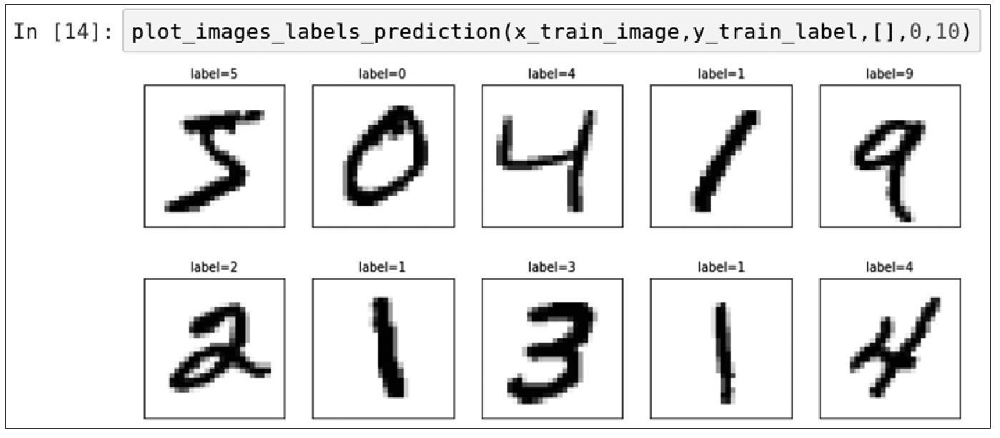
3．查看test测试数据
查看test测试数据项数，我们可以看到共计10000项数据。
4．显示test测试数据
执行plot_images_labels_prediction显示前10项测试数据。
6.4 多层感知器模型数据预处理
在下一章，我们将建立多层感知器模型（MultilayerPerceptron），必须先将images与label的内容进行预处理，才能使用多层感知器模型进行训练与预测。数据预处理分为以下两部分。
- features（数字图像的特征值）数据预处理：将在6.5节说明
- label（数字图像真实的值）数据预处理：将在6.6节说明。
6.5 features数据预处理
features（数字图像的特征值）数据预处理可分为下列两个步骤：
（1）将原本28×28的数字图像以reshape转换为一维的向量，其长度是784，并且转换为Float。
（2）数字图像image的数字标准化。
查看image的shape。
可以用下列指令查看每一个数字图像的shape是28×28。
将image以reshape转换。
下面的程序代码将原本28×28的二维数字图像以reshape转换为一维的向量，再以astype转换为Float，共784个浮点数。
查看转换为一维向量的shape。
可以用下列指令查看每一个数字图像是784个浮点数。
查看images图像的内容。
查看images第0项的内容。
从以上执行结果可知，大部分都是0，少部分是数字。每一个数字都是从0到255的值，代表图形每一个点灰度的深浅。
将数字图像images的数字标准化。
images的数字标准化可以提高后续训练模型的准确率，因为images的数字是从0到255的值，所以最简单的标准化方式是除以255。
查看数字图像images数字标准化后的结果。
使用下列指令查看数字图像images的数字标准化后的结果，都介于0与1之间。
6.6 label数据预处理
label（数字图像真实的值）标签字段原本是0～9的数字，必须以One-HotEncoding（一位有效编码）转换为10个0或1的组合，例如数字7经过One-HotEncoding转换后是0000000100，正好对应输出层的10个神经元。
查看原本的label标签字段。
以下列指令来查看训练数据label标签字段的前5项训练数据，我们可以看到这是0～9的数字。
label标签字段进行One-Hot Encoding转换。
下面的程序代码使用np_utils.to_categorical分别传入参数y_train_label（训练数据）与y_test_label（测试数据）的label标签字段，进行One-Hot Encoding转换。
查看进行One-Hot Encoding转换之后的label标签字段。
进行One-Hot Encoding转换之后，查看训练数据label标签字段的前5项数据，我们可以看到转换后的结果。
参考上面的结果，例如第1项数据，原来的真实值是5，进行One-Hot Encoding转换后，只有第5个数字（由0算起）是1，其余都是0。
6.7 结论
在本章中，我们已经介绍了如何使用Keras下载并且读取MNIST数据集，并介绍了MNIST数据集的特色，也完成了数据的预处理。在下一章，我们可以使用Keras建立多层感知器模型进行训练，并且使用模型进行预测。
第7章 Keras多层感知器识别手写数字
本章将介绍用Keras建立多层感知器模型，然后训练模型、评估模型的准确率，最后使用训练完成的模型识别MNIST手写数字。
关于多层感知器模型的详细介绍，可参考第2章。
有关本章的完整程序代码可参考范例程序Keras_Mnist_MLP_h256.ipynb。范例程序的下载与安装可参考本书附录A。
7.1 Keras多元感知器识别MNIST手写数字图像的介绍
1．多层感知器模型的介绍
为了能够识别MNIST手写数字图像，我们将建立如图7-1所示的多层感知器模型。
图7-1
2．多层感知器的训练与预测
建立如图7-2所示的多层感知器模型后，必须先训练模型才能够进行预测（识别）这些手写数字。
图7-2
以多层感知器模型识别MNIST数字图像可分为训练与预测。
▶ 训练
MNIST数据集的训练数据共60000项，经过数据预处理后会产生Features（数字图像特征值）与Label（数字真实的值），然后输入多层感知器模型进行训练，训练完成的模型就可以作为下一阶段预测使用。
▶ 预测
输入数字图像，预处理后会产生Features（数字图像特征值），使用训练完成的多层感知器模型进行预测，最后产生预测结果是0～9的数字。
3．建立多层感知器模型的步骤
多层感知器识别MNIST数据集中的手写数字的步骤说明如图7-3所示。
图7-3
7.2 进行数据预处理
有关读取MNIST数据集数据并且进行数据预处理的详细介绍可参考第6章。
导入所需模块。
读取MNIST数据。
将features（数字图像特征值）使用reshape转换。
下面的程序代码将原本28×28的数字图像以reshape转换成784个Float数。
将features（数字图像特征值）标准化。
将features（数字图像特征值）标准化可以提高模型预测的准确度，并且更快收敛。
label（数字真实的值）以One-Hot Encoding进行转换。
使用np_utils.to_categorical将训练数据与测试数据的label进行One-Hot Encoding转换。
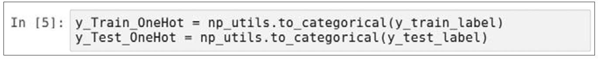
7.3 建立模型
我们将建立下列多层感知器模型，输入层（ _x_ ）共有784个神经元，隐藏层（ _h_ ）共有256个神经元，输出层（ _y_
）共有10个神经元，如图7-4所示。我们将使用下面的程序代码建立多层感知器模型。
图7-4
1．导入所需模块
2．建立Sequential模型
建立一个线性堆叠模型，后续只需要使用model.add（）方法将各个神经网络层加入模型即可。
3．建立“输入层”与“隐藏层”
以下程序代码将“输入层”与“隐藏层”加入模型，使用model.add方法加入Dense神经网络层。Dense神经网络层的特色是：所有的上一层与下一层的神经元都完全连接。
建立Dense神经网络层需输入表7-1中的参数。
表7-1 建立Dense神经网络层所需参数
4．建立“输出层”
使用下面的程序代码建立“输出层”，使用model.add方法加入Dense神经网络层，共有10个神经元，对应0～9十个数字。并且使用softmax激活函数进行转换，softmax可以将神经元的输出转换为预测每一个数字的概率。

建立“输出层”输入表7-2中的参数。
表7-2 建立“输出层”所需参数
以上建立Dense神经网络层不需要设置input_dim，因为Keras会自动按照上一层的units是256个神经元，设置这一层的input_dim为256个神经元。
5．查看模型的摘要
我们可以使用下列指令来查看模型的摘要。
执行后屏幕显示界面如图7-5所示。
图7-5
我们可以看到共有以下两层。
- 隐藏层： 共256个神经元，因为输入层与隐藏层是一起建立的，所以没有显示输入层。
- 输出层： 共10个神经元。
6．查看模型的摘要Param
模型的摘要还有Param字段，说明如图7-6所示。
图7-6
以上每一层Param都是超参数（Hyper-Parameters）。我们需要通过反向传播算法更新神经元连接的权重与偏差。可参考第2章的公式。
建立输入层与隐藏层的公式如下：
建立隐藏层与输出层的公式如下：
所以每一层Param计算方式如下：
- 隐藏层的Param是200 960，这是因为：
- 输出层的Param是2570，这是因为：
所以全部必须训练的超参数（Trainable Params）是每一层的Param的总和，计算方式如下：
通常Trainable Param数值越大，代表此模型越复杂，需要更多时间进行训练。
7.4 进行训练
在我们建立好深度学习模型之后，就可以使用反向传播算法进行训练了，可参考第2章使用反向传播算法进行训练的说明。
1．定义训练方式
在训练模型之前，我们必须使用compile方法对训练模型进行设置，指令如下：
compile方法需输入下列参数。
- loss： 设置损失函数，在深度学习中使用cross_entropy（交叉熵）训练的效果比较好。
- optimizer： 设置训练时，在深度学习中使用adam优化器可以让训练更快收敛，并提高准确率。
- metrics： 设置评估模型的方式是准确率。
2．开始训练
执行训练的程序代码如下：
以上程序代码说明如下：
使用model.fit进行训练，训练过程会存储在train_history变量中，需输入下列参数。
（1）输入训练数据参数
- _x_ ＝ _x_ _Train_normalize（features数字图像的特征值）。
- _y_ ＝ _y_ _Train_Onehot（label数字图像真实的值）。
（2）设置训练与验证数据比例
- 设置参数validation_split＝0.2。
训练之前Keras会自动将数据分成：80%作为训练数据，20%作为验证数据。因为全部数据是60 000项，所以分成：60 000×0.8＝48000项作为训练数据，60 000×0.2＝12 000项作为验证数据。
（3）设置epoch（训练周期）次数与每一批次项数
- epochs＝10：执行10个训练周期。
- batch_size＝200：每一批次200项数据。
（4）设置显示训练过程
- verbose＝2：显示训练过程。
以上程序代码共执行了10次训练周期，每一次训练执行下列功能：
- 使用48 000项训练数据进行训练，分为每一批次200项，所以大约分为240个批次（48 000/200＝240）进行训练。
- 训练完成后，会计算这个训练周期的准确率与误差，并且在train_history中新增一项数据记录。
▶ 以上程序代码执行后的结果如图7-7所示。
图7-7
从以上执行结果可知，共执行了10个训练周期，并可以发现误差越来越小，准确率越来越高。
3．建立show_train_history显示训练过程
之前的训练步骤会将每一个训练周期的准确率与误差记录在train_history变量中。我们可以使用下面的程序代码读取train_history，以图表显示训练过程。
程序代码说明如见表7-3。
表7-3 程序代码说明
4．画出准确率执行结果
下面的程序代码画出了准确率评估的执行结果，如图7-8所示。
图7-8
在以上执行后的屏幕显示界面中，“acc训练的准确率”是蓝色（深色）的，“val_acc验证的准确率”是黄色（浅色）的，（注意，本书是单色印刷，看不到蓝色和黄色，以深浅区分）。以上共执行了10个训练周期，我们可以发现：
- 无论是训练还是验证，准确率都越来越高。
- 在epoch训练后期，“acc训练的准确率”比“val_acc验证的准确率”高。
▶ 为何“acc训练的准确率”比“val_acc验证的准确率”高？
这是因为计算准确率的数据不同。
- acc训练的准确率：以训练的数据来计算准确率，因为相同的数据已经训练过了，又拿来计算准确率，所以准确率会比较高（就好像老师上课后，又使用上课的题目进行考试，准确率会比较高）。
- val_acc验证的准确率：以验证数据来计算准确率，这些验证数据在之前训练时并未拿来训练，所以计算的准确率会比较低。但是，这样计算出来的准确率比较客观，比较符合真实情况（就好像老师上课后，使用独立的题库进行考试，这样学生考试的准确率没有那么高，但是比较客观反映学生的真实水平）。
如果“acc训练的准确率”一直增加，但是“val_acc验证的准确率”一直没有增加，就可能是过度拟合（overfitting）的现象。从以上的图形我们可以看到，“acc训练的准确率”比“val_acc验证的准确率”高，虽然差异不是很大，但仍有轻微过度拟合的现象。
▶ 过度拟合的现象
什么是过度拟合呢？
如图7-9所示，有两个分类圆形与星形，我们希望训练后找出一条线，可以将圆形与星形进行分类。实线是我们希望找到的最佳分类线，可是训练过程太久或范例太少会导致虚线过度适应训练数据中特化且随机的特征。其结果是虽然在训练时准确率高，但是使用未知数据时的准确率低。在后续章节介绍深度学习时，再讲述如何处理过度拟合现象。
图7-9
▶ 以测试数据评估模型准确率
在完成所有训练周期之后，在7.4节我们还会以测试数据评估模型准确率，这是另一组独立的数据，所以计算准确率会更客观（就好像老师上了一个学期课之后，使用另一组独立的题库进行考试，就像期末考试一样，这样考试的结果才比较客观）。
5．画出误差执行结果（见图7-10）
图7-10
在上面执行结果的屏幕显示界面中，“loss训练的误差”是深色的，“val_loss验证的误差”是浅色的，总共执行了10个训练周期，我们可以发现：
- 无论是训练还是验证，验证的误差都越来越低。
- 在Epoch训练后期，“loss训练的误差”比“val_loss验证的误差”小。
7.5 以测试数据评估模型准确率
之前我们已经完成了训练，现在要使用test测试数据来评估模型准确率。
1．评估模型准确率
下面的程序代码用于评估模型准确率。
以上程序代码的执行结果是准确率为0.97。程序代码的说明见表7-4。
表7-4 程序代码说明
7.6 进行预测
通过之前的步骤，我们建立了模型，并且完成了模型训练，准确率达到还可以接受的0.97，接下来我们将使用此模型进行预测。
1．执行预测
我们可以用下列指令执行预测。
上面的程序代码使用model.predict_classes输入参数x_Test（测试数据的数字图像）进行预测，预测结果存储在prediction变量中。
2．预测结果
我们可以用下列指令来查看预测结果的前10项数据。
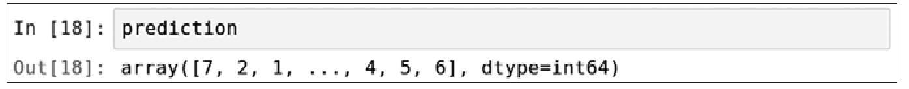
可以看到第1项预测的结果是7，第2项预测是2，诸如此类。
3．显示10项预测结果
使用上一章创建的plot_images_labels_prediction函数显示预测结果，输入参数：x_test_image（测试数据图像）、y_test_label（测试数据真实的值）、prediction（预测结果）和idx＝340（显示第340到349共10项）。
执行后预测结果如图7-11所示。
图7-11
我们可以看到有一项预测错误：label（真实值）是5，但predict（预测值）是3，这个手写数字图像确实挺潦草的，难怪会识别错误。
7.7 显示混淆矩阵
在上一节中我们看到了一个预测错误：真实值是5，但是预测值是3。如果我们想要进一步知道在所建立的模型中哪些数字的预测准确率最高，哪些数字最容易混淆（例如真实值是5，但是预测值是3），就可以使用混淆矩阵（confusionmatrix）来显示。
在机器学习领域，特别是统计分类的问题，混淆矩阵也称为误差矩阵（errormatrix），是一种特定的表格显示方式，可以让我们以可视化的方式了解有监督的学习算法的结果，看出算法模型是否混淆了两个类（将某一个标签预测成为另一个标签）。
1．使用pandas crosstab建立混淆矩阵
Pandas提供了建立混淆矩阵的功能。
程序代码说明见表7-5。
表7-5 程序代码说明
执行后显示出混淆矩阵，如图7-12所示。
图7-12
从以上混淆矩阵中，我们观察的结果如下：
- 对角线是预测正确的数字，我们发现： 真实值是“1”，被正确预测为“1”的项数有1125项，预测准确率最高，最不容易混淆。真实值是“5”，被正确预测为“5”的项数有852项最低，也就是说最容易混淆。
- 其他非对角线的数字代表将某一个标签预测错误，成为另一个标签，我们发现： 真实值是“5”，但是预测值是“3”。
2．建立真实值与预测DataFrame
因为我们希望能找出真实值是“5”但预测值是“3”的数据，所以创建下列DataFrame。下面的程序代码用来创建DataFrame，包含label（真实值）与prediction（预测值）。
以上执行的结果有两个字段，分别是label与predict。
3．查询真实值是“5”但预测值是“3”的数据
Pandas DataFrame可以很方便地让我们查询数据。例如下面的程序代码，可以找出真实值是“5”但预测值是“3”的数据。
从以上执行结果可知共有17项，显示前7项结果。
4．查看第340项数据
我们可以查看第340项结果，真实值是5但预测值为3。
从执行结果来看，这个数字图形看起来像5又像3，所以预测错误。
7.8 隐藏层增加为1000个神经元
为了增加多层感知器模型的准确率，在本节的范例中将隐藏层原本256个神经元改为1000。有关本节的完整程序代码，请参考范例程序Keras_Mnist_MLP_h1_1000.ipynb。
我们将使用下列程序代码建立多层感知器模型，如图7-13所示。
图7-13
将隐藏层原本256个神经元改为1000个神经元。
查看模型的摘要。
我们可以使用下列指令来查看模型的摘要。
执行后屏幕显示界面如图7-14所示。
图7-14
开始训练。
从指令执行后的屏幕显示界面中可以看到共执行了10个训练周期，如图7-15所示，从中可以发现误差越来越小，准确率越来越高。
图7-15
 查看训练过程的准确率。
查看训练过程的准确率。
在执行结果界面，“acc训练的准确率”是深色的，“val_acc验证的准确率”是浅色的，总共执行了10个训练周期，我们可以发现：
- 无论是训练还是验证，准确率都越来越高。
- 在Epoch训练后期，“acc训练的准确率”比“val_acc验证的准确率”高，过度拟合更严重。
预测准确率。
由以上执行结果可知准确率是0.9794。
7.9 多层感知器加入DropOut功能以避免过度拟合
为了解决过度拟合的问题，在本节的范例中会加入Dropout功能。有关本节的完整程序代码，请参考范例程序Keras_Mnist_MLP_h1_1000_｝DropOut.ipynb。
下面建立多层感知器模型。
隐藏层改为1000个神经元并且加入DropOut功能，如图7-16所示。
图7-16
修改隐藏层加入DropOut功能。
查看模型的摘要。
我们可以使用下列指令来查看模型的摘要。
执行后界面如图7-17所示。
图7-17
查看训练过程的准确率。
图示训练过程的准确率。
在执行界面中，“acc训练的准确率”是深色的，“val_acc验证的准确率”是浅色的，总共执行了10个训练周期，我们可以发现：
- 无论是训练还是验证，准确率都越来越高。
- 在Epoch训练后期，虽然“acc训练的准确率”比“val_acc验证的准确率”高，但是“训练的准确率”与“验证的准确率”差距变小，过度拟合的程度已经减轻。
查看准确率。
从以上执行结果可知准确率是0.98。比之前未加入DropOut时还高，这代表加入了DropOut不但可以解决过度拟合的问题，还可以增加准确率。
7.10 建立多层感知器模型包含两个隐藏层
为了更进一步增加多层感知器模型的准确率，在本节的范例中将建立两个隐藏层。有关完整的程序码，请参考范例程序Keras_Mnist_MLP_h1000_DropOut_h1000_DropOut.ipynb。
加入两个隐藏层并且加入DropOut功能。
如图7-18所示，我们将加入两个隐藏层并且加入DropOut功能。
图7-18
▶ 建立模型
▶ 加入“输入层”与“隐藏层1”
▶ 加入“隐藏层2”
▶ 加入“输出层”
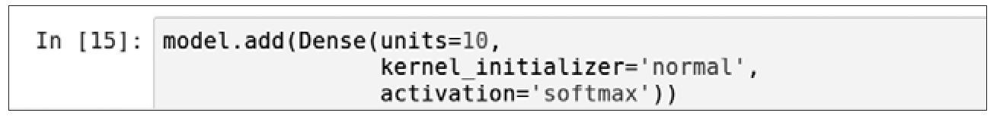
查看模型的摘要。
我们可以使用下列指令来查看模型的摘要。
执行后屏幕显示界面如图7-19所示。
图7-19
查看训练过程的准确率。

在执行界面中，“acc训练的准确率”是深色的，“val_acc验证的准确率”是浅色的，总共执行了10个训练周期，我们可以发现：
- 无论是训练还是验证，准确率都越来越高。
- 在Epoch训练后期，虽然“acc训练的准确率”比“val_acc验证的准确率”高，但是“训练的准确率”与“验证的准确率”差距变小，这代表已经大致解决了过度拟合的问题。
查看准确率。
从以上执行结果可知准确率是0.9797，准确率并没有显著提升。
7.11 结论
在本章中，我们使用多层感知器模型来识别MNIST数据集中的手写数字，尝试将模型加宽、加深，以提高准确率，并且加入Drop层，以避免过度拟合，准确率接近0.98。不过，多层感知器有其极限，如果还要进一步提升准确率，就必须使用卷积神经网络。
第8章 Keras卷积神经网络识别手写数字
在本章中，我们将介绍使用Keras建立卷积神经网络（Convolutional NeuralNetwork，CNN），然后训练模型、评估模型准确率接近0.99，最后使用训练完成的模型来识别MNIST手写数字。
卷积神经网络是由一位计算机科学家Yann LeCun所提出的，他在机器学习、计算机视觉和计算神经科学等诸多领域都有贡献。
有关本章完整的程序代码，请参考范例程序Keras_Mnist_CNN.ipynb。范例程序下载与安装，请参考本书附录A中的“本书范例程序的下载与安装说明”。
8.1 卷积神经网络简介
1．多层感知器与卷积神经网络
如图8-1所示，多层感知器与卷积神经网络主要的差异是：卷积神经网络增加了卷积层1、池化层1、卷积层2、池化层2的处理来提取特征。
图8-1
2．卷积神经网络介绍
从图8-1中可以看到卷积神经网络可分为两大部分。
- 图像的特征提取
通过卷积层1、池化层1、卷积层2、池化层2提取图像的特征。
- 完全连接的神经网络
包含平坦层、隐藏层、输出层，所组成的类神经网络，如图8-2所示。
图8-2
从图8-2中，我们可以看到从这些图像中提取了“7”的图像特征，卷积运算的效果类似滤镜效果，即用于提取不同的特征。注：downsampling就是缩减像素采样，简称缩减采样。
3．卷积运算
卷积层的意义是将原本一个图像经过卷积运算产生多个图像，就好像将相片叠加起来。
▶ 卷积运算的运算方式（见图8-3）
（1）先以随机的方式产生，filter weight大小是3×3。
（2）要转换的图像从左到右、自上而下，按序选取3×3的矩阵。
（3）图像选取的矩阵（3×3）与filter weight（3×3）乘积，计算产生第1行、第1列的数字。

图8-3
再以相同的方式计算第1行、第2列的数字，如图8-4所示。
图8-4
按照上面的相同方式，按序完成所有运算，就可以完成图像的处理。
4．使用单个filter weight卷积运算产生图像
如图8-5所示，将大小为28×28的数字图像7，使用随机产生的5×5filter weight（ _w_ ）滤镜进行卷积运算。
图8-5
卷积运算并不会改变图像大小，所以处理后的图像大小仍然是28×28。卷积运算后的效果很类似滤镜效果，这可以帮助我们提取输入的不同特征，例如边缘、线条和角等。
5．使用多个filter weight卷积运算产生多个图像
接下来，我们将随机产生16个filter weight，也就是16个滤镜。
卷积运算使用16个滤镜（filter weight）产生16个图像，每个图像提取不同的特征，如图8-6所示。
图8-6
6．Max-Pool运算说明
Max-Pool运算可以对图像缩减采样，如图8-7所示，原本图像是4×4的，经过Max-Pool运算转换后，图像大小为2×2。
图8-7
以上Max-Pool运算详细说明如下。
- 在左上角4个数字： 5、2、4、1最大的是5，所以计算结果是5，如图8-8所示。
图8-8
- 在右上角4个数字： 3、1、1、6，最大的是6，所以计算结果是6，如图8-9所示。
图8-9
- 在左下角4个数字： 7、8、1、1，最大的是8，所以计算结果是8，如图8-10所示。
图8-10
- 在右下角4个数字： 2、9、1、1，最大的是9，所以计算结果是9，如图8-11所示。
图8-11
7．使用Max-Pool转换手写数字图像
使用Max-Pool缩减采样，进行手写数字图像转换，将16个28×28的图像缩小为16个14×14的图像，但是不会改变图像的数量（仍然是16个），如图8-12所示。
图8-12
缩减采样会缩小图像，有下列好处。
（1）减少需处理的数据点： 减少后续运算所需的时间。
（2）让图像位置差异变小： 例如手写数字7，位置上下左右可能不同，位置的不同可能会影响识别。减小图像大小，让数字的位置差异变小。
（3）参数的数量和计算量下降： 这在一定程度上也控制了过度拟合。
8．建立卷积神经网络识别MNIST数据集
建立卷积神经网络识别MNIST数据集的步骤如图8-13所示。
图8-13
8.2 进行数据预处理
卷积神经网络与多层感知器进行数据预处理的方式不同，说明见表8-1。
表8-1 卷积神经网络与多层感知器进行数据预处理对比
导入所需模块。
读取MNIST数据。
将features（数字图像特征值）转换为四维矩阵。
将features（数字图像特征值）以reshape转换为6000×28×28×1的4维矩阵。
将features（数字图像特征值）标准化。
将features（数字图像特征值）标准化可以提高模型预测的准确度，并且更快收敛。
label（数字真实的值）以One-Hot Encoding进行转换。
使用np_utils.to_categorical将训练数据与测试数据的label进行One-Hot Encoding（一位有效编码）转换。
8.3 建立模型
我们将使用下列程序代码来建立卷积神经网络，如图8-14所示。
图8-14
1．导入所需模块
程序代码说明见表8-2。
表8-2 程序代码说明
2．建立keras的Sequential模型
建立一个Sequential线性堆叠模型，后续只需要使用model.add（）方法将各个神经网络层加入模型即可。
3．建立卷积层1与池化层1
一个完整的卷积运算包含一个卷积层与一个池化层。
▶ 建立卷积层1
使用下列程序代码建立卷积层1。输入的数字图像大小为28×28，进行第1次卷积运算会产生16个图像，卷积运算并不会改变图像大小，所以图像大小仍然是28×28。
以上程序代码把Conv2D层加入模型中，需输入表8-3中的参数。
表8-3 把Conv2D层加入模型中需输入的参数
▶ 建立池化层1
下面的程序代码建立池化层1，输入参数pool_size＝（2，2），执行第1次缩减采样，将16个28×28的图像缩小为16个14×14的图像。
4．建立卷积层2与池化层2
▶ 建立卷积层2
使用下面的程序代码建立卷积层2。执行第2次卷积运算：将原本的16个图像转换为36个图像，卷积运算不会改变图像大小，所以图像大小仍然是14×14。
以上程序代码把Conv2D层加入模型中，需输入表8-4中的参数。
表8-4 把Conv2D层加入模型中需输入的参数
▶ 建立池化层2，并且加入Dropout避免过度拟合
下面的程序代码建立池化层2，输入参数pool_size＝（2，2），执行第2次缩减采样，将36个14×14的图像缩小为36个7×7的图像。
下面的程序代码把Dropout（0.25）层加入模型中。其功能是，每次训练迭代时，会随机在神经网络中放弃25%的神经元，以避免过度拟合。
5．建立神经网络（平坦层、隐藏层、输出层）
▶ 建立平坦层
以下程序代码建立平坦层，将之前的步骤已经建立的池化层2，共有36个7×7的图像转换为一维的向量，长度是36×7×7＝1764，也就是1764个Float数，正好对应1764个神经元。
▶ 建立隐藏层
下面的程序代码建立隐藏层，共有128个神经元。
并且把Dropout层加入模型中。Dropout（0.5）的功能是，每次训练迭代时，会随机地在神经网络中放弃50%的神经元，以避免过度拟合。
▶ 建立输出层
最后建立输出层，共有10个神经元，对应0～9共10个数字。并且使用softmax激活函数进行转换，softmax可以将神经元的输出转换为预测每一个数字的概率。
6．查看模型的摘要
我们可以使用下列指令来查看模型的摘要，如图8-15所示。
图8-15
8.4 进行训练
当我们建立好深度学习模型后，就可以使用反向传播算法（参考第2章）进行训练。
1．定义训练方式
在训练模型之前，我们必须使用compile方法对训练模型进行设置，如下列指令：
compile方法需输入3个参数：loss、optimizer和metrics，对这3个参数的解释说明可参考7.4节。
2．开始训练
执行训练的程序代码如下：
使用model.fit进行训练，训练过程会存储在train_history变量中，这个训练需输入下列参数。
（1）输入训练数据参数
- x＝x_Train4D_normalize（features数字图像的特征值）。
- y＝y_Train_OneHot（label数字图像真实的值）。
（2）设置训练与验证数据比例
- 设置参数validation_split＝0.2。
训练之前Keras会自动将数据分成：80%作为训练数据，20%作为验证数据。因为全部是60 000项，所以分成：60 000×0.8＝48000作为训练数据，60 000×0.2＝12 000作为验证数据。
（3）设置训练周期次数与每一批次项数
- epochs＝10：执行10个训练周期。
- batch_size＝300：每一批次300项数据。
（4）设置显示训练过程
- verbose＝2：显示训练过程。
以上程序代码共执行了10个训练周期，每一个训练周期执行下列功能：
- 使用48 000项训练数据进行训练，分为每一批次300项，所以大约分为160批次（48 000/300＝160）进行训练。
- Epoch（训练周期）训练完成后，会计算这个训练周期的准确率与误差，并且在train_history中新增一项数据记录。
以上程序代码执行后的结果如图8-16所示。
图8-16
从以上执行结果的屏幕显示界面中可以看到共执行了10个训练周期，从中可以发现误差越来越小，准确率越来越高。
3．画出准确率执行结果
之前的训练步骤会将每一个训练周期的准确率与误差记录在train_history变量中。
我们可以使用下面的程序代码读取train_history，画出准确率的执行结果。有关show_train_history的细节可参考第7章的说明。
在以上执行界面中，“acc训练的准确率”是深色的，“val_acc验证的准确率”是浅色的，总共执行了10个训练周期，我们可以发现，无论是训练还是验证，准确率都越来越高。
4．画出误差执行结果
在以上执行界面中，“loss训练的误差”是深色的，“val_loss验证的误差”是浅色的，总共执行了10个训练周期，我们可以发现，无论是训练还是验证，验证的误差都越来越低。
8.5 评估模型准确率
在之前的步骤中，我们已经完成了训练，现在要使用test测试数据集来评估模型准确率。用下面的程序代码来评估模型的准确率。
从以上的执行结果可知准确率是0.989。程序代码说明见表8-5。
表8-5 程序代码说明

8.6 进行预测
之前的步骤我们建立了模型，并且完成了训练模型，准确率达到0.989，接下来将使用此模型进行预测。
执行预测。
我们可以使用下列指令执行预测。
下面的程序代码使用model.predict_classes输入参数x_Test4D_normalize（已标准化测试数据的数字图像）进行预测。
预测结果。
我们可以使用下列指令查看预测结果的前10项数据。
可以看到第1项预测结果是7，第2项是2……
显示前10项预测结果。
使用第6章创建的show_images_labels_prediction函数显示前10项预测结果，传入测试数据图像、label（真实值）及predict（预测结果）。

8.7 显示混淆矩阵
Pandas提供了建立混淆矩阵的功能。
以上程序代码说明见表8-6。
表8-6 程序代码说明
执行后显示如图8-17所示的混淆矩阵。
图8-17
观察以上混淆矩阵的结果如下：
- 对角线是预测正确的数字，我们发现： 真实值是“1”，被正确预测为“1”的项数有1132项，最高，即最不容易混淆。真实值是“5”，被正确预测为“5”的项数有881项，最低，也就是说最容易混淆。
- 其他非对角线的数字代表将某一个标签错误预测为另一个标签，我们发现： 真实值是“8”，但是预测值是“0”时最高，也就是最容易混淆。
8.8 结论
在本章中，我们使用卷积神经网络来识别MNIST数据集中的手写数字，其分类精度接近0.99。不过，这只是单色手写数字的识别，相对来说比较简单，下一章我们将介绍更具挑战性的，使用卷积神经网络来识别CIFAR-10数据集，识别彩色图像共10个分类：飞机、汽车、鸟、猫、鹿、狗、青蛙、马、船、卡车。
第9章 Keras CIFAR-10图像识别数据集
CIFAR-10是由Alex Krizhevsky、Vinod Nair与GeoffreyHinton收集的一个用于图像识别的数据集，共有10个分类：飞机、汽车、鸟、猫、鹿、狗、青蛙、马、船、卡车。CIFAR-10数据集与之前的MNIST数据集相比，它的色彩、颜色噪点较多，同一分类（如卡车）大小不一、角度不同、颜色不同。所以CIFAR-10图像识别的难度比MNIST数据集高很多。
我们可以在下列网址查看CIFAR-10数据集（见图9-1）：
https://www.cs.toronto.edu／~kriz/cifar.html
图9-1
CIFAR-10数据集共有60 000个32×32的彩色图像，有50 000个训练图像和10000个测试图像。共有10个分类，它们是：飞机、汽车、鸟、猫、鹿、狗、青蛙、马、船、卡车。每个分类有6000个图像。有关完整的程序代码，参考范例程序Keras_Cifar_CNN_Introduce.ipynb。有关范例程序下载与安装的细节，可参考本书附录A中的“本书范例程序的下载与安装说明”。
9.1 下载CIFAR-10数据
我们将创建Keras程序，下载并读取CIFAR-10数据。
导入所需模块。
程序代码说明见表9-1。
表9-1 程序代码说明
下载并且解压缩CIFAR-10文件
Keras提供了cifar10.load_data（）用于下载或读取CIFAR-10数据。第一次执行cifar10.loaddata（）方法时，程序会检查是否有cifar-10-batches-py.tar文件，如果还没有，就会下载文件，并且解压缩下载的文件。以下是第一次下载文件时屏幕显示的界面，因为要下载文件，所以运行时间可能会比较长。
查看CIFAR-10数据文件。
查看下载的CIFAR-10数据文件，这个文件会因我们使用的环境是Windows或Linux Ubuntu而有所不同，说明如下：
▶ 在Windows下查看下载文件的CIFAR-10数据文件
如图9-2所示，因为笔者的用户名称是kevin，所以下载后会存放在目录C：\Users\kevin\.keras\datasets中，文件名是cifar-10-batches-py.tar。
图9-2
▶ 在Linux Ubuntu下查看已下载的MNIST数据文件
下载完成后，我们可以输入下列指令来查看“～／.keras/datasets/cifar-10-batches-py”下的CIFAR-10子目录，如图9-3所示。
图9-3
 读取CIFAR-10数据。
读取CIFAR-10数据。
再次执行cifar10.load_data（）时，由于之前已经下载了文件，不需要再下载了，只需要读取文件，因此运行时间不会太长。
查看CIFAR-10数据。
下载后，我们可以使用下列指令来查看数据项数。
从以上执行结果可知，第一维是项数，数据可分为两部分：
- train训练数据50 000项。
- test测试数据10 000项。
9.2 查看训练数据
先查看训练数据。
1．训练数据是由images与label所组成的
y_label_train是图像数据的真实值，每一个数字代表一种图像类别的名称，共有10个类别：0：airplane 、1：automobile、2：bird 、3：cat 、4：deer 、5：dog 、6：frog 、7：horse 、8：ship 、9：truck，如图9-4所示。
图9-4
2．Images的shape形状
下面的程序代码使用.shape方法来查看x_img_train的shape。
各维的说明如下：
3．第0项images图像的内容
下面的程序代码用来查看第0项images的内容，每一点都是由是RGB三原色所组成的，RGB共有3个数字，数字的范围从0到255，代表图像的RGB颜色。
4．y_label_train的shape形状
9.3 查看多项images与label
之前只是显示数据，接下来将修改plot_images_labels_prediction（）函数以显示图像。
定义label_dict字典。
先以Python字典dict定义每一个数字所代表的图像类别的名称。
修改plot_images_labels_prediction（）函数。
为了便于查看多项数据images与label，我们将修改第6章所创建的plot_images_labels_prediction（），并且使用label_dict字典将label与prediction的0～9数字转换为图像类别名称。
查看训练数据前10项数据。
使用plot_images_labels_prediction（）显示训练数据前10项数据。因为还没有预测数据，所以prediction参数输入空的list［］。
9.4 将images进行预处理
为了将images的内容送入卷积神经网络模型进行训练与预测，必须先进行数据的预处理。
查看训练数据第1个图像的第1个点。
我们可以用下列指令来查看训练数据的第1个图像的第1个点。
可以看到每一点共有3个数字，分别代表RGB ［59，62，63］。
将照片图像image的数字标准化。
image的数字标准化可以提高模型的准确率，因为image的数字是0到255，所以最简单标准化的方式是除以255，如下列程序代码：
查看照片图像image的数字标准化后的结果。
使用下列指令查看照片图像image的数字标准化后的结果，全部的数值都在0与1之间。
9.5 对label进行数据预处理
对于CIFAR-10数据集，我们希望预测图像的类型，例如“船”的图像的label是8，经过一位有效编码（One-HotEncoding）转换为0000000010，10个数字正好对应输出层10个神经元。
查看label原来的shape形状。
使用下列指令来查看label原来的shape形状。
我们可以看到以上执行的结果共计50 000项，每一项是1个0～9之间的数字。
查看前5项数据。
使用下列指令来查看前5项数据：我们可以看到都是0～9的数字，代表图像的分类。
将label标签字段转换为一位有效编码（One-Hot Encoding）。
Keras提供了np_utils.to_categorical方法，可以进行One-HotEncoding转换。下面的程序代码将训练数据与测试数据的label标签字段进行One-Hot Encoding转换。
One-Hot Encoding转换之后的label标签字段。

从以上执行结果可知，共计50 000项，每一笔是10个0或1的组合。
查看转换为One-Hot Encoding之后的结果。
查看以上执行结果可知，第1项数据原来的真实值是6，执行One-Hot Encoding转换后变成0或1的组合，只有第6个数字（从0算起）是1，其余都是0。
9.6 结论
本章介绍了下载并且读取CIFAR-10数据集，还介绍了CIFAR-10数据集的特色，并且已经完成数据的预处理。在下一章，我们可以使用Keras建立卷积神经网络模型，训练模型并进行预测。
第10章 Keras卷积神经网络识别CIFAR-10图像
在本章中，我们将介绍使用Keras建立卷积神经网络模型，并且训练模型、评估模型准确率，然后使用训练完成的模型来识别CIFAR-10图像数据集。由于CIFAR-10图像识别的难度比MNIST数据集识别的难度高很多，因此我们尝试以更多次的卷积与池化运算来提高识别的准确率。
10.1 卷积神经网络简介
卷积神经网络介绍
我们将建立的卷积神经网络如图10-1所示。
图10-1
如图10-1所示，我们可以看到卷积神经网络可分为以下两大部分。
- 图像的特征提取： 通过卷积层1、池化层1、卷积层2、池化层2的处理，提取图像的特征。
- 完全连接神经网络（fully connected layer）： 包含平坦层、隐藏层、输出层所组成的类神经网络。
本章完整的程序代码可参考范例程序Keras_Cifar_CNN.ipynb。范例程序下载与安装可参考本书附录A。
10.2 数据预处理
关于CIFAR-10数据预处理的详细说明可参考第9章。
导入所需模块。
程序代码说明见表10-1。
表10-1 程序代码说明
读取CIFAR-10数据。
显示训练与验证数据的shape。
 将features（照片图像特征值）标准化。
将features（照片图像特征值）标准化。
将features（照片图像特征值）标准化可以提高模型预测的准确度，并且更快收敛。
label（照片图像真实的值）以一位有效编码进行转换。
以下程序代码将训练数据与测试数据的label进行一位有效编码转换。
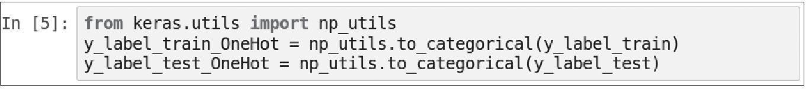
10.3 建立模型
我们将使用下面的程序代码建立卷积神经网络。
1．导入所需模块
▶ 导入keras的Sequential模块
▶ 导入keras的layers模块
▶ 导入keras的layers模块
我们将使用下面的程序代码建立卷积神经网络，如图10-2所示。
图10-2
2．建立keras的Sequential模型
下面的程序代码建立一个Sequential线性堆叠模型，后续只需要将各个神经网络层加入模型即可。
3．建立卷积层1与池化层1
一个完整的卷积运算包含一个卷积层与一个池化层。
▶ 建立卷积层1
使用下列程序代码建立卷积层1。输入图像的大小为32×32，会产生32个图像，卷积运算并不会改变图像大小，所以图像大小仍然是32×32。卷积运算的效果很类似滤镜效果，可以提取图像的特征。
以上程序代码把Conv2D层加入模型中，需输入表10-2中的参数。
表10-2 把Conv2D层加入模型中需输入的参数
▶ 加入Dropout避免过度拟合
以下程序代码把Dropout加入模型中，Dropout（0.25）的功能是，每次训练迭代时，会随机地在神经网络中放弃25%的神经元，以避免过度拟合。
▶ 建立池化层1
下面的程序代码建立池化层1，输入参数pool_size＝（2，2），执行第一次缩减采样，将32×32的图像缩小为16×16的图像，缩减采样不会改变数量，所以仍然是32个。
4．建立卷积层2与池化层2
▶ 建立卷积层2
使用下面的程序代码建立卷积层2。执行第2次卷积运算：将原本的32个图像转换为64个图像，卷积运算不会改变图像大小，所以图像大小仍然是16×16。
以上程序代码把Conv2D层加入模型中，需输入表10-3中的参数。
表10-3 把Conv2D层加入模型中需输入的参数
▶ 加入Dropout避免过度拟合
以下程序代码加入Dropout（0.25）的功能是，每次训练迭代时会随机地在神经网络中放弃25%的神经元，以避免过度拟合。
▶ 建立池化层2
以下程序代码建立池化层2，输入参数pool_size＝（2，2），执行第二次缩减采样，将16×16的图像缩小为8×8的图像，缩减采样不会改变数量，所以仍然是64个。
5．建立神经网络（平坦层、隐藏层、输出层）
▶ 建立平坦层
下面的程序代码建立平坦层，将前面的步骤建立的“池化层2”的64个8×8的图像转换为一维的向量，长度是64×8×8＝4096，也就是4096个Float数，正好对应4096个神经元。并且加入Dropout（0.25），每次训练迭代时，会随机地在神经网络放弃25%的神经元，以避免过度拟合。

▶ 建立隐藏层
下面的程序代码建立隐藏层，共有1024个神经元，并且加入Dropout（0.25），随机去掉25%的神经元，以避免过度拟合。
▶ 建立输出层
最后建立输出层，共有10个神经元，对应0～9共10个图像类别。并且使用softmax激活函数进行转换，softmax可以将神经元的输出转换为预测每一个图像类别的概率。

6．查看模型的摘要
可以使用下列指令来查看模型的摘要。
图10-3
10.4 进行训练
当我们建立好深度学习模型后，就可以使用反向传播算法进行训练。详细说明可参考第2章。
1．定义训练方式
在训练模型之前，我们必须使用compile方法对训练模型进行设置，如下列指令：
compile方法需输入3个参数：loss、optimizer和metrics（对这3个参数的解释说明可参考7.4节）。
2．开始训练
以上程序代码说明如下：
使用model.fit进行训练，训练过程会存储在train_history变量中，需输入下列参数。
（1）输入训练数据参数
- _x_ ＝x_img_train_normalize（features照片图像的特征值，经过标准化处理）。
- _y_ ＝y_label_train_OneHot（label照片图像真实的值，经过One-Hot Encoding转换）。
（2）设置训练与验证数据比例
- 设置参数validation_split＝0.2。
训练之前Keras会自动将数据分成：80%作为训练数据，20%作为验证数据。因为总共50 000项数据，所以分成：50 000×0.8＝40000项作为训练数据，50 000×0.2＝10 000项作为验证数据，如图10-4所示。
（3）设置训练周期次数与每一批次项数
- epochs＝10：执行10个训练周期。
- batch_size＝128：每一批次128项数据。
（4）设置显示训练过程
- verbose＝2：显示训练过程。
以上程序代码共执行了10个训练周期，每一个训练周期都执行下列功能：
- 使用40 000项训练数据进行训练，分为每一批次128项，所以大约分为160批次（40 000/128＝313）进行训练。
- Epoch（训练周期）训练完成后，会计算这个训练周期的准确率与误差，并且在train_history中新增一项数据记录。
执行结果如图10-4所示。
从以上执行结果的屏幕显示界面中，我们可以看到共执行了10个训练周期，同时可以发现误差越来越小，准确率越来越高。
3．画出准确率执行的结果
下面是程序代码画出准确率执行的结果。有关show_train_history可参考第7章的说明。
在以上执行结果的屏幕显示界面中，“acc训练的准确率”是深色的，“val_acc验证的准确率”是浅色的，总共执行了10个训练周期，我们可以发现：
- 无论是训练还是验证，准确率都越来越高。
- 在Epoch训练后期，“acc训练的准确率”比“val_acc验证的准确率”高。
4．画出误差的执行结果
在以上执行结果的屏幕显示界面中，“loss训练的误差”是深色的，“val_loss验证的误差”是浅色的，总共执行了10个训练周期，我们可以发现：
- 无论是训练还是验证，验证的误差都越来越低。
- 在Epoch训练后期，“loss训练的误差”比“val_loss验证的误差”小。
10.5 评估模型准确率
之前我们已经完成训练，现在要使用test测试数据集，评估模型准确率。
用下面的程序代码来评估模型准确率。
从以上的执行结果可知准确率是0.71。以上程序代码说明见表10-3。
表10-3 程序代码说明
10.6 进行预测
恭喜你，之前的步骤我们建立好了模型，并且完成了模型的训练，准确率达到了还可以接受的0.97，接下来我们将使用此模型进行预测。
1．执行预测
我们可以使用下列指令执行预测：
下面的程序代码使用model.predict_classes，输入参数x_Test（测试数据的照片图像）来进行预测。
2．预测结果
可以使用下列指令来查看预测结果的前10项数据：

可以看到第1项预测的结果是3，第2项是8……
3．显示前10项预测结果
使用第9章修改的plot_images_labels_prediction函数显示前10项预测结果，传入测试数据图像、label（真实值）及prediction（预测结果）。
10.7 查看预测概率
有时我们不只希望知道预测结果，还想要知道预测每一种类别的概率。
1．使用测试数据进行预测
我们使用model.predict输入测试数据，就可以预测概率。
2．建立show_Predicted_Probability函数
▶ 定义show_Predicted_Probability函数

传入参数：y（真实值）、prediction（预测结果）、x_img（预测的图像）、Predicted_Probability（预测概率）、i（开始显示的数据index）。
▶ 显示 _y_ （真实值）与prediction（预测结果）
▶ 设置显示图像的大小，并且显示出照片图像
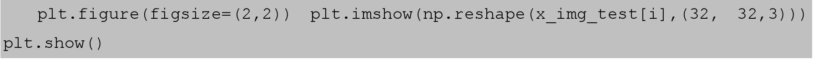
▶ 使用for循环读取Predicted_Probability显示预测概率
3．查看第0项数据预测的概率（见图10-5）
图10-5
从以上执行结果可知，这张照片图像预测为“猫”的概率最高，预测为“狗”的概率次高，所以最后预测的结果是“猫”预测正确。
4．查看第3项数据预测的概率（见图10-6）
图10-6
从以上执行结果可知，这张照片图像预测为“船”的概率最高，预测为“飞机”的概率次高，所以最后预测的结果是“船”。但是真实值是“飞机”，所以此项预测是错误的。
10.8 显示混淆矩阵
在上一节中我们看到了一个预测错误：真实值“飞机”预测成“船”了。如果我们想要进一步知道所建立的模型中哪些图像类别的预测准确率最高，哪些图像类别最容易混淆（预测错误），就可以使用混淆矩阵来显示。
1．查看预测结果的形状
我们将使用pd.crosstab建立混淆矩阵，但是pd.crosstab的输入都必须是一维数组，所以要先确认prediction（预测结果）与y_label_test（真实值）是一维数组。如果不是一维数组，就必须先转换为一维数组。下列指令用于查看预测结果的shape形状。
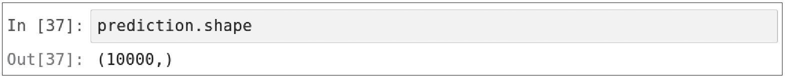
从以上执行结果可知预测结果是一维数组。
2．查看y_label_test真实值的shape形状
用下列指令来查看y_label_test真实值的shape形状。
从以上执行结果可知，y_label_test真实值的shape形状是二维数组，后面必须将它转换为一维数组。
3．将y_label_test真实值转换为一维数组
下面的程序代码使用reshape（-1）转换为一维数组。
从以上执行结果可知已经转换为1维数组了。
4．使用pandas crosstab建立混淆矩阵
Pandas提供了用于建立混淆矩阵的功能。

程序代码说明见表10-4。
表10-4 程序代码说明
执行后显示混淆矩阵，如图10-7所示。
图10-7
从以上混淆矩阵，我们观察如下。
- 对角线是预测正确的，我们发现：
- 真实值是6“蛙”，被正确预测为6“蛙”的项数有868项，最高，最不容易混淆。
- 真实值是3“猫”，被正确预测为3“猫”的项数有555项，最低，也就是说最容易混淆。
- 其他非对角线的数字代表将某一个标签错误预测成为另一个标签，最容易混淆：
- 真实值是5“狗”，但预测是3“猫”，项数有184项，最高，也就是说“狗”很容易被误认为“猫”。
- 真实值是3“猫”，但预测是5“狗”，项数有158项，次高，也就是说“狗”很容易被误认为“猫”。人类识别也很容易搞错“狗”与“猫”，难怪机器学习也预测错误。
▶ 动物类不容易混淆为交通工具类
CIFAR-10的图像类别大约可以分为以下两大类。
- 动物类： 2（鸟）、3（猫）、4（鹿）、5（狗）、6（蛙）、7（马）。
- 交通工具类： 0（飞机）、1（汽车）、8（船）、9（卡车）。
我们还发现了一些有趣的现象：
- 2、3、4、5、6、7预测为1的数量都是个位数。
也就是说，2（鸟）、3（猫）、4（鹿）、5（狗）、6（蛙）、7（马）都是动物，不容易混淆为1（汽车）。
- 但是8、9预测为1的数量都分别是十位数。
也就是说，8（船）、9（卡车）属于交通工具，容易混淆为1（汽车），如图10-8所示。
图10-8
10.9 建立3次的卷积运算神经网络
之前建立的卷积式神经网络执行结果的准确率只有0.738，我们希望能通过更多次的卷积运算提高准确率。下面的程序代码可参考范例程序Keras_Cifar_CNN_Deeper_Conv3.ipynb。
1．建立3次的卷积运算的神经网络架构图（见图10-9）
2．建立卷积层1与池化层1
在下面的程序代码中，我们增加了一次Conv2D卷积运算。
3．建立卷积层2与池化层2
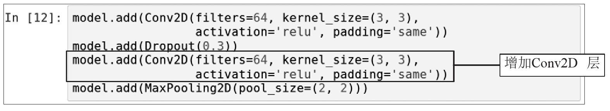
图10-9
4．新增加卷积层3与池化层3
下面再增加卷积层3与池化层3。
5．建立神经网络（平坦层、隐藏层1、隐藏层2、输出层）
我们建立更宽、更深的神经网络，加入隐藏层1（2500个神经元）和隐藏层2（1500个神经元）。
6．训练模型
为了增加准确率，我们执行了50个训练周期，需要花很长时间，如图10-10所示。
图10-10
7．评估模型的准确率
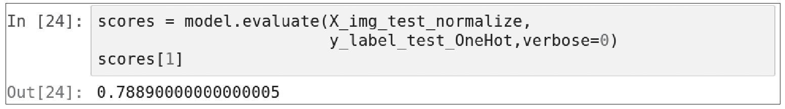
评估模型准确率从0.738提高到了0.788。
10.10 模型的保存与加载
上一节的Keras_Cifar_CNN_Deeper_Conv3.ipynb程序训练必须花很长时间，往往需要数小时。有时还可能因为某些原因导致计算机宕机，这样之前的训练就前功尽弃了，解决的方法是：每次程序执行完成训练后，将模型权重保存一下。下次程序执行训练之前，先加载模型权重，再继续训练。
下面的程序代码可参考范例程序Keras_Cifar_CNN_Continue_Train.ipynb。
设置训练周期。
每次训练周期不要设置得太多，例如下面的范例中，epochs设置为5。
在执行训练之前加载模型权重。
在执行训练之前，先使用model.load_weights加载模型权重。
从以上执行结果可知，因为第一次执行尚未保存模型权重，所以会显示“加载模型失败！开始训练一个新模型”。
在程序的最后保存模型权重。
将这次执行5个训练周期的结果使用model.save_weights保存在文件中。
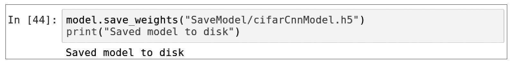
第2次执行程序。
第2次执行程序，在执行训练之前，一样先使用model.load_weights加载模型权重。
从以上执行结果可知，因为第2次执行会加载之前保存的模型权重，所以会显示“加载模型成功！继续训练模型”，这样就可以接在第一次的执行结果之后继续训练。
10.11 结论
在本章中，我们介绍了使用Keras建立卷积神经网络识别CIFAR-10图像数据。后续章节我们将以多层感知器模型来预测泰坦尼克号乘客的生存概率。
第11章 Keras泰坦尼克号上的旅客数据集
泰坦尼克号的沉没是历史悲剧。1912年4月15日泰坦尼克号在首航时，撞上冰山沉没，乘客和船员共2224人，其中1502人死亡。这场悲剧震撼了国际社会，之后船舶行业制定了更好的安全规定。泰坦尼克号的旅客数据集被完整地保留下来。我们在本章中先介绍数据的预处理，下一章将建立多层感知器模型来预测每一位乘客的存活率。
如图11-1所示，以多层感知器模型来预测泰坦尼克号乘客的生存概率，可分为训练与预测两部分。
▶ 训练
泰坦尼克号数据集的训练数据共有1309项，经过数据预处理后会产生feature，（共有9个特征字段，例如性别、年龄等）与label标签字段（是否生存？1：是，2：否），然后输入多层感知器模型进行训练，训练完成的模型就可以在下一阶段进行预测时使用。
▶ 预测
输入新的泰坦尼克号数据，预处理后会产生features（9个特征字段），使用训练完成的多层感知器模型进行预测，最后产生预测结果：生存概率。
图11-1
本章完整的程序代码可参考范例程序Keras_Taianic_Introduce.ipynb。范例程序下载与安装可参考本书附录A。
11.1 下载泰坦尼克号旅客数据集
1．导入下载所需模块
以上程序代码的说明见表11-1。
表11-1 程序代码说明
2．下载泰坦尼克号的旅客数据集
使用下面的程序代码来下载泰坦尼克号的旅客数据集。
从以上执行结果可知，程序会下载titanic3.xls，并且存储在程序执行目录下的data目录中。
▶ 设置下载的网址
▶ 设置存储文件的路径
▶ 判断文件不存在就会下载文件
以上程序代码在判断文件不存在之后，就会使用urllib.request.urlretrieve下载文件。输入参数：url（下载的网址）与filepath（存储文件的路径）。
3．查看已下载的文件
查看下载的数据文件，根据使用的环境是Windows或Linux Ubuntu而稍有不同，说明如下：
▶ 在Windows下查看已下载的数据文件
我们可以使用文件资源管理器来查看程序执行目录下的data目录，例如：我们的执行目录是C：\pythonwork\keras，就可以在C：\pythonwork\keras\data看到已下载的titanic3.xls文件，如图11-2所示。
图11-2
▶ 在Linux Ubuntu下查看已下载的数据文件
在“终端”程序输入下列命令，先切换到程序执行目录，再查看目录。
执行后屏幕显示的界面如图11-3所示，我们可以看到已下载的titanic3.xls文件。

图11-3
11.2 使用Pandas DataFrame读取数据并进行预处理
Pandas为Python提供了DataFrame功能，可以很方便地处理数据。
 导入所需模块。
导入所需模块。
读取titanic3.xls。
下面的程序代码使用Pandas所提供的read_excel（）方法把titanic3.xls文件读取到all_df DataFrame。
查看前两项数据。
下面的程序代码用来查看前两项泰坦尼克号的旅客数据。
以上各个字段说明见表11-2。
表11-2 字段说明
（续表）
以上字段中survival（是否生存）是label标签字段，也就是我们要预测的目标，其余都是特征字段。
把需要的字段选取到DataFrame中。
以上字段中的ticket（船票号码）、cabin（舱位号码），我们认为与要预测的结果survived（是否生存）关联不大，所以我们将其忽略，只选择下列字段到DataFrame中。
选取字段后，显示前两项数据。
在以上字段中，还有表11-3中的问题必须进行预处理，后续才能够进行机器学习训练。
表11-3 还需要处理的问题
11.3 使用Pandas DataFrame进行数据预处理
使用Pandas DataFrame进行数据预处理，后续才能够进行深度学习训练。
将name字段删除。
下面的程序代码all_df使用drop方法删除name字段。
找出含有null值的字段。
我们可以使用下列指令找出含有null值（无数据）的字段。
因为在后续进行深度学习训练时字段数据必须是数字，不能是null值，所以必须将null字段填上数值。至于要填上什么数值，最简单的方法是填上0，但是0不符合实际状态，例如年龄应该不会是0岁，fare运费应该也不会是0，所以我们将null值替换为字段的平均值，这样比较符合实际情况。
将age字段为null的数据替换成平均值。
下面的程序代码先使用df［’age’］.mean（）方法计算age字段的平均值age_mean，然后使用df［’age’］.fillna（age_mean）将null值替换成平均值。
将fare字段为null的数据替换成平均值。
下面的程序代码先使用df［’fare’］.mean（）方法计算fare字段的平均值fare_mean，然后使用df［’fare’］.fillna（fare_mean）将null值替换成平均值。
转换性别字段为0与1。
原本性别字段是文字，我们必须转换为0与1，这样后续才能进行机器学习训练。以下程序代码使用map方法将’female’转换为0，’male’转换为1。
将embarked字段进行一位有效编码转换。
Pandas提供了一个很方便的方法进行一位有效编码转换，使用get_dummies（）传入下列参数。
- data： 要转换的DataFrame，在此输入df。
- columns： 要转换的字段，在此输入［“embarked“］。
查看转换后的DataFrame。
11.4 将DataFrame转换为Array
因为后续要进行深度学习训练，所以必须先将DataFrame转换为Array。
DataFrame转换为Array。
查看ndarray的shape。
可以使用下列指令来查看array的shape。
从以上执行结果可知，ndarray共1309项10个字段。
查看ndarray的前两项数据。
可以使用下列指令来查看ndarray的前两项数据。
从以上执行结果可知，第0个字段是label，第1个字段及之后的字段是features。
提取features与label。
可以使用下列Python slice语句来提取features与label。
以上程序代码说明：ndarray共有二维，第一维是项数，第二维是字段。
查看前两项label标签字段。
查看前两项features特征字段。
从以上执行结果可知，因为数值特征字段单位不同，例如年龄29岁、运费211元等，数字差异很大，没有一个共同的标准。这时就要使用标准化让所有数值都在0与1之间，使数值特征字段有共同的标准。进行标准化可以提高训练后模型的准确率。我们将在下一节介绍如何进行标准化。
11.5 将ndarray特征字段进行标准化
我们将使用sklearn提供的preprocessing数据预处理模块进行标准化。
导入sklearn的数据预处理模块。
建立MinMaxScaler标准化刻度minmax_scale。
我们将使用preprocessing.MinMaxScaler来进行标准化，需输入参数feature_range设置标准化之后的范围在0和1之间。程序代码如下：
使用minmax_scale.fit_transform进行标准化。
然后使用minmax_scale.fit_transform传入参数Features（特征字段）进行标准化。程序代码如下：
查看标准化之后的特征字段前两项数据。
从以上执行结果可知，标准化之后的数字都介于0与1之间。
11.6 将数据分为训练数据与测试数据
因为在后面要进行深度学习模型的训练，所以必须将数据分为训练数据（用于训练模型）与测试数据（用于计算“训练完成模型”的准确率）。
将数据以随机方式分为训练数据与测试数据。
▶ 按照8：2的比例使用numpy.random.rand产生msk
▶ 产生训练数据，为全部数据的80%
▶ 产生测试数据，为全部数据的20%
显示训练数据与测试数据项数。
创建PreprocessData函数进行数据的预处理。
我们将之前数据预处理的命令全部收集在PreprocessData函数中，方便后续使用。
对训练数据与测试数据进行预处理。
数据预处理后的结果如下：
- train_Features（训练数据的特征字段），train_Label（训练数据的标签字段）。
- test_Features（测试数据的特征字段），test_Label（测试数据的标签字段）。
查看数据预处理后训练数据的特征字段。
数据预处理之后，查看train_Features（训练数据的特征字段）的前两项数据。
查看数据预处理后训练数据的标签字段。
数据预处理之后，查看train_Label（训练数据的标签字段）的前两项数据。
11.7 结论
在本章中，我们介绍了下载并且读取泰坦尼克号的旅客数据集，并介绍了泰坦尼克号数据集的特色，最后完成数据的预处理。在下一章，我们就可以使用Keras建立多层感知器模型，训练模型并进行预测。
第12章 Keras多层感知器预测泰坦尼克号上旅客的生存概率
在本章中，我们将建立多层感知器模型，训练模型、评估模型的准确率，然后使用训练完成的模型来预测泰坦尼克号上旅客生存的概率，并预测《泰坦尼克号》电影中男女主角生存的概率，找出泰坦尼克号上其他旅客的感人故事。
我们将建立多层感知器模型，如图12-1所示。
图12-1
本章完整的程序代码可参考范例程序Keras_Taianic_MLP.ipynb。范例程序下载与安装可参考本书附录A。
12.1 数据预处理
以下数据预处理的详细说明可参考11章的内容。
导入所需模块。
读取泰坦尼克号的数据集文件。
把需要的字段选取到DataFrame中。
依照8：2的比例将数据分为训练数据与测试数据。
显示训练数据与测试数据的项数。
将训练数据与测试数据进行预处理。
使用上一章中创建的PreprocessData函数对训练数据与测试数据进行预处理：
- train_Features（训练数据的特征字段），train_Label（训练数据的标签字段）。
- test_Features（测试数据的特征字段），test_Label（测试数据的标签字段）。
12.2 建立模型
我们将使用下面的程序代码建立多层感知器模型：输入层（9个神经元）、隐藏层1（40个神经元）、隐藏层2（30个神经元）、输出层（1个神经元），如图12-2所示。
图12-2
导入所需模块。
建立keras Sequential模型。
下面的程序代码建立一个线性堆叠模型，后续只需要将各个神经网络层加入模型即可。
建立输入层与隐藏层1。
下面的程序代码使用model.add方法加入Dense神经网络层。Dense神经网络层的特色是：所有的上一层与下一层的神经元都完全连接。
model加入Dense层，需输入下列参数。
- units＝40： 输出是“隐藏层1”共有40个神经元。
- input_dim＝9： 输入层有9个神经元的输入，因为数据预处理后有9个特征字段。
- kernel_initializer＝’uniform’： 使用uniform distribution分布的随机数初始化weight与bias。
- activation＝’relu’： 定义激活函数ReLU。
建立隐藏层2。
model加入Dense层需输入下列参数。
- units＝30： 输出是“隐藏层2”共有30个神经元。
- kernel_initializer＝’uniform’： 使用uniform distribution分布的随机数初始化weight与bias。
- activation＝’relu’： 定义激活函数ReLU。
建立输出层。
model加入Dense层需输入下列参数。
- units＝1： “输出层”共有一个神经元。
- kernel_initializer＝’uniform’： 使用uniform distribution分布初始化weight与bias。
- activation＝’relu’： 定义激活函数ReLU。
12.3 开始训练
当我们建立好深度学习模型后，就可以使用反向传播算法进行训练。有关使用反向传播算法进行训练的说明可参考第2章。
1．定义训练方式
在训练模型之前，我们必须使用compile方法对训练模型进行设置，指令如下：
compile方法需输入3个参数：loss、optimizer和metrics（对这3个参数的解释说明可参考7.4节）。
2．开始训练
执行训练的程序代码如下：
以上程序代码说明如下：
使用model.fit进行训练，训练过程会存储在train_history变量中，这个训练需输入下列参数。
（1）输入训练数据的参数
- _x_ ＝train_Features，features共9个特征字段。
- _y_ ＝train_Label，label标签字段（是否生存？是：1，否：0）。
（2）设置训练与验证数据的比例
- 设置参数validation_split＝0.1。
训练之前Keras会自动将数据分成：90%作为训练数据，10%作为验证数据。因为全部是1034项，所以分成：1034×0.9＝930作为训练数据，1034×0.1＝104作为验证数据。
（3）设置训练周期次数与每一批次的项数
- epochs＝30：执行30个训练周期。
- batch_size＝30：每一批次30项数据。
共执行了30个训练周期，说明如下：
- 每一个训练周期，使用930项训练数据进行训练，分为每一批次30项，所以大约分为31个批次（930/30＝31）进行训练。
- 这个训练周期完成后，计算此次训练周期后的准确率与误差。
（4）设置显示训练过程
- verbose＝2：显示训练过程。
▶ 以上程序代码执行后结果如图12-3所示。
图12-3
3．画出准确率的执行结果
使用下面的程序代码画出准确率的执行结果。
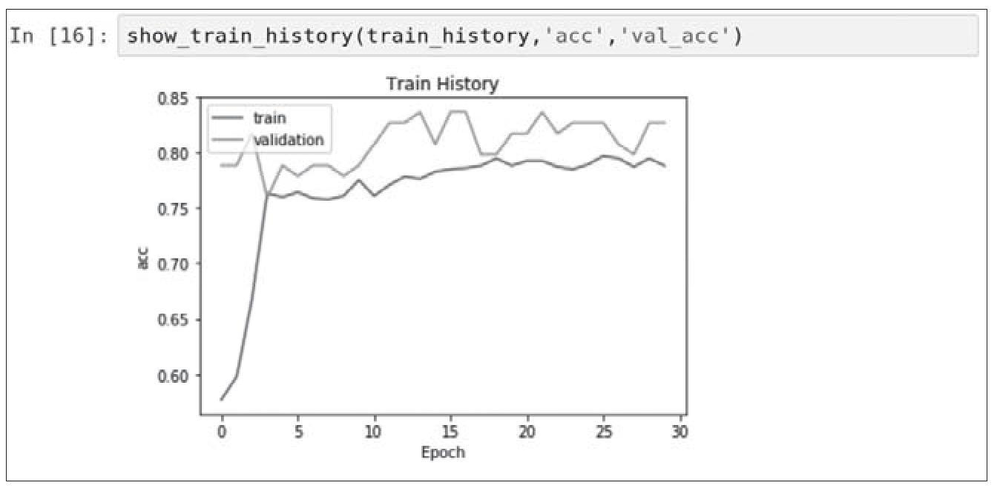
在以上执行结果的屏幕显示界面中，“acc训练的准确率”是深色的，“val_acc验证的准确率”是浅色的，总共执行了10个训练周期，我们可以发现：无论是训练还是验证，准确率都越来越高。
4．画出误差的执行结果
在以上执行结果的屏幕显示界面中，我们可以看到共执行了30个训练周期，“loss训练的误差”是深色的，“val_loss验证的误差”是浅色的，我们还可以发现，无论是训练还是验证，误差都越来越低。
12.4 评估模型准确率
之前我们已经训练完模型，现在要使用test测试数据集来评估模型的准确率。
1．评估模型的准确率
下面的程序代码用来评估模型的准确率。
以上程序代码说明见表12-1。
表12-1 程序代码说明
2．查看评估的准确率
从以上执行结果可知准确率是0.80。
12.5 加入《泰坦尼克号》电影中Jack与Rose的数据
在《泰坦尼克号》电影中，男女主角Jack与Rose是虚构人物，我们希望能用所训练完成的模型预测男女主角的生存概率。以下这些数据是我们根据电影剧情所猜想的：
- Jack是3等舱，Rose是头等舱。
- Jack是男性，Rose是女性。
- Jack的票价是5，Rose的票价是100。
- Jack的年龄是23，Rose的年龄是20。
建立Jack与Rose的数据。
使用pd.Series建立Jack与Rose的数据如下：
创建Jack与Rose的DataFrame。
使用pd.DataFrame创建Pandas DataFrame JR_df，加入Jack与Rose的数据。
将JR_df加入all_df。
因为我们后续要使用all_df进行预测，所以我们将JR_df加入all_df。
查看all_df最后两项数据。
将JR_df加入all_df后，最后两项数据就是Jack与Rose的数据。

12.6 进行预测
在前面的步骤中我们建立了模型，并且完成了模型的训练，准确率达到还可以接受的0.80，接下来我们将使用此模型进行预测。
执行数据预处理。
因为Jack与Rose的数据是后来才加入的，所以必须再次执行数据预处理。
执行预测。
使用model.predict传入参数all_Features（特征字段）执行预测，返回预测结果all_probability。
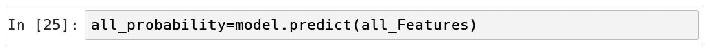
 预测结果。
预测结果。
使用下列指令来查看预测结果all_probability的前10项数据。
以上预测结果其实就是每一位旅客的生存概率。
将all_df与all_probability整合。
接下来，我们将all_df（姓名与所有特征字段）与all_probability（预测结果）整合产生pd DataFrame。
 查看预测《泰坦尼克号》电影中Jack与Rose生存概率的结果。
查看预测《泰坦尼克号》电影中Jack与Rose生存概率的结果。
我们可以使用pd［-2：］选取DataFrame最后两项数据，那就是Jack与Rose生存概率的结果。
从以上执行结果可知，Jack的生存概率只有0.14，Rose的生存概率高达0.96，符合电影最后的结局。
12.7 找出泰坦尼克号背后的感人故事
数据科学家在处理数据时，常常只会看到冷冰冰的数据，而忘记这些数据背后的故事，每一项数据都曾经是活生生的人，他们都有父母家人，有很多感人的故事。
1．查看生存概率高，却没有存活的旅客
我们也许会好奇，根据模型，哪些旅客预测生存概率高，可是却没有存活？Pandas提供了很方便的功能，可以让我们按照条件查询所需要的数据。
使用下列pandas的语句来查询生存概率大于90%但是没有存活的数据，结果如图12-4所示。
- pd［’probability’］＞ 0.9：生存概率大于90%。
- pd［’survived’］ ＝＝ 0：没有存活。

图12-4
图12-4的数据中，Allison，Miss.Helen Loraine与Allison，Mrs.Hudson JC都是Allison家族的人，他们依照我们的模型生存概率高，可是却没有存活，到底发生了什么事呢？
2．Allison家族的故事
显示前5项预测结果（见图12-5）：
图12-5
真实沉船中Allison家族的故事是，Allison一家人共有4位成员，即爸爸（30岁）、妈妈（25岁）、一个两岁的女儿Loraine以及一个不满一岁的婴儿Trevor。他们全家加上一名护士（AliceCleaver）乘坐邮轮返回加拿大蒙特利尔。
因为搭乘救生艇女士优先，原本妈妈可以带着女儿与小婴儿上救生艇，但是因为找不到婴儿Trevor，所以坚持不愿意上救生艇，而在船上到处寻找婴儿，最后全家一起在船上沉没。
然而命运捉弄人的是，原来小婴儿Trevor早就被护士（AliceCleaver）带上救生艇，但是没有告知Allison家人，导致全家人都找不到婴儿。最后Allison全家只有不满一岁的小婴儿Trevor存活，但是失去了所有亲人。还好后来小婴儿Trevor回到加拿大，由他的叔叔婶婶抚养长大。
3．爱狗女士的故事
查询生存概率大于90%却没有存活的数据，我们可以看到Ann Elizabeth Isham，如图12-6所示。
图12-6
一位50岁的女乘客Ann ElizabethIsham，她住在巴黎，要搭船返回美国，带着她的爱狗搭乘泰坦尼克号，于是将自己心爱的大丹狗安置在船上的狗舍，并且每日探望。发生船难时，Ann问自己的狗是否可以上救生艇，但是被拒绝。然而Ann实在无法抛弃心爱的狗独自逃生，对Ann而言，狗是她的家人，于是舍弃生还机会，宁愿与爱狗共存亡。
4．施特劳斯夫妇的故事
查询生存概率大于90%却没有存活的数据，我们还可以看到Struss Isidor，如图12-7所示。
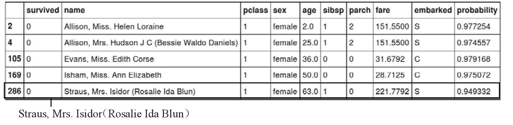
图12-7
伊思德·施特劳斯（Isidor Straus）是美国知名百货梅西百货（Macy’s）的共同创办人，与他的太太艾达·施特劳斯（IdaStraus）登上泰坦尼克号，准备从欧洲回到美国的家。然而发生船难时，得知轮船即将沉没，埃达本来有机会逃生，但是不愿意离开丈夫，拒绝独自乘坐救生船逃生。于是埃达将自己的皮大衣送给了女仆埃伦（Ellen），让埃伦登上了救生船。据救生艇上的目击者说，当时记得艾达对丈夫说：“我们已经一起生活这么多年了，无论你在哪，我就去哪（Whereyou go，I go）”。
12.8 结论
在本章中，我们建立了多层感知器模型，经过数据预处理、训练模型，使用训练完成的模型来预测泰坦尼克号上旅客的生存概率，并且找出泰坦尼克号背后的感人故事。在下一章我们将介绍IMDb网络电影数据库与自然语言处理。
第13章 IMDb网络电影数据集与自然语言处理
情感分析（sentiment analysis）又称为意见挖掘（opinionmining），是使用“自然语言处理”、文字分析等方法找出作者某些话题上的态度、情感、评价或情绪。情感分析的商业价值在于，可提早得知顾客对公司或产品的观感，以调整销售策略的方向。第13、14章我们将介绍IMDb网络电影数据集，使用词嵌入（WordEmbedding）自然语言处理的方法进行预处理，并且建立各种深度学习模型，进行情感分析。
IMDb网络电影数据库（Internet MovieDatabase）是一个与电影相关的在线数据库。IMDb开始于1990年，自1998年起成为亚马逊旗下的网站，至今已经累积了大量的电影信息。IMDb收录了共400多万部电影作品数据。IMDb的网址为http://www.imdb.com／。
IMDb数据集共有50 000项“影评文字”，分为训练数据与测试数据各25 000项，每一项“影评文字”都被标记为“正面评价”或“负面评价”。
我们希望能建立一个模型，经过大量“影评文字”训练后，此模型可以用于预测“影评文字”是“正面评价”或“负面评价”。例如图13-1所示的深度学习模型识别IMDb“影评文字”，可分为训练与预测。
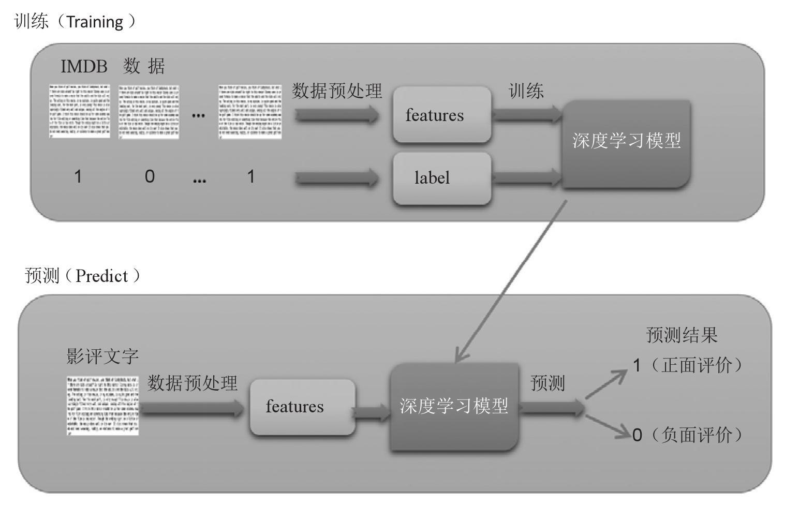
图13-1
图13-1说明如下：
▶ 训练
IMDb数据集的训练数据共25000项，经过数据预处理后会产生features（特征值）与label（1：正面评价，0：负面评价），然后对深度学习模型进行训练，训练完成的模型就可以在下一阶段预测时使用。
▶ 预测
输入“影评文字”，预处理后会产生features（特征值），可以使用训练完成的多层感知器模型进行预测，最后产生预测结果（“正面评价”或“负面评价”）。
本章完整的程序代码参考keras_Imdb_Introduce.ipynb。范例下载与安装参考附录A。
13.1 Keras自然语言处理介绍
Keras自然语言处理IMDb影评文字步骤如图13-2所示。
图13-2
图13-2的步骤说明如下：
读取IMDb数据集。
IMDb数据集分为训练数据与测试数据，说明见表13-1。
表13-1 训练数据与测试数据说明
（续表）
建立token。
因为深度学习模型只能接受数字，所以我们必须将“影评文字”转换为“数字列表”。
要如何转换呢？当我们要将一种语言翻译成另一种语言时，必须要有字典。相同的道理，我们要将文字转换成数字，也必须有字典。Keras提供了Tokenizer模块，就是类似字典的功能。建立token的方式如下：
- 建立token时必须指定字典的字数，例如2000个字的字典。
- 然后读取训练数据25000项“影评文字”，依照每一个英文单词在所有影评中出现的次数进行排序，排序的前2000名的英文单词会列入字典中。
- 因为是按照出现次数排序所建立的字典，所以我们可以说，这是“影评文字”的常用字典。
- 建立的字典如图13-3所示，共有2000个单词。
图13-3
- 我们可以用此字典进行转换，例如’the’转换为1、’is’转换为6。读者也许会好奇，只有2000个单词的字典，如果有单词不在字典中，那么会如何处理呢？答案是那个单词就不转换，我们只在乎“影评文字”在常用字典出现的单词，因为常用单词对于我们要预测的目标影响比较大，不常用单词对于我们后续的预测影响比较小。
使用token将“影评文字”转换为“数字列表”。
建立token字典后，我们就可以使用token将“影评文字”转换为“数字列表”。
例如，将图13-4中的“影评文字”转换为“数字列表”。

图13-4
我们会将25 000项“影评文字”训练数据转换为25 000项的“数字列表”。
截长补短让所有“数字列表”长度为100。
因为每一则“影评文字”的字数都不固定，例如有些可能有170个字，有些有80个字。转换成“数字列表”字数也不固定。因为后续要将“数字列表”转为“向量列表”，并送入深度学习模型进行训练，所以长度必须固定。如何让所有“数字列表”长度都固定呢？其实方法很简单，就是截长补短。
例如，我们要将“数字列表”的长度都设置为100。
- 如果数字列表的长度是59，就在前面补上41个“0”，这样就变成长度为100的“数字列表”，如图13-5所示。
- 如果数字列表的长度是126，就将前面的26个数字截去，这样就变成长度为100的“数字列表”。
图13-5
使用嵌入层将“数字列表”转换为“向量列表”。
词嵌入是一种自然语言处理技术，其原理是将文字映射成多维几何空间的向量。语义类似的文字向量在多维的几何空间的距离也比较相近。前面我们将“影评文字”转换为数字，可是数字在语义上无任何关联。为了能让每一个文字有关联性，必须转换为向量。
▶ 文字转换为数字，数字在语义上无任何关联
▶ 文字转换为向量，语义类似的文字，在向量空间也会比较接近（见图13-6）
图13-6
Keras提供了嵌入层可以用于将“数字列表”转换为“向量列表”。例如，将图13-7中的“影评文字”先转换为“数字列表”，再转换为“向量列表”
图13-7
将“向量列表”送入“深度学习模型”进行训练。
在前面的步骤中，我们将“影评文字”先转换为“数字列表”，再转换为“向量列表”后，就可以将“向量列表”送入深度学习模型进行训练，下一章我们将介绍使用下列深度学习模型进行训练。
“深度学习模型”训练完成后，就可以进行预测了，如图13-8所示。
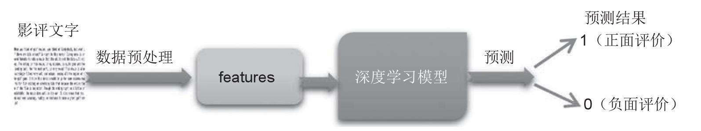
图13-8
以上步骤说明如下。
- 步骤1～4：文字的预处理，将在本章中介绍。
- 步骤5和6：建立嵌入层，并且使用深度学习模型进行训练与预测，将在下一章介绍。
13.2 下载IMDb数据集
可以在下列网址下载IMDb数据集：
http://ai.stanford.edu／～amaas/data/sentiment
1．导入所需模块

以上程序代码说明见表13-2。
表13-2 程序代码说明
2．下载IMDb数据集
使用下列程序代码下载IMDb数据集。
从以上执行结果可知，下载了aclImdb_v1.tar.gz，并存储在程序执行目录下的data目录中。
▶ 设置下载的网址
▶ 设置存储文件的路径
▶ 判断文件不存在就会下载文件
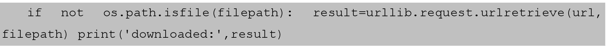
上面的程序代码在判断文件不存在时，就会使用urllib.request.urlretrieve下载文件。
输入参数：url（下载的网址）与filepath（存储文件的路径）。
3．解压缩下载的文件
以上程序代码说明如下：
▶ 判断解压缩目录是否存在
▶ 打开压缩文件
▶ 解压缩文件到data目录中
解压缩完成后，产生了aclImdb目录，后文会介绍这个目录的内容。
4．查看已下载的文件及解压缩目录
查看下载的数据文件，根据使用的环境是Windows或Linux Ubuntu而稍有不同，说明如下：
▶ 在Windows下查看已下载的数据文件
可以使用文件资源管理器来查看程序执行目录下的data目录，例如程序执行目录是C：\pythonwork\keras，就可以在C：\pythonwork\keras\data中看到已下载的aclImdb_v1.tar文件与解压缩目录aclImdb，如图13-9所示。
图13-9
▶ 在Linux Ubuntu下查看已下载的数据文件
在“终端”程序输入下列命令，先切换到程序执行目录，再查看目录。
执行后屏幕显示界面如图13-10所示，我们可以看到已下载的aclImdb_v1.tar文件与解压缩目录aclImdb。
图13-10
13.3 读取IMDb数据
IMDb文件下载并解压缩后，共有50 000项文本文件，我们将以下列步骤来读取，并且把它们分为训练数据与测试数据。
1．导入所需模块
程序代码说明见表13-3。
表13-3 程序代码说明
2．创建rm_tag函数删除文字中的HTML标签
下列程序代码使用正则表达式删除HTML的标签。
程序代码说明见表13-4。
表13-4 程序代码说明
3．创建read_files函数读取IMDb文件目录
创建read_files函数读取IMDb文件，解压缩后的目录如图13-11所示。
图13-11
以上程序代码的说明见表13-5。
表13-5 程序代码说明
4．读取IMDb数据集目录
▶ 使用read_files函数传入参数“train“读取训练数据

▶ 使用read_files函数传入参数“test“读取测试数据
读取完成后，将数据整理为表13-6。
表13-6 训练数据与测试数据说明
13.4 查看IMDb数据
读取IMDb数据集后，我们就可以查看“影评文字”了。
1．查看第0项“影评文字”
下面的指令用来查看第0项“影评文字”。
2．查看第0项label是1，也就是正面评价
3．查看第12 501项影评文字
4．查看第12 501项label是0，也就是负面评价
13.5 建立token
接下来将详细介绍如何建立token以及token的特性。
1．建立token
以上程序代码说明见表13-7。
表13-7 程序代码说明
2．查看token读取多少文章
通过查看token.document_count属性就可以知道token读取了多少文章。
从以上执行结果可知，token共读取了25 000项影评数据。
3．查看token.word_index属性
word_index属性也是dict字典数据类型，其内容是每一个单词在所有文章中出现的次数的排名，出现次数最多的“the”排在第1位，其次是“and”排在第2位。

我们后续会使用这个word_index字典将英文单词转换为数字。例如，“the”转换成1、“and”转换成2、“a”转换成3，等等。
13.6 使用token将“影评文字”转换成“数字列表”
建立token字典后，我们就可以使用token.word_index字典将文字转换为“数字列表”。
1．使用token.texts_to_sequences将“影评文字”转换为“数字列表”
下面的指令使用token.texts_to_sequences将训练数据与测试数据的“影评文字”转换成“数字列表”，将train_text转换为x_train_seq，并将test_text转换为x_test_seq。
2．查看转换为sequences之后的结果
先使用下面的指令来查看第0项“影评文字”与“数字列表”。
以上“影评文字”已经转换为“数字列表”，例如前3个单词中的Sure转换成248、this转换成10、was转换成12。
13.7 让转换后的数字长度相同
因为每一则“影评文字”的单词数都不固定，例如有些可能有170个单词，有些有80个单词。转换成“数字列表”的数字个数也就不固定。因为后续要将“数字列表”转为“向量列表”，并送入深度学习模型进行训练，所以长度必须固定。如何让所有“数字列表”长度都固定呢？其实方法很简单，就是截长补短。
例如，我们要将“数字列表”的长度都设置为100。
- 如果数字列表的长度为126，就将前面的26个数字截去，这样就变成长度为100的“数字列表”。
- 如果数字列表的长度是59，就在前面补上41个“0”，这样就变成长度为100的“数字列表”。
1．使用sequence.pad_sequences（）方法截长补短
在前面步骤中产生的“数字列表”：x_train_seq、x_test_seq，使用sequence.pad_sequences进行截长补短，让每一个“数字列表”长度都是100。
2．“影评文字”转成“数字列表”后，长度大于100的处理方式
下面的第0项“影评文字”转成“数字列表”后，长度为126，大于100，使用pad_sequences处理之后会截去“数字列表”前面的数字，使处理后的长度为100。
▶ 显示第0项“数字列表”
▶ 显示第0项“数字列表”，经过pad_sequences处理后的内容
从以上执行结果可知，23之前的数字都被截去了，“数字列表”的长度变为100。
3．“影评文字”转成“数字列表”后，长度小于100的处理方式
下面第一项“影评文字”转成“数字列表”后，长度是59，小于100，使用pad_sequences处理之后会在“数字列表”前面，填上41个数字0，使处理后的长度为100。
13.8 结论
在本章中，我们介绍了如何下载与读取IMDb数据集，并且完成了数据预处理。在下一章中，我们可以使用Keras建立多层感知器、RNN、LSTM的模型，并训练模型，然后使用训练完成的模型进行预测。
第14章 Keras建立MLP、RNN、LSTM模型进行IMDb情感分析
在上一章我们已经完成了IMDb数据集的预处理。在本章我们使用Keras建立多层感知器、递归神经网络、长短时记忆模型，进行IMDb情感分析，并训练模型、进行预测，最后产生预测结果（“正面评价”或“负面评价”）。
14.1 建立多层感知器模型进行IMDb情感分析
首先，我们将建立多层感知器模型，整理如图14-1所示。

图14-1
图14-1的步骤1～4文字的预处理已经在第13章介绍了。本章将建立：
（1）嵌入层 将“数字列表”转换为“向量列表”。
（2）多层感知器 使用多层感知器模型处理“向量列表”。
- 平坦层： 共有3200个神经元，因为原本“数字列表”每一项有100个数字，每一个数字转换为32维的向量，所以转换为平坦层的神经元有3200个（32×100＝3200）。
- 隐藏层： 共有256个神经元。
- 输出层： 只有1个神经元，输出1代表正面评价，0代表负面评价。
本章完整的程序代码可参考范例程序Keras_Imdb_MLP.ipynb。范例程序下载与安装可参考本书附录A。
14.2 数据预处理
关于数据预处理，在第13章已经详细介绍过了，本章整理其中的主要步骤如下。
导入所需模块。
读取IMDb数据集目录。
使用第13章所介绍的read_files函数读取IMDb数据，细节请参考第13章。
▶ 读取训练数据
▶ 读取测试数据
建立token。
将“影评文字”转换成“数字列表”。
截长补短让所有“数字列表”的长度都为100。
以上“数字列表”都是由“影评文字”转换而来的，并且已经截长补短每一项“数字列表”，因而列表中都正好是100个数字。
数据预处理完成后的数据整理。
以上数据预处理完成后产生训练数据与测试数据。
- 训练数据： 我们将送入各种深度学习模型进行训练。
- 测试数据： 可以用于评估深度学习模型的准确率，并进行预测。
14.3 加入嵌入层
Keras提供了嵌入层可以将“数字列表”转换为“向量列表”。关于词嵌入自然语言处理技术的说明可参考第13章。
导入所需模块。
建立模型。
使用下面的程序代码建立一个线性堆叠模型，后续只需要将各个神经网络层加入模型即可。
将“嵌入层”加入模型。
使用下面的程序代码将“嵌入层”加入模型。
▶ 建立嵌入层需输入表14-1中的参数。
表14-1 建立嵌入层需输入的参数
▶ 加入Dropout层以避免过度拟合
Dropout（0.2）的功能是，每次训练迭代时会随机地在神经网络中放弃20%的神经元，以避免过度拟合。
14.4 建立多层感知器模型
嵌入层转换为“向量列表”后，就可以使用各种深度学习模型进行训练与预测了。本节先介绍建立多层感知器模型。
将“平坦层”加入模型。
使用下面的程序代码将“平坦层”加入模型。因为“数字列表”每一项有100个数字，每一个数字转换为32维的向量，所以转换为平坦层的神经元有3200个（100×32＝3200）。
将“隐藏层”加入模型。

▶ 建立“隐藏层”使用Dense神经网络层，需输入表14-2中的参数。
表14-2 建立“隐藏层”使用Dense神经网络层需输入的参数
▶ 加入Dropout层以避免过度拟合
Dropout（0.35）的功能是，每次训练迭代时会随机地在神经网络中放弃25%的神经元，以避免过度拟合。
将“输出层”加入模型。
▶ 建立“输出层”使用Dense神经网络层，需输入表14-3中的参数。
表14-3 建立“输出层”使用Dense神经网络层需输入的参数
查看模型的摘要。
可以使用下列指令来查看模型的摘要。
14.5 训练模型
当我们建立深度学习模型后，就可以使用反向传播算法进行训练。可参考第2章有关使用反向传播算法进行训练的说明。
1．定义训练方式
在训练模型之前，我们必须使用compile方法对训练模型进行设置，如下列指令：
compile方法需输入3个参数：loss、optimizer和metrics（对这3个参数的解释说明可参考下7.4节）。
2．开始训练
使用model.fit进行训练，训练过程会存储在train_history变量中，这个训练需输入下列参数。
（1）输入训练数据参数
- x＝x_train：features（“数字列表”）。
- y＝y_train：测试数据的标签label（影评的真实值，正向：1，负向：0）。
（2）设置训练与验证数据的比例
训练之前Keras会自动将数据分成：80%作为训练数据，20%作为验证数据。因为全部数据有25 000项，所以分成：25 000×0.8＝20000作为训练数据，25 000×0.2＝5 000作为验证数据。
（3）设置训练周期数与批次的项数
- epochs＝10：执行10个训练周期。
- batch_size＝100：每一批次100项数据。
（4）设置显示训练过程
- verbose＝2：显示训练过程。
上面的程序代码共执行了10个训练周期，每一个训练周期中执行下列功能：
- 使用20 000项训练数据进行训练，分为每一批次100项，所以大约分为200个批次（20 000/100＝200）进行训练。
- Epoch（训练周期）训练完成后，会计算这个训练周期的准确率与误差，并且在train_history中新增一项数据记录。
▶ 以上程序代码执行后的结果如图14-2所示。
图14-2
从以上执行界面可知，共执行了10个训练周期，还可以发现误差越来越小，准确率越来越高。
14.6 评估模型准确率
之前我们已经完成了模型的训练，现在要使用test测试数据集，评估模型的准确率。
下面的程序代码用来评估模型的准确率。
从以上执行结果可知准确率是0.80。以上程序代码说明见表14-4。
表14-4 程序代码说明
14.7 进行预测
在前面的步骤中，我们建立了模型，并且完成了模型的训练，准确率达到还可以接受的0.80，接下来我们将使用这个模型进行预测。
执行预测。
我们可以用下列指令执行预测：
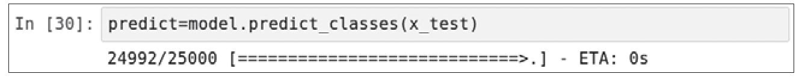
以上程序代码使用model.predict_classes进行预测，输入参数：测试数据的特征值features（数字列表）。
预测结果。
我们可以用下列指令来查看预测结果的前10项数据。
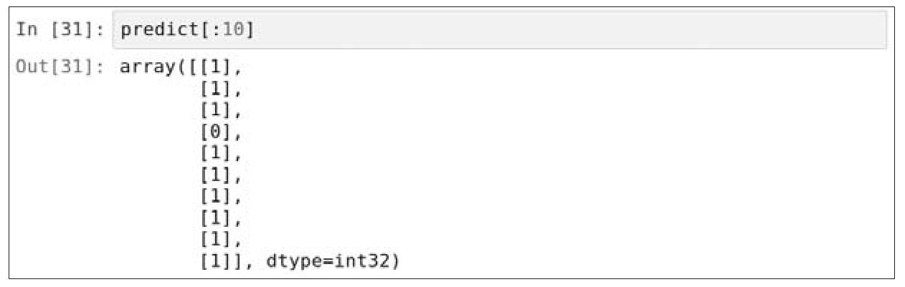
从以上执行结果可知，0代表负面评价，1代表正面评价。
使用一维数组查看预测结果。
上一步的执行结果predict是二维数组，我们可以使用reshape把它转换为一维数组predict_class。
14.8 查看测试数据预测结果
之前的预测结果是0与1，我们将创建display_test_Sentiment函数，可以显示负面评价或正面评价。
创建display_test_Sentiment函数。
创建display_test_Sentiment函数如下：
程序代码说明见表14-5。
表14-5 程序代码说明
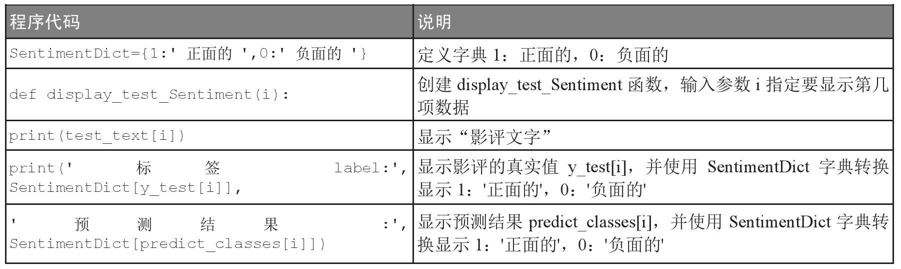
显示第2项预测结果。
以下使用display_test_Sentiment函数来显示预测结果。
从以上执行结果可知，第2项数据真实值是正面的，预测结果也是正面的。
显示第12 502项预测结果。
从以上执行结果可知，第12502项数据真实值是负面的，预测结果也是负面的。
14.9 查看《美女与野兽》的影评
之前的预测使用的是IMDb数据集的影评文字，接下来将使用热门电影《美女与野兽》的影评文字进行预测。
查看美女与野兽的影评。
可以在下列网址查看《美女与野兽》的影评：
http://www.imdb.com/title/tt2771200/reviews
在影评页面可以筛选影评，我们选择Chronological，即按时间顺序进行排序，如图14-3所示。
图14-3
执行预测。
将上一步网页上的影评文字剪贴到下列程序代码中，创建input_text变量。
上面的input_text影评文字将送入之前所建立的多层感知器模型中进行预测，不过必须先进行数据预处理，步骤如下。
将“影评文字”转换成“数字列表”。
以下程序代码使用token.texts_to_sequences将“影评文字”转换成“数字列表”，不过因为输入参数必须是字符串的列表，然而input_text是一个字符串，所以我们前后加上中括号［input_text］以便转换为字符串的列表。
查看“数字列表”。
上一步的执行结果是“数字列表”的列表，因为只有一项数据，所以使用input_seq［0］查看第0项，也是唯一一项数据。
查看“数字列表”的长度。
使用下列程序代码来查看“数字列表”的长度，执行结果是长度为204。
截取“数字列表”使其长度为100。
下列程序代码使用sequence.pad_sequences截取“数字列表”，使其长度为100。
截长补短后查看“数字列表”的长度。
再使用下列程序代码来查看“数字列表”的长度。

从以上执行结果可以看到，经过sequence.pad_sequences处理后，长度变为100。
使用多层感知器模型进行预测。
下面的指令使用model.predict_classes传入参数pad_input_seq进行预测。
查看预测结果。
用下列指令来查看预测结果：

可以看到，预测结果有前后有两个中括号［［1］］，所以这是一个二维数组，它只有一个元素。
读取预测结果中的元素。
因为这是一个二维数组，所以我们使用predict_result［0］［0］来读取其中的元素。
从以上执行结果可以看到这一则影评文字的预测结果是1，也就是正面的评价。
 执行预测。
执行预测。
最后，我们可以使用之前定义的SentimentDict字典将结果1转换为文字。
从以上执行结果可知，这是正面的评价。
14.10 预测《美女与野兽》的影评是正面或负面的
在本节中，我们将前面的命令全部整理成predict_review（）函数，以便于预测其他《美女与野兽》的影评。
创建predict_review（）函数。
创建predict_review（）函数如下：
predict_review（）使用很简单，只需要传入参数input_text（影评文字）就可以预测此影评是“正面”的或“负面”的。
 筛选Hated It影评。
筛选Hated It影评。
我们可以在IMDb网站筛选Hated It（讨厌的）影评，这些影评应该大部分是负面的评价，如图14-4所示。我们可以使用这些影评来验证模型的准确率。
图14-4
执行预测。
接下来使用之前创建的predict_review（）函数预测粘贴的“影评文字”。
从以上执行结果可以看到结果是负面的评价。其他读者可以自己筛选Hated It影评试试看，会发现大部分都是负面的评价。
筛选Loved It影评。
我们可以在IMDb网站筛选Loved It（喜欢的）影评，这些影评大部分是正面的评价，如图14-5所示。我们可以使用这些影评来验证模型的准确率。
图14-5
执行预测。
接下来使用之前所创建的predict_review（）函数来预测粘贴的“影评文字”。
从以上执行结果可以看到结果是正面的评价。读者可以自己剪切试试筛选Loved It影评，就会发现大部分都是正面的评价。
14.11 文字处理时使用较大的字典提取更多文字
之前模型预测的准确率是0.80，我们希望能够再提高预测的准确率，方法如下。
- 建立字典的单词数： 原本是有1000个单词的字典，增加为建立有3800个单词的字典。
- “数字列表”截长补短的长度： 原本“数字列表”的长度都是100个数字，现在改为380个数字。
这种方式就好像训练深度学习模型，多认识一些单词，并且增加读取影评文字的单词数，以增加准确率。以下可参考范例程序Keras_Imdb_MLP_Large.ipynb。此程序代码大部分与Keras_Imdb_MLP.ipynb相同，此处只说明修改的部分。
数据预处理。
数据预处理修改如下：
建立模型。
建立模型修改如下：
修改pad_sequences。
修改predict_review函数。
评估模型的准确率。
经过修改模型后：把字典的单词数增加为3800，并且“数字列表”的长度增加为380。训练的时间比较长，但是这是值得的，准确率从0.80提高到0.85。
14.12 RNN模型介绍
接下来，我们将使用递归神经网络进行IMDb情感分析，并且训练模型、进行预测，最后产生预测结果（“正面评价”或“负面评价”）。
1．为什么要使用RNN模型
之前我们介绍的MNIST数据集（识别数字图形）、Cifar数据集（识别照片）图像并不会随着时间而改变，所以使用多层感知器或卷积神经网络都能达到不错的效果。
然而，人工智能所要解决的问题很多是顺序性的，例如自然语言处理（同一时间只能听到一个字，之前的语言会影响之后语言的含义）、视频图像处理（视频是一张张的照片，依照时间顺序所组成的）、气象观测数据（气象信息随着时间不断改变）和股票交易数据（股市开盘后，股价随着时间不断变动）。
以自然语言处理为例，当我们在听人说话时，因为同一个时间只能听一个字，所以会根据之前的时间点、所听到的话语来理解当前时间点这句话的意义。例如，“我家住上海市”“我在市政府上班”。因为前一句话说已经说住在上海市，所以当我们理解后面那一句话“我在市政府上班”时，通常是指上海市的市政府，不会是其他城市的市政府。
因为多层感知器（MLP）或卷积神经网络（CNN）都只能依照当前的状态进行识别，如果要处理时间序列的问题，就必须使用RNN与LSTM模型。
2．RNN模型原理
RNN模式的原理是将神经元的输出再接回神经元的输入。这样的设计使神经网络具备“记忆”功能，如图14-6所示。
说明如下：
- X是神经网络的输入。
- O是神经网络的输出。
- （U，V，W）都是神经网络的参数。
- S是隐藏状态，代表着神经网络的“记忆”。
3．以时间点展开RNN模型
为了让读者更容易理解，我们将之前的图以时间点展开，如图14-7所示。
图14-7
上图共有3个时间点，按照顺序是：“ _t_ -1”“ _t_ ”“ _t_ ＋1”。
▶ 在 _t_ 时间点
- Xt 是 _t_ 时间点神经网络的输入。
- Ot 是 _t_ 时间点神经网络的输出。
- （U，V，W）都是神经网络的参数，W参数是 _t_ -1时间点的输出，但是作为 _t_ 时间点的输入。
- St 是隐藏状态，代表着神经网络的“记忆”，是经过当前时间点的输入Xt ，再加上前一个时间点的状态St-1 和U、W的参数共同评估的结果，其公式如下：
St = _f_ （［U］Xt +［W］St-1 ）
上面的 _f_ 函数是非线性函数，例如ReLU。
14.13 使用Keras RNN模型进行IMDb情感分析
在上一节，我们已经对RNN有了基本的了解，接下来将使用RNN模型进行IMDb情感分析，整理如图14-8所示。
图14-8
以下完整的程序代码可参考范例程序Keras_Imdb_RNN.ipynb。此程序代码大部分与Keras_Imdb_MLP_Large.ipynb相同，以下只说明修改的部分。
 建立模型。
建立模型。
以下程序代码使用SimpleRNN（unit＝16）建立16个神经元的RNN层。
 查看模型的摘要。
查看模型的摘要。
我们可以使用下列指令来查看模型的摘要。
评估模型的准确率。
使用RNN模型准确率大约为0.84。
14.14 LSTM模型介绍
长短期记忆（Long Short Term Memory，LSTM）也是一种时间递归神经网络，专门设计来解决RNN的长期依赖问题。
1．RNN的长期依赖问题
之前介绍的RNN在训练时会有长期依赖的问题，这是由于RNN模型在训练时会遇到梯度消失或爆炸的问题。训练时计算和反向传播，梯度倾向于在每一时刻递增或递减，经过一段时间后，会发散到无穷大或收敛到零。
简单来说，长期依赖的问题就是在每一个时间的间隔不断增大时，RNN会丧失学习到连接到远处的信息的能力。
如图14-9所示，随着时间点t不断递增，由0、1、2一直到 _t_ -1、 _t_ 、 _t_ ＋1。到了时间点的后期 _t_ ，隐藏状态（记忆）St已经丧失了学习连接到远处的信息X0 的能力。
图14-9
假设X0 输入“我家住上海市”，中间插了很多其他的句子，然后在Xt 输入“我在市政府上班”，由于X0 与Xt 相差很远，当RNN输入到Xt时，隐藏状态（记忆）St 已经丧失了学习连接远处的信息X0 的能力。当神经网络Xt 输入“我在市政府上班”，由于已经忘记了X0输入“我家住上海市”，因此神经网络无法理解我是在哪一个城市的市政府上班。
2．LSTM介绍
简单地说，RNN只有短期记忆，没有长期记忆，所以深度学习专家Schmidhuber提出了LSTM模型，专门设计来解决RNN的长期依赖问题，如图14-10所示。
图14-10
在LSTM神经网络中，每一个神经元相当于一个记忆细胞（cell），说明如下。
- Xt ：输入向量。
- Yt ：输出向量。
- Ct ：cell是LSTM的记忆细胞的状态（cell state）。
- LSTM通过一种名为“闸门”（Gate）的机制控制记忆细胞的状态，删减或增加其中的信息。
■ It ：“输入闸门”（Input Gate）用于决定哪些信息要被增加到cell。
■ Ft ：“遗忘闸门”（Forget Gate）用于决定哪些信息要从cell删减。
■ Ot ：“输出闸门”（Output Gate）用于决定哪些信息要从cell输出。
有了“闸门”机制，LSTM就有了长期记忆。
14.15 使用Keras LSTM模型进行IMDb情感分析
在上一节，我们已经对LSTM有了基本的了解，接下来将使用LSTM模型进行IMDb情感分析。下面完整的程序代码可参考范例程序Keras_Imdb_LSTM.ipynb。此程序代码大部分与Keras_Imdb_MLP_Large.ipynb相同，以下只说明修改的部分。
建立模型。
下面的程序代码使用LSTM（32）建立32个神经元的LSTM层。
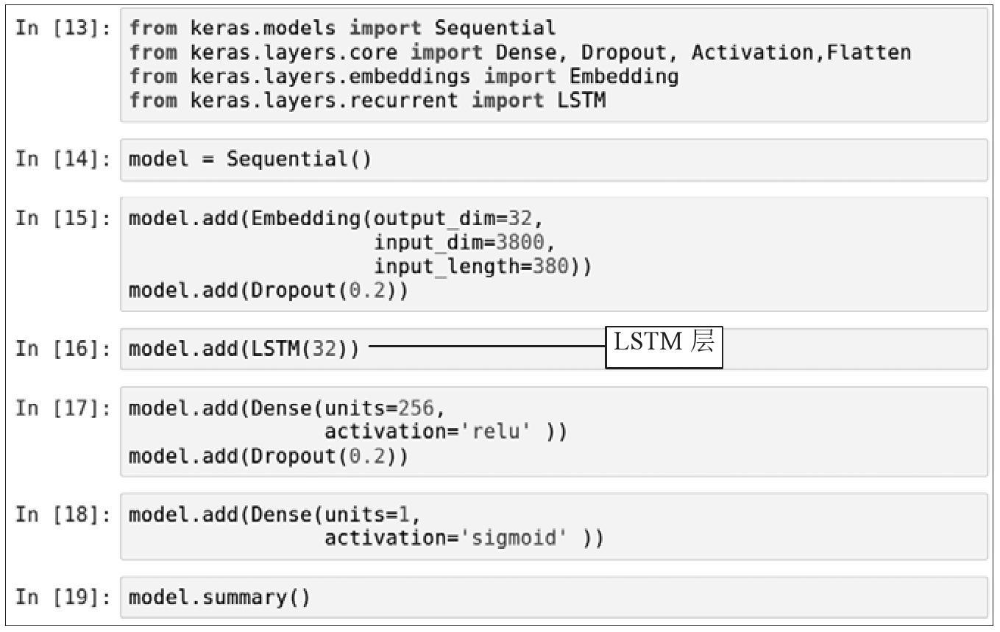
查看模型的摘要。
我们可以使用下列指令来查看模型的摘要。
评估模型的准确率。
使用LSTM模型准确率提升至约0.86。
14.16 结论
在前面的章节中我们已经介绍了使用Keras进行手写数字识别、照片图像识别、预测泰坦尼克号上旅客的生存概率、影评文字情感分析。读者已经熟悉了深度学习模型的建立、训练和预测，后面的章节我们将介绍使用TensorFlow建立深度学习模型、训练模型和进行预测。
第15章 TensorFlow程序设计模式
在第3章中已经大致介绍了TensorFlow程序设计模式的概念，本章我们将以简单的程序来示范TensorFlow程序设计模式。而TensorFlow与Keras最大的差别是，对于TensorFlow，我们必须自行设计张量（矩阵）运算，所以本章将介绍TensorFlow张量运算。
TensorFlow程序设计模式的核心是“计算图”，可分为两部分：建立“计算图”与执行“计算图”，如图15-1所示。
图15-1
图15-1说明如下：
（1）建立“计算图”
我们可以使用TensorFlow提供的模块建立“计算图”。TensorFlow提供的模块非常强大，可以设计张量运算流程，并且构建各种深度学习或机器学习模型。
（2）执行“计算图”
建立“计算图”后，我们就可以建立Session执行“计算图”。在TensorFlow中，Session（原意是会话）的作用是在客户端和执行设备之间建立连接。有了这个连接，就可以将“计算图”在各种不同的设备中执行，后续任何与设备之间的数据传输都必须通过Session才能进行，执行“计算图”后会返回结果。
下面的程序代码可参考范例程序TensorFlow_Basic.ipynb。范例程序的下载与安装可参考本书附录A。
15.1 建立“计算图”
为了示范TensorFlow程序设计模式，我们将建立简单的“计算图”，只有一个常数与一个变量。建立完成后再执行此“计算图”，如图15-2所示。
图15-2
导入TensorFlow模块。
建立TensorFlow常数。
建立TensorFlow常数命令如下：
以上程序代码使用tf.constant建立TensorFlow常数，需输入表15-1中的参数。
表15-1 使用tf.constant建立TensorFlow常数需输入的参数
查看TensorFlow常数。
查看TensorFlow常数指令如下：
以上执行结果说明如下。
- tf.Tensor：代表这是TensorFlow张量。
- shape＝（）：代表这是零维的tensor，也就是数值。
- dtype＝int32：代表此张量数据类型是int32。
建立TensorFlow变量。
建立TensorFlow变量的命令如下。

以上程序代码使用tf.Variable建立TensorFlow变量，需输入表15-2中的参数。
表15-2 使用tf.Variable建立TensorFlow变量需输入的参数
▶ 查看TensorFlow变量
要查看TensorFlow变量，只要输入名称即可，指令如下。
从以上执行结果可以看到只显示这一个TensorFlow变量。这是因为TensorFlow变量必须要执行“计算图“之后，才能够看到结果。
15.2 执行“计算图”
建立“计算图”后，我们就可以执行“计算图”。只是执行之前必须先建立Session（会话），在TensorFlow中Session代表在客户端和执行设备之间建立连接。有了这个连接，就可以在设备中执行“计算图”，后续任何与设备之间的沟通都必须通过这个Session，并且可取得执行后的结果。
建立Session。
使用tf.Session（）建立Session对象sess。
执行TensorFlow来初始化变量。
必须使用下列指令初始化所有TensorFlow global变量。
使用sess.run显示TensorFlow常数。
下面的程序代码使用sess.run执行TensorFlow的“计算图”，并且使用print显示TensorFlow常数的执行结果。
从以上执行结果可以看到ts_c是常数，显示为2。
使用sess.run显示TensorFlow变量。
相同的方式也可以显示TensorFlow变量的执行结果。

从以上执行结果可以看到ts_x是变量7，也就是ts_c是2，加5等于7。
使用.eval（）方法显示TensorFlow常数。
另一个执行TensorFlow“计算图”的方法是使用TensorFlow对象的eval（）方法，使用eval（）方法必须传入session参数。
使用eval（）方法显示TensorFlow变量。
我们也可以使用TensorFlow对象的eval（）方法来显示TensorFlow变量。
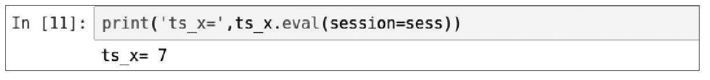
关闭TensorFlow Session。
当我们不需要再使用Session时，必须使用sess.close（）关闭Session。
将以上指令全部一起执行。
下面的程序代码是将前面步骤介绍的指令全部一起执行。

With语句打开Session并且自动关闭。
在前面的步骤中，我们使用tf.Session（）建立Session，并且使用sess.close（）关闭Session。这种做法可能有以下问题：
（1）可能忘记关闭Session。
（2）当程序执行中发生异常时，可能导致没有关闭Session。
为了解决此问题，可以使用With语句：
with关键词后面是建立的命令tf.Session（），as关键词后面是Session的变量sess。
在with程序块中可使用sess变量与设备沟通，离开with程序块就自动关闭Session。
15.3 TensorFlow placeholder
在前面的范例中，在建立“计算图”时，我们会设置ts_c常数值为2，并且设置变量ts_x为ts_c加5，这都是在建立“计算图”阶段就已经设置完成的。可是如果希望在执行“计算图”阶段才设置数值，那么就必须使用placeholder。
建立“计算图”。
以下建立两个placeholder，分别是width（宽）与height（高），然后使用tf.multiply将width与height相乘，相乘后的结果是area（面积）。
执行后建立如图15-3所示的“计算图”。
图15-3
 执行“计算图”。
执行“计算图”。
执行sess.run传入feed_dict参数｛width：6，height：8｝。
从以上执行结果可知，返回area＝48，也就是width是6，height是8，相乘等于48，如图15-4所示。
图15-4
15.4 TensorFlow数值运算方法介绍
在上一节中，我们使用tf.multiply（）方法进行TensorFlow乘法运算。TensorFlow提供了很多数值运算，可以参考下列TensorFlow说明文件：
https://www.tensorFlow.org/api_docs/python/math_ops/
如果是双目数值运算，就输入两个参数：x、y。如果是单目数值运算（例如绝对值），就只传入参数x。name参数用于设置此运算名称。
表15-3所示为TensorFlow数值运算说明。
表15-3 TensorFlow数值运算说明
注：文档中的数值运算方法很多，以上只列出常用的部分。
你也许会觉得只是简单的数值相乘，为什么要使用tf.multiply（）方法？这是因为TensorFlow特别的程序设计模式必须以TensorFlow模块（例如tf.multiply（）方法）来建立“计算图”，然后使用sess.run执行“计算图”，这样才能得到计算的结果。这样做的目的是让TensorFlow具备跨平台的能力。
15.5 TensorBoard
TensorFlow提供了TensorBoard，可以让我们以可视化的方式查看所建立的“计算图”。下面的程序代码请参考范例程序代码TensorFlow_Board_area.ipynb。
1．建立TensorFlow Variable变量
以下程序代码与之前章节的内容类似。只是建立tf.placeholder与tf.mul时加入了name参数，name参数设置的名称会显示在TensorBoardGraph中，如图15-5所示。设置名称可以让“计算图”更易读。
图15-5
2．建立TensorFlow Variable变量
下面的程序代码将要显示在TensorBoard的数据中写入log文件。
以上程序代码说明如下。
- tf.summary.merge_all（）： 将所有要显示在TensorBoard的数据整合。
- tf.summary.FileWriter（）： 将所有要显示在TensorBoard的数据写入log文件。log文件会存储在当前程序执行目录下的log/area子目录中。
3．在Windows中启动TensorBoard
如果你使用的是Windows系统，就按照下列步骤启动TensorBoard。再启动新的命令提示符程序，并且输入下列命令。
▶ 先确认log目录文件是否已经产生
在Windows的“命令提示符”程序中使用dir显示目录，以下C：\pythonwork\TensorFlow是程序的执行目录，如果读者的执行目录不同，修改为自己的执行目录即可。
▶ 启用TensorFlow的Anaconda虚拟环境
▶ 启动TensorBoard
启动TensorBoard指令如下，需指定log文件目录，TensorBoard会读取此目录，并显示在TensorBoard上。
执行后屏幕显示界面如图15-6所示。
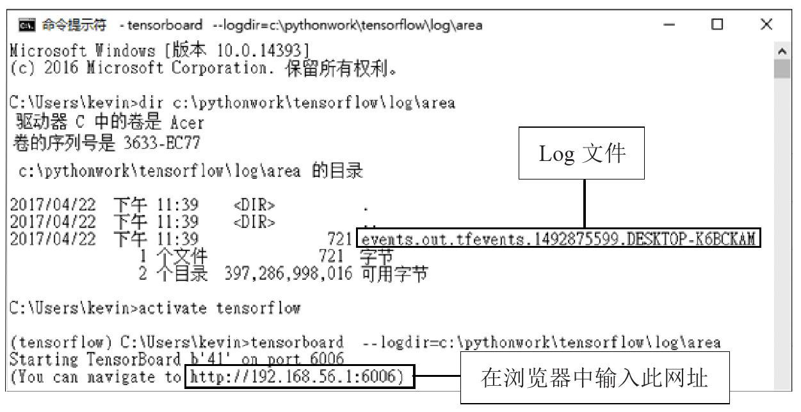
图15-6
4．在Linux Ubuntu中启动TensorBoard
如果读者使用的是Linux Ubuntu系统，就按照下列步骤启动TensorBoard。
▶ 先确认log目录文件是否已经产生
可以使用下列指令来查看log目录，以下～／pywork/TensorFlow是程序执行目录，如果读者的执行目录不同，就修改为自己的执行目录。
执行后屏幕显示界面如图15-7所示，从中可以看到log文件。
图15-7
▶ 启动TensorBoard
启动TensorBoard的指令如下，要先指定log文件目录，TensorBoard会读取此目录，并显示在TensorBoard上。
执行后屏幕显示界面如图15-8所示。
图15-8
我们也可以在浏览器中输入此网址：http://localhost:6006/，因为localhost代表本机，就是我们当前使用的计算机。
5．在TensorBoard查看计算图
启动TensorBoard之后，再启动浏览器，并输入网址：http://localhost:6006/。
输入网址后，就会出现TensorBoard界面，在菜单中选择GRAPHS，之后就可以看到“计算图”，如图15-9所示。
图15-9
15.6 建立一维与二维张量
在前面的章节中，我们介绍了零维的张量，也就是标量（数值），接下来将介绍如何使用TensorFlow建立：一维的张量为向量，二维以上的张量为矩阵。
1．建立一维张量（向量）
建立一维的张量（tensor）只需要使用tf.Variable（）传入列表即可。
从以上执行结果可知，建立的是一维张量，共有3个数值。
2．查看一维张量
可以使用shape查看数据的形状，因为一维张量共有3个数值，所以显示（3，）。
3．建立二维张量
建立二维的张量也是使用tf.Variable（）传入二维的列表，所以我们传入列表的前后有两个中括号［［0.4，0.2，0.4］］，代表这是二维的列表。

从以上执行结果可知，所建立的二维张量只有一项数据，每一项有3个数值。
4．查看二维张量
查看shape的结果是（1，3），说明如下：
5．再次建立二维张量
接下来，同样建立二维张量，共有3项数据，每一项数据有两个数值。
6．查看新的二维张量
查看shape结果是（3，2），说明如下：
15.7 矩阵基本运算
接下来将介绍矩阵基本运算：乘法与加法。
1．矩阵乘法
TensorFlow提供tf.matmul（）方法，可以进行矩阵乘法。当进行矩阵乘法时，两个矩阵的维数必须相同。范例如下：
- 建立“计算图”先建立TensorFlow变量X与W，都是二维张量（矩阵），然后使用tf.matmul进行矩阵的相乘。
- 执行“计算图”使用sess.run（XW）执行计算图，并用print显示结果。
矩阵的运算公式为XW＝X×W，计算方式如下：
大家也许会觉得奇怪，为什么程序执行结果是［［-1.299999950.40000001］］，这是因为矩阵运算是浮点运算，所以是近似值，与真实的计算结果会有误差。
2．矩阵加法
TensorFlow也可以进行矩阵加法，方法很简单，只需要使用加号即可。
矩阵的运算公式为Sum＝XW＋b，计算方式如下：
以上运算结果是［［-1.19999993 0.60000002］］，因为是浮点运算，所以是近似值。
3．矩阵乘法与加法
之前的步骤分别介绍了矩阵乘法与加法，接下来将乘法与加法一起运用。
矩阵的运算公式为XWB＝X×W＋b，计算方式如下：
以上运算结果为［［-1.19999993 0.60000002］］，因为是浮点运算，所以是近似值。
15.8 结论
本章介绍了TensoFlow的程序设计模式，并介绍了如何使用TensorFlow基本的张量运算，有了这些基础知识，下一章将介绍以TensorFlow张量（矩阵）运算来模拟类神经网络的运行。
第16章 以TensorFlow张量运算仿真神经网络的运行
在第2章中，我们介绍了以矩阵数学公式来仿真类神经网络的运行。在本章中，我们将以TensorFlow张量（矩阵）运算来仿真类神经网络的运行。
下面的程序代码可参考范例程序TensorFlow_Tensor_neural.ipynb。有关范例程序下载与安装的细节可参考本书附录A中的“本书范例程序的下载与安装说明”。
16.1 以矩阵运算仿真神经网络
1．以矩阵运算仿真神经网络的信息传导
可参考第2章以矩阵运算仿真神经网络的信息传导，如图16-1所示。
图16-1
▶ 以数学公式模拟输出与接收神经元的工作方式：
▶ 以上两个数学公式可以整合成一个矩阵运算公式：
▶ 另一种形式的矩阵公式表示如下：
▶ 矩阵公式以中文表示如下：
说明见表16-1。
表16-1 以矩阵运算模拟神经网络参数说明
2．TensorFlow张量运算仿真神经网络
接下来，我们将以TensorFlow张量运算模拟以上公式。
以上运算结果为 _y_ ＝［［0 0.28］］，矩阵的运算方式如下：
在TensorFlow使用tf.nn.relu来引用ReLU激活函数。ReLU的特色是，如果小于0转换后是0，如果大于0输出等于输入。所以第1个元素－0.36经过ReLU转换后是0，第2个元素0.28经过ReLU转换后仍然是0.28。
3．矩阵表达式加入Sigmoid激活函数
之前使用的是ReLU激活函数，我们也可以使用Sigmoid激活函数，程序代码如下：
在TensorFlow使用tf.nn.sigmoid来引用Sigmoid激活函数，计算方式如下：
4．以正态分布的随机数生成权重与偏差的初始值
参考第2章，对于深度学习模型，我们会以反向传播算法进行训练，训练前必须先“建立模型”，建立多层感知模型必须以随机数初始化模型的权重与偏差。TensorFlow提供tf.random_normal可以用来产生正态分布的随机数的矩阵。
5．执行一次sess.run可以取得3个TensorFlow变量
前面我们执行了sess.run（b）、sess.run（W）、sess.run（y），其实可以用另一种写法，只执行一次sess.run就可以取得3个TensorFlow变量，（_b，_W，_y）＝sess.run（（b，W，y））。
6．正态分布的随机数tf.random_normal
大家也许会好奇，什么是正态分布的随机数，我们将写个简单的程序代码来说明。
▶ 先使用tf.random_normal产生正态分布的随机数列表
▶ 以plt.hist显示正态分布图形
16.2 以placeholder传入 _X_ 值
_x_ 1、 _x_ 2、 _x_3是神经网络的输入，所以可能是任何数值，在实际运用时，会以placeholder传入神经网络进行运算。如图16-2所示，我们将 _x_ 1、 _x_ 2、_x_ 3改为place holder，后续以sess.run（）执行“数据流程图”时，可以使用feed_dict传入数组进行运算。
图16-2
1．以placeholder传入1×3的二维数组
以下程序代码使用placeholder传入二维数组X＝［［0.4，0.2，0.4］］。
以上传入的 _X_ 是1×3的二维数组［［0.4，0.2，0.4］］，输出的 _y_是1×2的二维数组［［0.52920794，0．］］，以上程序代码的说明如下：
▶ 先定义placeholder
tf.placeholder共有两个参数：
- 第1个参数设置为“Float“，是placeholder的数据类型。
- 第2个参数设置为［None，3］，placeholder矩阵的形状。第一维设置为None。因为传入的 _X_ 项数不限。第二维是每一项的数字个数，每一项有3个数字，所以设置为3。
▶ 建立X_array
使用np.array建立X_array。
▶ 执行sess.run
sess.run执行“数据流程图”，以feed_dict传入 _X_ ：为X_array，执行结果返回_b、_W、_X、_y变量。
2．以placeholder传入3×3的二维数组
之前placeholder的传入是1×3的二维数组，接下来将传入3×3的二维数组进行计算。
16.3 创建layer函数以矩阵运算仿真神经网络
前面的章节已经示范了以矩阵运算仿真神经网络，后续的章节我们将以相同的方式来建立类神经网络多层感知器，为了方便后续使用，我们将创建layer函数。
1．layer函数
我们将创建下面的layer函数，其功能是建立两层神经网络。
以上程序代码的详细说明如下：
▶ 定义layer函数参数
- output_dim： 输出的神经元数量。
- input _ dim： 输入的神经元数量。
- input： 输入的二维数组placeholder。
- activation： 传入激活函数，默认是None。
▶ 以正态分布的随机数建立并且初始化 _W_ （权重）
以tf.random_normal函数传入［input_dim，output_dim］参数就可以产生维数是（input_dim，output_dim）的正态分布的随机数矩阵。
▶ 以正态分布的随机数建立 _b_ （偏差）
以tf.random_normal函数传入［1，output_dim］参数就可以产生维数是（1，output_dim）的正态分布的随机数矩阵。
▶ 建立矩阵表达式 _XWb_ ＝（inputs× _W_ ）＋ _b_

▶ 设置activation激活函数
如果输入的参数activation是None，就不要使用激活函数，如果传入激活函数，就会使用传入的激活函数进行转换。
▶ 返回已建立的神经网络层
2．使用layer函数建立3层类神经网络
接下来，我们将以layer函数建立3层类神经网络，输入层有4个神经元，隐藏层有3个神经元，输出层有2个神经元，如图16-3所示。
图16-3
建立的程序代码如下：
从以上执行结果可知，输入的 _X_ 是1×4的张量，隐藏层（h）是1×3的张量，输出层（y）是1×2的张量，程序代码说明如下：
▶ 建立输入层（ _X_ ）
建立输入层使用tf.placeholder方法，设置表16-2中的参数。
表16-2 使用tf.placeholder方法建立输入层需设置的参数
▶ 建立隐藏层（ _h_ ）
调用layer函数返回隐藏层需输入表16-3中的参数。
表16-3 调用layer层返回隐藏层需输入的参数
▶ 建立输出层（ _y_ ）
调用layer函数返回输出层需输入表16-4中的参数。
表16-4 调用layer层返回输出层需要输入的参数
16.4 建立layer_debug函数显示权重与偏差
之前layer函数只返回了output，并未返回 _W_ （Weight）与 _b_
（bias），为了让读者更容易了解神经网络的运行情况，我们特别把layer函数修改为layer_debug函数，可返回 _W_ 与 _b_ ，后续可显示_W_ 与 _b_ 。
1．创建layer_debug函数
layer_debug函数与layer类似，只是除了返回output之外，它还返回 _W_ 与 _b_ 。

2．使用layer_debug函数建立3层类神经网络并显示 _W_ 与 _b_
以下程序使用layer_debug函数建立3层类神经网络，并显示第一层的 _W_ 1与 _b_ 1，以及第2层的 _W_ 2与 _b_ 2。
以上程序代码执行结果的详细说明如图16-4所示。
图16-4
图16-4的说明如下：
- _X_ 模拟输入层，共有4个神经元，我们输入的x值是1×4的张量。
- _h_ 模拟隐藏层，共有3个神经元，所以是1×3的张量。
- _y_ 模拟输出层，共有2个神经元，所以是1×2的张量。
- _W_ 1是权重，模拟神经元的轴突，因为输入层有4个神经元，隐藏层有3个神经元，为了让输入层与隐藏层神经元完全连接，所以 _W_ 1是4×3的张量。
- _b_ 1是偏差值，仿真突触的结构，代表接收神经元容易被活化的程度，偏差值越高，越容易被活化并传递信息。因为隐藏层神经元有3个，所以 _b_ 1是1×3的张量。
- _W_ 2是权重，因为隐藏层有3个神经元，输出层有2个神经元，为了让隐藏层与输出层神经元完全连接，所以 _W_ 2是3×2的张量。
- _b_ 2是偏差值，因为输出层神经元有2个，所以 _b_ 2是1×2的张量。
16.5 结论
在本章我们以TensorFlow张量（矩阵）运算来仿真类神经网络的运行，并且建立了layer函数，可用于构建神经网络层。接下来，第17章介绍用TensorFlow读取MNIST数据集，并且进行数据的预处理。
第17章 TensorFlow MNIST手写数字识别数据集
MNIST手写数字识别数据集是由Yann LeCun所收集的，他也是Convolution Neural Networks的创始人。TensorFlowMNIST数据集共有训练数据55 000项、验证数据5 000项、测试数据10000项。每一项数据都由features（数字图像）与label（真实的数字）所组成，本章将介绍用TensorFlow读取MNIST数据集，并且进行数据的预处理。
本章的内容与第6章类似，都是下载并读取MNIST数据。只是第6章用Keras语句来执行，本章用TensorFlow语句执行，两种方式类似，但是有些地方又不相同。读者可以对照阅读，进而更加了解TensorFlow与Keras。以下程序代码请参考范例程序TensorFlow_Mnist_Introduce.ipynb。
17.1 下载MNIST数据
我们将建立以下TensorFlow程序下载并读取MNIST数据。
导入TensorFlow模块。
导入TensorFlow读取MNIST数据集模块。
TensorFlow已经提供了现成模块，可以用于下载并读取MNIST数据。
第一次执行会下载MNIST数据。
第一次执行input_data.read_data_sets方法，程序会检查当前执行的目录是否有“MNIST_data／“目录以及是否已经有文件，如果还没有，就会下载文件。以下是第一次执行下载文件的屏幕显示界面。因为必须要下载文件，所以运行时间会比较长。
查看MNIST数据文件。
下载完成后，可以输入下列指令查看当前程序执行目录（～／pywork/TensorFlow）下的MNIST_data子目录。
执行界面如图17-1所示。
图17-1
读取MNIST数据。
当我们再次执行input_data.read_data_sets时，由于之前已经下载了文件，不需要再次下载，只需要读取文件，因此运行时间不会太长。
查看MNIST数据。
下载后，可以使用下列指令来查看MNIST数据。
从以上执行结果可以看到数据分为三部分。
- train： 训练数据55 000项。
- validation： 验证数据5 000项。
- test： 测试数据10 000项。
17.2 查看训练数据
先查看训练数据。
1．训练数据是由images与labels所组成的（见图17-2）
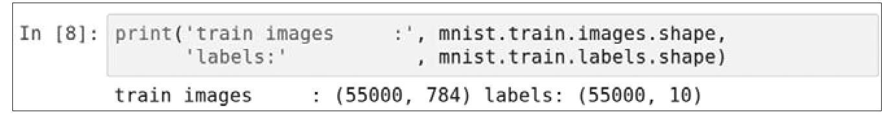

较17-2
2．查看第0项images图像的长度
用len函数来查看第0项images图像的长度，我们可以看到共有784个数字。
3．查看第0项images图像的内容
查看第0项images图像的内容，共有784个数值。TensorFlow已经进行标准化，数值都介于0～1之间，所以不需要再标准化。
4．定义plot_image函数显示图像
为了能够显示图形，我们创建如下的plot_image函数。

▶ 首先导入matplotlib.pyplot模块，后续用plt来引用
▶ 定义plot_image函数，传入image作为参数
▶ 使用plt.imshow显示图形
使用plt.imshow显示图形，传入参数image原本是784个点，必须先使用reshape转换为28×28的图形，cmap参数设置为binary。
▶ 开始绘图
5．执行plot_image函数
以下程序调用plot_image函数传入mnist.train.images［0］，也就是训练数据集的第0项数据，从显示结果中可以看到这是一个数字7的图形。
6．查看训练标签labels数据
因为我们之前读取数据集时mnist＝input_data.read_data_sets（“MNIST_data／“，one_hot＝True），指定参数one_hot是True，所以产生的数据labels是One-Hot Encoding格式。One-Hot Encoding是由数字0与1所组成的，只有一个数字是1，其余都是0，例如：
下列程序代码显示训练数据的第0项数据：从0算起第7个数字是1，其余都是0，所以此数字是7。
使用One-Hot Encoding的原因是，后续我们要建立类神经网络的输出层，输出层共有10个神经元：y0～y9，分别对应0～9。
7．使用argmax显示数字
One-HotEncoding格式阅读起来不太方便，我们可以使用np.argmax转换为0～9的数字。例如下面的程序代码，将mnist.train.labels［0］转换为数字7。
17.3 查看多项训练数据images与labels
修改plot_images_labels_prediction（）函数。
为了便于查看多项数据images与labels，我们将修改第6章所创建的plot_images_labels_prediction（）函数，修改如下：
主要修改了以下两部分。
（1） 转换images字段：因为TensorFlow的MNIST数据集的image有764个数值，所以必须以np.reshape转换为二维28×28的图像才能显示出来。
（2） 转换labels字段： 因为TensorFlow的MNIST数据集的labels字段已经是One-HotEncoding格式，所以必须使用np.argmax将One-Hot Encoding格式转换为数字才能显示0～9的数字。
查看训练数据前10项数据。
执行plot_images_labels_prediction（）显示训练数据前10项数据。
查看validation数据项数。
通过下面的程序代码可以看到validation数据项数共5000项。
查看validation数据。
执行plot_images_labels_prediction（）显示验证数据前10项数据。
查看test数据项数。
 查看test数据。
查看test数据。
17.4 批次读取MNIST数据
在后续章节我们要进行深度学习网络的训练，每次训练时，并不是读取所有数据进行训练，而是读取批次数据（例如100项）进行训练。在TensorFlowMNIST模块中，已经提供了mnist.train.next_batch方法，可按批次读取数据。
读取批次数据。
下面的程序代码使用mnist.train.next_batch方法传入参数batch_size＝100，每次只读取100项批次训练数据。读取的结果会存储在batch_images_xs，batch_labels_ys中。
查看批次数据项数。
使用以下指令可以看到批次训练数据的项数是100项。
查看批次数据。
执行plot_images_labels_prediction（）显示批次训练数据前10项数据。
17.5 结论
在本章中，我们介绍了使用TensorFlow下载并且读取MNIST数据集，还介绍了MNIST数据集的特色，并且完成了数据的预处理。在下一章，我们就可以使用TensorFlow建立多层感知器模型，并且进行训练和使用模型进行预测。
第18章 TensorFlow多层感知器识别手写数字
本章将介绍如何使用TensorFlow建立多层感知器，训练模型、评估模型的准确率，然后使用训练完成的模型来识别MNIST手写数字，并且尝试将模型加宽、加深，以提高准确率。
本章在说明程序代码时，会比较Keras与TensorFlow在建立模型、训练模型时有哪些不同，让读者更了解这两种程序设计模式的差异。读者可以对照第7章Keras程序代码的说明。
本章完整的程序代码可参考范例程序TensorFlow_Mnist_MLP_h256.ipynb。范例程序的下载与安装可参考本书附录A。
18.1 TensorFlow建立多层感知器辨识手写数字的介绍
1．多层感知器的训练与预测
建立如图18-1所示的多层感知器模型后，必须先训练才能够预测（识别）这些手写数字。
图18-1
以多层感知器模型识别MNIST数字图像可分为训练与预测两个部分。
▶ 训练
MNIST训练数据集的训练数据共60000项，经过数据预处理后会产生features（数字图像特征值）与label（数字真实的值），然后输入多层感知器模型进行训练，训练完成的模型可以在下一阶段预测时使用。
▶ 预测
输入数字图像，预处理后会产生features（数字图像转换为特征），使用训练完成的多层感知器模型进行预测，最后产生预测结果。
2．以多层感知器模型识别MNIST手写数字图像
我们将以多层感知器模型识别MNIST手写数字图像来说明多层感知器模型的工作方式，如图18-2所示。
图18-2
3．以矩阵公式仿真多层感知器模型的工作方式（见图18-3）
图18-3
4．多层感知器模型的建立步骤
多层感知器识别MNIST数据集中的手写数字的步骤说明如图18-4所示。

图18-4
18.2 数据准备
首先读取MNIST数据集数据，关于MNIST数据集的内容可参考第17章。
18.3 建立模型
Keras与TensorFlow建立模型的方式有所不同，说明如下。
- Keras建立模型：只需要使用model＝Sequential（）建立线性堆叠模型，再使用model.add（）方法将各个神经网络层加入模型即可。
- TensorFlow建立模型：必须自行定义layer函数（处理张量运算），然后使用layer函数构建多层感知器模型。
后续的程序代码将以TensorFlow定义layer函数，然后构建多层感知器模型，如图18-5所示。
图18-5
1．建立layer函数
我们将使用layer函数（详细说明请参考第16章）构建多层感知器模型。
2．建立输入层（ _x_ ）
下列程序代码使用tf.placeholder方法建立输入层（ _x_
），placeholder是TensorFlow“计算图”的输入，后续在训练时会传入数字图像数据。
建立tf.placeholder方法需设置表18-1中的参数。
表18-1 建立tf.placeholder方法需设置的参数
以上tf.placeholder方法会返回x输入层，可作为下一层的输入。
3．建立隐藏层（ _h_ 1）
使用下列程序代码来建立隐藏层（ _h_ 1）。
建立隐藏层时，调用layer函数需输入表18-2中的参数。
表18-2 建立隐藏层时调用layer函数需输入的参数
以上layer函数执行后会返回h1隐藏层，可作为下一层的输入。
4．建立输出层（ _y_ ）
使用下列程序代码建立输出层（ _y_ ）。
建立输出层y_predict时，调用layer函数需输入表18-3中的参数。
表18-3 建立输出层y_predict时调用layer函数需输入的参数
18.4 定义训练方式
以下说明Keras与TensorFlow定义训练方式的不同。
- Keras定义训练方式： 只需要使用model.compile设置损失函数、优化器，并用metrics设置评估模型的方式。
- TensorFlow定义训练方式： 必须自行定义损失函数的公式、优化器和设置参数，并定义评估模型准确率的公式。
建立训练数据label真实值的placeholder。
以上程序代码使用tf.placeholder方法来建立y_label，需设置表18-4中的参数。
表18-4 使用tf.placeholder方法来建立y_label需设置的参数
placeholder是TensorFlow“计算图”的输入，后续在训练时会传入数字的label（真实值）。
定义损失函数。
在深度学习模型的训练中使用cross_entropy交叉熵训练的效果比较好。
以上程序代码的说明见表18-5。
表18-5 程序代码说明
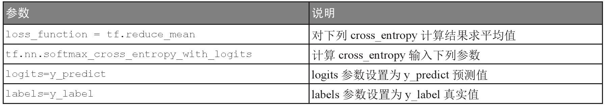
 定义优化器。
定义优化器。
以上程序代码的说明见表18-6。
表18-6 程序代码说明
18.5 定义评估模型准确率的方式
训练模型完成后，我们希望能够评估模型的准确率。在TensorFlow必须定义评估模型准确率的方式。
计算每一项数据是否预测正确。
首先，计算每一项数据是否预测正确。
以上程序代码的说明见表18-7。
表18-7 程序代码说明
计算预测正确结果的平均值。
再将前一步的计算结果correct_prediction进行平均运算。
程序代码说明见表18-8。
表18-8 程序代码说明
18.6 进行训练
关于Keras与TensorFlow进行训练的比较如下。
- Keras进行训练： 只需要使用model.fit就可以开始训练。
- TensorFlow进行训练： 必须编写程序代码来控制训练的每一个过程。
▶ 使用TensorFlow进行训练
以下训练数据共55 000项，分为每一批次100项，要将所有数据训练完毕需执行550批次（55000/100＝550批次），当所有数据训练完毕，称为完成一个训练周期。我们将执行15个训练周期，尽量使误差降低，并且尽量提高准确率。整理训练过程流程图如图18-6所示。

图18-6
1．定义训练参数

程序代码说明见表18-9。
表18-9 程序代码说明
2．进行训练
以上程序代码的详细说明如下：
▶ 执行15个训练周期
▶ 每一个训练周期执行550批次训练
for i in range（totalBatchs）执行550批次训练。
① 读取批次数据：使用mnist.train.next_batch方法读取批次数据，传入参数batchSize是100，每批次会读取100项数据，执行后返回。
- batch_x数字图像（特征值）共100项。
- batch_y数字图像（真实值）共100项。
② 执行批次训练：sess.run（optimizer，feed_dict＝｛x：batch_x，y_label：batch_y｝）使用sess.run执行优化器，通过feed_dict把数据传送给两个placeholder，分别是：
- x placeholder传入batch_x。
- y_label placeholder传入batch_y。优化器按照误差值更新神经元连接的权重与偏差，尽量使损失函数的误差值最小化。
▶ 使用验证数据计算准确率
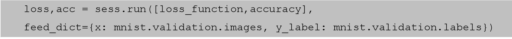
使用sess.run（［loss_function，accuracy］计算准确率，并且通过feed_dict把数据传送给两个placeholder，分别是：
- x：mnist.validation.images验证数据的数字图像（特征值）。
- y_label：mnist.validation.labels验证数据的数字图像（真实值）。
执行后会返回误差与准确率。
▶ 显示训练结果，并存入列表用于后续显示图表
epoch_list.append（epoch）加入训练周期列表，loss_list.append（loss）加入误差列表，accuracy_list.append（acc）加入准确率列表，这些列表后续可用于显示图表。
另外，使用print显示此训练周期的结果。
▶ 15个训练周期后，计算并且显示全部训练所需的时间
执行后结果如图18-7所示。
图18-7
从以上执行结果的屏幕显示界面可以看到共执行了15个训练周期，还可以发现误差越来越小，准确率越来越高。
3．画出误差执行结果
使用以下程序代码画出误差的执行结果。
程序代码的说明见表18-10。
表18-10 程序代码说明
（续表）
显示后结果如图18-8所示，我们可以看到误差越来越小。
图18-8
4．画出准确率的执行结果
使用下面的程序代码画出准确率的执行结果。
上面的程序代码与上一步类似，只是多了plt.ylim（0.8，1），用于设置 _y_ 轴显示的范围，如图18-9所示。
图18-9
18.7 评估模型准确率
之前我们已经完成了训练，现在要使用test测试数据集，评估模型的准确率。
下面的程序代码使用sess.run（accuracy）计算准确率，并使用feed_dict把数据传送给以下两个placeholder。
- x：mnist.test.images：测试数据的数字图像。
- y_label：mnist.test.labels：测试数据的数字真实值。
以上执行结果的准确率是0.94。
18.8 进行预测
在之前的步骤中我们建立了模型，并且完成了模型的训练，准确率达到还可以接受的0.94，接下来将使用此模型进行预测。
1．执行预测
我们可以用下列指令执行预测。
以上程序代码使用sess.run（tf.argmax（y_predict，1）执行预测，因为y_predict预测结果为One-HotEncoding格式，所以必须使用tf.argmax转换为0～9的数字。执行时必须用feed_dict把数据传送给以下placeholder。
- x：mnist.test.images： 测试数据的数字图像。
以上程序代码执行后，会将预测结果存储在prediction_result中。
2．预测结果
可以用下列指令来查看预测结果prediction_result的前10项数据。
我们可以看到第1项预测结果是7，第2项是2，等等。
3．显示前10项预测结果
调用前一步创建的plot_images_labels_prediction函数显示前10项预测结果，传入测试数据图像、label及预测结果。
执行后的预测结果如图18-10所示。
图18-10
18.9 隐藏层加入更多神经元
为了增加多层感知器模型的准确率，在本节的范例中将隐藏层原本256个神经元改为1000。本节完整的程序代码可参考范例程序TensorFlow_Mnist_MLP_h1000.ipynb。
我们将使用下面的程序代码建立多层感知器模型。
修改隐藏层原本256个神经元为1000个神经元。
预测准确率。
以上执行结果的准确率是0.95，比上一节模型的准确率稍微提高了。
18.10 建立包含两个隐藏层的多层感知器模型
为了更进一步增加多层感知器模型的准确率，在本节范例中将建立两个隐藏层。本节完整的程序代码可参考范例程序TensorFlow_Mnist_MLP_h1000-h1000.ipynb。
如图18-11所示，我们将使用下面的程序代码加入两个隐藏层。
图18-11
建立多层感知器模型，包含两个隐藏层。
预测准确率。
以上执行结果的准确率是0.96，比上一节模型的准确率又稍微提高了。
18.11 结论
在本章中我们使用TensorFlow建立多层感知器模型，识别MNIST数据集中的手写数字，并且尝试将模型加深，以提高准确率。准确率大约为0.96。不过，多层感知器有极限，如果还要进一步提升准确率，就必须使用卷积神经网络。
第19章 TensorFlow卷积神经网络识别手写数字
在前面的章节中，我们使用多元感知器识别MNIST数据集中的手写数字，准确率大约是0.96。在本章节中，我们将使用卷积神经网络（ConvolutionalNeural Network，CNN）来识别MNIST数据集中的手写数字，其分类精度接近0.99。
卷积神经网络是由一位计算机科学家Yann LeCun所提出的。他在机器学习、计算机视觉和计算神经科学等诸多领域都有不少贡献。
本章完整的程序代码可参考范例程序TensorFlow_Mnist_CNN.ipynb。有关范例程序的下载与安装可参考本书附录A中的“本书范例程序的下载与安装说明”。
19.1 卷积神经网络简介
1．卷积神经网络的介绍
卷积层的意义是，将原本一个图像经过卷积运算产生多个图像，就好像卷积起来。卷积神经网络可分为两大部分（见图19-1）：
图19-1
- “卷积”与“缩减采样”提取图像的特征
通过“第1次卷积”与“第1次缩减采样”、“第2次卷积”与“第2次缩减采样”的处理来提取图像的特征。通过以上这种方式可以提高识别的准确率。
- 完全连接神经网络
提取图像的特征后，reshape转换为一维的向量，送入由“平坦层”“隐藏层”“输出层”所组成的类神经网络进行处理。
本章在说明程序代码时，会比较Keras与TensorFlow建立模型、训练模型的不同，让读者更了解这两种程序设计模式的差异，可以对照第8章有关Keras程序代码的说明。
2．建立卷积神经网络识别MNIST数据集的步骤
建立卷积神经网络识别MNIST数据集的步骤如图19-2所示。
图19-2
19.2 进行数据预处理
使用下面的程序代码读取MNIST数据集，可参考第17章的说明。
19.3 建立共享函数
为了便于后续建立模型，我们建立下面的共享函数。
1．定义weight函数，用于建立权重张量
定义weight函数，输入参数shape，先以tf.truncated_normal随机方式初始化权重，然后使用tf.Variable建立TensorFlow变量。
2．定义bias函数，用于建立偏差张量
定义bias函数，输入参数shape，先以tf.constant建立常数（输入参数：0.1与shape），然后使用tf.Variable建立TensorFlow张量变量，并且返回计算结果。
3．定义conv2d函数，用于进行卷积运算
我们将使用下面的conv2d函数进行卷积运算，其效果相当于滤镜的功能。卷积运算的细节可参考第8章的说明。
使用TensorFlow提供的tf.nn.conv2d函数进行卷积运算，并且返回运算结果，执行时需输入下列参数。
- x是输入的图像： 后续我们会传入要处理的图像，必须是四维的张量。
- W是filter weight滤镜的权重： 后续我们会以随机方式产生filter weight并且传给此参数。
- strides： 滤镜的步长，设置为［1，1，1，1］，其格式是［1，stride，stride，1］，也就是滤镜每次移动时，从左到右、从上到下各一步。
- padding： 设置为’SAME’模式，此模式会在边界之外补0，在进行运算时，让输入与输出图像的大小相同。
卷积运算的结果如图19-3所示。
图19-3
4．出具max_pool_2x2函数，用于建立池化层
我们将创建max_pool_2x2函数，用于建立池化层进行图像的缩减采样。关于Max-Pool运算的细节，请参考第8章的说明。
使用TensorFlow提供的tf.nn.max_pool函数建立池化层并且返回计算结果，执行时需输入下列参数。
- x是输入的图像： 后续我们会传入要处理的图像，必须是四维的张量。
- ksize： 缩减采样窗口的大小，设置为［1，2，2，1］，其格式是［1，height，width，1］，也就是高度＝2、宽度＝2的窗口。
- strides： 缩减采样窗口的跨步，设置为［1，2，2，1］，其格式是［1，stride，stride，1］，也就是缩减采样窗口，从左到右、从上到下移动时的步长各两步。
后续处理手写数字图像时，原本28×28的图像经过Max-Pool之后，缩小为14×14的图像，如图19-4所示。
图19-4
19.4 建立模型
之前Keras建立卷积神经网络模型很简单，只需要建立Sequential模型，然后将各个神经网络层加入模型即可，但是，在TensorFlow中，必须自行设计每一层的张量运算。我们将使用下面的TensorFlow程序代码来建立卷积神经网络模型，如图19-5所示。
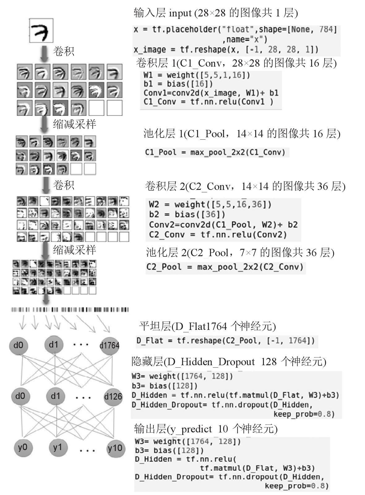
图 19-5
在下面的程序代码中，每一个层级都会加入“计算图”的层级名称。例如，输入层会加入withtf.name_scope（’Input_Layer’）的程序代码，其功能是设置输入层的名称为’Input_Layer’。
如果不设置“计算图”的层级名称，程序仍然可以正常运行，但是因为CNN的层级比较复杂而且层级很多，所以设置层级名称可以让程序代码比较易读。另外，后续当我们使用TensorBoard查看“计算图”时，可以很清楚地看到每一个层级，比较容易使用TensorBoard查看“计算图”，会在后面的章节介绍。
1．输入层
使用下面的程序代码建立输入层。
以上程序代码使用with tf.name_scope（’Input_Layer’）设置“计算图”输入层的名称，其余程序代码说明如下：
▶ 建立输入层（x）
placeholder是TensorFlow“计算图”的输入，后续在训练时会传入数字图像数据。
建立tf.placeholder方法需设置下列参数。
- “Float“： 数据类型是Float。
- shape＝［None，784］： 第一维设置为None，因为后续我们训练时会传送很多数字图像，项数不固定，所以设置为None。第二维设置为784，因为输入的数字图像像素是784。
▶ x reshape为四维张量
_x_ 原本是一维向量，因为后续要进行卷积与池化运算，所以必须转换为四维张量，说明如下。
- 第一维是－1： 因为后续训练时通过placeholder输入的项数不固定，所以设置为－1。
- 第二、三维是28，28： 输入的数字图像大小是28×28。
- 第四维是1： 因为是单色，所以设置为1，如果是彩色，就要设置为3。
2．建立卷积层1
卷积层的运算会以单个图像来产生多个图像，卷积运算后的效果类似于滤镜效果。这有助于提取输入的不同特征，例如边缘、线条和角等。
输入数字图像的大小为28×28，例如数字7的图像。卷积运算后会产生16个图像，卷积运算并不会改变图像大小，所以图像大小仍然是28×28。我们可以看到这些图像仍然像7，但是提取了不同的特征。
使用下面的程序代码建立卷积层1，计算图的层级名称是C1_Conv。
以上程序代码的详细说明如下：
▶ 建立 _W_ 1权重
使用之前建立的weight共享函数建立 _W_ 1权重，共有四维，说明如下。
- 第一、二维均是5： 代表滤镜（filter weight）的大小为5×5。
- 第三维是1： 因为数字图像是单色的，所以设置为1，如果是彩色的，就要设置为3。
- 第四维是16： 要产生16个图像。
▶ 建立 _b_ 1偏差值
使用之前建立的bias函数建立偏差值 _b_ 1。因为卷积层1要产生16个图像，所以输入参数shape＝［16］。
▶ 进行卷积运算
使用之前建立的conv2d函数进行卷积计算，输入参数：x_image（要处理的图像）、 _W_ 1（滤镜的权重）、conv2d计算结果以及偏差值。
▶ ReLU激活函数
以上卷积运算的结果再由ReLU激活函数转换，最后的结果是C1_Conv。
3．建立池化层1
池化层使用缩减采样会将图像由28×28缩小为14×14，不会改变图像数量（仍然是16）。
缩减采样会缩小图像，有下列好处。
（1）减少所需处理的数据点： 减少后续运算所需的时间。
（2）让图像位置差异变小： 例如手写数字7，位置上下左右可能不同，但是位置的不同可能会影响识别，减小图像的大小让数字的位置差异变小。
（3）参数的数量和计算量下降： 这在一定程度上也控制了过度拟合。
下面的程序代码使用之前创建的max_pool_2x2函数传入卷积层C1_Conv进行缩减采样，建立池化层1，计算图的层级名称是C1_Pool。
4．建立卷积层2
第2次卷积运算将原本的16个图像转换为36个图像，卷积运算不会改变图像的大小，所以图像的大小仍然是14×14。使用下面的程序代码建立卷积层2，计算图的层级名称是C2_Conv。
以上程序代码的详细说明如下：
▶ 建立 _W_ 2权重
使用之前创建的weight共享函数建立 _W_ 2权重，共有四维，说明如下。
- 第一、二维均是5： 代表滤镜的大小为5×5。
- 第三维是16： 因为卷积层1的图像数量是16个。
- 第四维是36： 因为要将原本的16个图像转换为36个图像。
▶ 建立偏差值向量
使用之前创建的bias函数建立偏差值 _b_ 2。因为卷积层2要产生36个图像，所以输入参数shape＝［36］。
▶ 进行卷积运算
使用之前创建的conv2d共享函数进行卷积计算，传入参数：C1_Pool（池化层1）、 _W_ 2（filter weight）以及偏差值向量 _b_ 2。
▶ ReLU激活函数
最后由ReLU激活函数转换，ReLU会将原本是负数的点转换为0。
5．建立池化层2
下面的程序代码使用之前创建的max_pool_2x2函数传入C2_Conv（卷积层2）进行缩减采样，建立池化层2，计算图的层级名称是C2_Pool。
6．建立平坦层
平坦层可以将池化层2的36个7×7的图像转换为一维的向量，长度是36×7×7＝1764，也就是1764个浮点数，作为神经元的输入。使用下面的程序代码建立平坦层，计算图的层级名称是D_Flat。
以上程序代码使用tf.reshape传入下列参数。
- C2 _ Pool: 此参数设置为要进行reshape的张量。
- ［-1, 1764］:
■第一维是－1，因为后续会传入不限定项数的训练数据——数字图像。
■第二维是1764，因为C2_Pool是36个7×7的图像，要转换为一维的向量，长度是36×7×7＝1764。
7．建立隐藏层
使用下面的程序代码建立隐藏层，计算图的层级名称是D_Hidden_Layer。
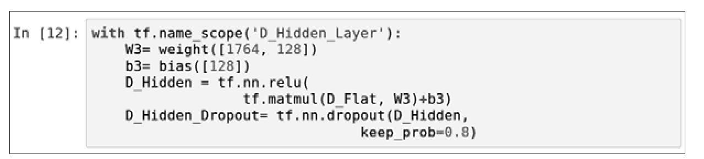
以上程序代码详细说明如下：
▶ 建立 _W_ 3权重
使用weight共享函数建立 _W_ 3权重，输入shape参数，说明如下。
- 第一维是1764， 因为上一层D_Flat有1764个神经元。
- 第二维是128， 因为要建立的隐藏层D_Hidden有128个神经元。
▶ 建立偏差值向量
使用之前创建的bias函数建立偏差值 _b_ 3。因为要建立的隐藏层D_Hidden有128个神经元，所以输入参数shape＝［128］。
▶ 建立隐藏层（D_Hidden_Layer）
建立隐藏层的公式如下：
先使用tf.matmul将D_Flat与W3矩阵相乘，再加上偏差值向量，最后使用tf.nn.relu激活函数转换后，就可以得到隐藏层D_Hidden。
▶ 加入Dropout避免过度拟合
tf.nn.dropout的功能是，每次训练迭代时都会随机地在神经网络中放弃一些神经元，以避免过度拟合。输入的参数如下。
- D_Hidden： 要执行dropout的神经网络层。
- keep _ prob＝0.8： 设置要保留的神经元比率，0.8代表要保留80%的神经元，随机去掉20%的神经元。
8．建立输出层
输出层共有10个神经元，对应数字0～9。建立隐藏层的公式如下：
下面的程序代码建立隐藏层，计算图的层级名称是Output_Layer。
以上程序代码的详细说明如下：
▶ 建立 _W_ 4权重
使用weight共享函数建立 _W_ 4权重，输入shape参数，说明如下。
- 第一维是128， 因为上一层D_Hidden有128个神经元。
- 第二维是10， 因为要建立的输出层（Output_Layer）有10个神经元。
▶ 建立偏差值向量
使用之前创建的bias函数建立偏差值 _b_ 4。因为要建立的输出层（Output_Layer）有10个神经元，所以输入参数shape＝［10］。
▶ 建立输出层（y_predict）
先使用tf.matmul将D_Hidden_Dropout与W4矩阵相乘，再加上偏差值向量 _b_4，最后使用tf.nn.softmax激活函数转换后，就可以得到输出层y_predict。
19.5 定义训练方式
在之前的步骤中已经建立了卷积神经网络模型。接下来，使用反向传播算法训练多层感知器模型。
下面的程序代码与第18章的程序代码完全相同，详细说明可参考第18章。
19.6 定义评估模型准确率的方式
当使用上一节的方法训练模型完成某一阶段后，我们希望能够评估模型的准确率。
下面的程序代码与第18章的程序代码完全相同，详细说明可参考第18章。
19.7 进行训练
我们将使用反向传播算法训练，训练数据共55 000项，分为每一批次100项，要将所有数据训练完毕需执行550批次（55000/100＝550批次），当所有数据训练完毕后，完成一个训练周期。
我们将执行30个训练周期，尽量使误差降低，并且尽可能提高准确率。
下面的程序代码与第18章的程序代码完全相同，详细说明可参考第18章。
 定义训练参数。
定义训练参数。
 进行训练。
进行训练。
结果如图19-6所示。
图19-6
从训练结果可知准确率达到了0.9864。
画出误差执行的结果，如图19-7所示。
图19-7
画出准确率执行的结果，如图19-8所示。
图19-8
19.8 评估模型准确率
之前我们已经完成训练，现在要使用test测试数据集评估模型的准确率。评估模型的准确率与第18章的程序代码完全相同，可参考第18章的说明。以下仅列出执行的结果。
19.9 进行预测
在之前的步骤中我们建立了模型，并且完成了模型的训练，准确率达到还可以接受的0.98，接下来将使用此模型进行预测。下面的程序代码与第18章的程序代码完全相同，详细说明可参考第18章。
1．执行预测
我们可以用下面的指令执行预测。
这段程序代码使用了sess.run（tf.argmax（y_predict，1），因为y_predict是One-HotEncoding，所以必须先使用tf.argmax进行转换，再进行预测并使用feed_dict传入。
- x：mnist.test.images： 测试数据的数字图像。
2．预测结果
我们可以用下列指令来查看预测结果的前10项数据。
可以看到第1项预测结果是7，第2项是2……
3．显示前10项预测结果
在第18章中创建的show_images_labels_prediction函数中显示前10项预测结果，传入测试数据图像、label及预测结果。
执行后预测结果如图19-9所示。
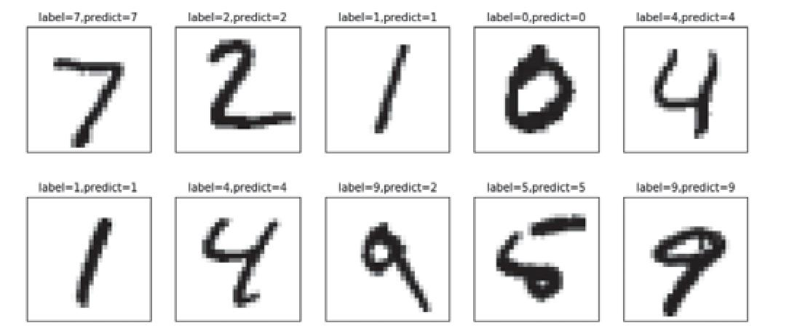
图19-9
19.10 TensorBoard
TensorFlow提供了TensorBoard，可以让我们以可视化的方式来查看所建立的“计算流程图”，我们可按照下列步骤来查看卷积神经网络的“计算图”。
首先，使用程序代码将要显示在TensorBoard的计算图写入log文件。
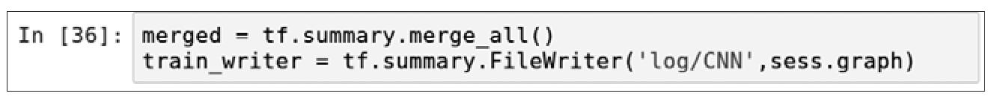
1．在Windows中启动TensorBoard
如果读者使用的是Windows系统，就按照下列步骤启动TensorBoard。启动“命令提示符”程序，并且输入下列命令。
▶ 先确认log目录文件是否已经产生
在Windows的“命令提示符”程序中使用dir显示目录。
▶ 启用TensorFlow的Anaconda虚拟环境
▶ 启动TensorBoard
启动TensorBoard指令需指定log文件目录，TensorBoard会读取此目录，并显示在TensorBoard上。
执行后屏幕显示界面如图19-10所示。
图19-10
2．启动TensorBoard
启动TensorBoard的指令如下，需指定log文件目录，TensorBoard会读取此目录，并显示在TensorBoard上。
执行后屏幕显示界面如下：
3．在TensorBoard查看“计算图”
启动TensorBoard之后，再启动浏览器，并输入网址：http://localhost：6006／。
输入网址后就会出现TensorBoard界面，在菜单中选择GRAPHS之后即可看到“计算图”，如图19-11所示。
图19-11
从图19-11中可以清楚地看到卷积神经网络的每一个层级，可以单击相应层级来查看详细的内容。
19.11 结论
我们使用卷积神经网络来识别MNIST数据集中的手写数字，其分类精度接近0.99。不过，卷积神经网络训练需要很多时间，下一章我们将介绍如何使用GPU来进行训练，这样可以减少训练所需的时间。
第20章 TensorFlow GPU版本的安装
近年来深度学习和人工智能技术发展持续加速，很重要的因素是GPU提供了强大的并行计算架构，可让深度学习的训练比普通CPU快数十倍。本章将特别介绍GPU的安装与应用，读者只需要有NVIDIA显示适配器（即显卡），然后安装CUDA、cuDNN、TensorFlowGPU版本与Keras，就可以使用GPU大幅加快深度学习的训练。
TensorFlow主要是通过NVIDIA提供的CUDA和cuDNN来存取GPU的，而Keras是TensorFlow的高级API，所以必须通过TensorFlow存取GPU，整理如图20-1所示。
图20-1 GPU具有数千个核心
CUDA是由NVIDIA所推出的整合技术，统一计算设备架构（Compute Unified DeviceArchitecture，CUDA），是NVIDIA的通用并行计算架构，就是运用图形处理单元（GPU）的强大处理能力大幅增加计算性能。NVIDIA已售出数百万颗CUDAGPU，应用于各种领域，如图像处理、视频处理、医学诊断等。
cuDNN（CUDA Deep Neural NetworkLibrary）是NVIDIA深度学习SDK的一部分，是GPU的深度学习程序库。cuDNN能为深度学习提供高性能神经网络层级，例如卷积、池化和激活层等。
我们可以从NVIDIA官方网站下载CUDA和cuDNN这两个软件。
Keras与TensorFlow GPU在Windows系统中的安装步骤如图20-2所示。
图20-2
20.1 确认显卡是否支持CUDA
确认现有的或预定要采购的独立显卡是否支持CUDA，可按照下列步骤操作。
1．查看支持CUDA的显卡
可到网站https://developer.nvidia.com/cuda-gpus查看支持CUDA的显卡，如图20-3所示。
图20-3
2．查看系统信息（见图20-4）
图20-4
3．查看显卡（见图20-5）
图20-5
有了显卡名称就可以查看图20-3所介绍的网页，对照一下，看看是否支持CUDA。
20.2 安装CUDA
确认系统已经安装了支持CUDA的显卡之后，就可以安装CUDA了，步骤如下。
下载并安装CUDA
到NVIDIA网站下载CUDA：https://developer.nvidia.com/cuda-downloads。
安装步骤如图20-6所示。
图20-6
Installer Type安装有以下两种方式可选。
- exe（network）： 下载时文件比较小，后续执行安装时再下载其余部分。
- exe（local）： 下载时完整下载，后续执行安装时就不需要下载了。
设置解压缩安装程序的暂存目录。
因为之前在Installer Type中选择了exe（network），所以安装过程需要下载与解压缩，必须设置解压缩目录，如图20-7所示。
图20-7
同意协议并继续，如图20-8所示。
图20-8
选择精简安装选项，如图20-9所示。
图20-9
警告未安装Visual Studio。
CUDA可以用Visual Studio开发。图20-10所示的界面警告未安装VisualStudio。不过后续我们是使用Python来开发的，所以不需要事先安装Visual Studio。
图20-10
下载CUDA界面。
因为之前在Installer Type中选择了exe（network），所以下载会比较久一些，下载过程如图20-11所示。
图20-11
确认是否要安装此设备软件，如图20-12所示。
图20-12
确认安装，如图20-13所示。

图20-13
安装完成，如图20-14所示。

图20-14
20.3 安装cuDNN
接下来安装cuDNN，步骤如下。
下载cuDNN。
在浏览器中输入NVIDIA的网址（https://developer.nvidia.com/cudnn），出现如图20-15所示的页面。
图20-15
加入会员。
下载cuDNN必须先成为加速计算开发者计划的会员，如图20-16所示。
图20-16
进入下载页面。
加入会员并且登录后，进入下载页面，如图20-17所示。
图20-17
查看下载后的文件。
下载后的文件cudnn-8.0-windows10-x64-v5.1.zip是一个ZIP压缩文件，在Windows 10中可直接打开，如图20-18所示。
图20-18
复制到其他目录。
打开ZIP压缩文件后的内容如图20-19所示，我们可以看到一个CUDA目录。
图20-19
创建tools目录，并且粘贴之前复制的文件。
在本书中我们建立C：\tools目录（见图20-20），用于存储cuda目录，当然读者也可以放在其他目录下。
图20-20
已复制／粘贴到tools目录，如图20-21所示。
图20-21
查看cudnn64_5.dll。
复制／粘贴后，在C：\tools\cuda\bin目录可以看到cudnn64_5.dll，如图20-22所示。这是动态链接程序库，其他程序会通过此链接库来使用cuDNN的功能。
图20-22
20.4 将cudnn64_5.dll存放的位置加入Path环境变量
为了让Windows系统知道所安装cuDNN的目录，必须设置Path环境变量，这样其他程序才可以通过这个设置来存取cudnn64_5.dll。
编辑系统环境变量，如图20-23所示。
图20-23
单击“环境变量”按钮，如图20-24所示。
图20-24
编辑环境变量，如图20-25所示。
图20-25
编辑用户变量。
在Path环境变量中加入“C：\tools\cuda\bin；”，这是20.3节cudnn64_5.dll的安装目录，如图20-26所示。
图20-26
20.5 在Anaconda建立TensorFlow GPU虚拟环境
本书前面介绍了如何使用CPU与GPU来执行TensorFlow与Keras。然而CPU与GPU所需安装的TensorFlow版本不一样，所以我们要分别建立CPU与GPU的虚拟环境，以便在下一章测试CPU与GPU的执行性能。
在第4章中，我们已经介绍了如何在Anaconda中建立TensorFlow虚拟环境，并且安装了TensorFlow的CPU版本，本章将在Anaconda中建立TensorFlowGPU虚拟环境，并且安装TensorFlowGPU版本以及Keras。如果读者还没有在Windows中安装Anaconda，可先按照第4章的说明安装Anaconda。
重新启动“命令提示符”程序，并且切换到工作目录。
在“命令提示符”窗口中输入下列命令，以切换到工作目录：
执行后屏幕显示界面如图20-27所示。
图20-27
在Anaconda建立TensorFlow GPU虚拟环境。
现在我们要在Anaconda建立TensorFlow GPU虚拟环境，在此虚拟环境可以安装TensorFlow GPU版本，Python版本是3.5。
以上命令说明见表20-1。
表20-1 命令说明
执行后屏幕显示界面如图20-28所示。
图20-28
按下Y键之后，就会开始安装Anaconda虚拟环境，并会安装软件包。
安装完成后的屏幕显示界面如图20-29所示。
图20-29
启用TensorFlow GPU虚拟环境。
在“命令提示符”窗口输入下列命令。
▶ 启动Anaconda虚拟环境
执行后屏幕显示界面如图20-30所示。
图20-30
20.6 安装TensorFlow GPU版本
接下来，在TensorFlow GPU虚拟环境中安装TensorFlow GPU版本。
在“命令提示符”窗口中输入下列命令。
▶ 安装TensorFlow CPU版本
执行后屏幕显示界面如图20-31所示。
图20-31
20.7 安装Keras
在“命令提示符”窗口中输入下列命令来安装Keras：
执行后屏幕显示界面如图20-32所示。
图20-32
20.8 结论
在本章我们介绍了如何安装CUDA、cuDNN，建立了TensorFlow GPU虚拟环境，并且在虚拟环境下安装了TensorFlowGPU版本与Keras，下一章将在TensorFlow GPU虚拟环境中测试GPU的强大功能。
第21章 使用GPU加快TensorFlow与Keras训练
本章我们将在TensorFlow GPU虚拟环境中测试GPU的强大功能，并且分别测试TensorFlow与Keras在CPU与GPU中执行速度的差异。
如果读者还没有安装TensorFlowGPU版本与Keras，就按照第20章的说明安装。本章完整的程序代码可参考范例程序Test_GPU.ipynb。本书范例程序的下载与安装说明可参考附录A。
21.1 启动TensorFlow GPU环境
1．启动TensorFlow GPU
▶ 切换工作目录

▶ 启动TensorFlow GPU环境
▶ 启动jupyter notebook
执行后屏幕显示界面如图21-1所示。
图21-1
执行后开启Jupyter，如图21-2所示。
图21-2
参考第4章的说明建立新的Notebook。
2．导入tensorflow模块
在jupyter notebook中输入下列程序代码。
▶ 导入tensorflow模块
以上导入tensorflow模块的命令执行后，在“命令提示符”中的jupyternotebook界面可以同步看到TensorFlow自动打开了很多dll文件，这些dll是CUDA链接库，如图21-3所示。如果出现加载dll的错误信息，就代表之前在20.4节中设置的环境变量可能有错误。
图21-3
3．默认以GPU执行
▶ 建立计算图
下面的程序主要是建立两个矩阵：W与X，矩阵的大小由size变量来设置，目前设置为size＝500，然后进行矩阵乘法matmul与矩阵元素的加总。
程序代码的说明见表21-1。
表21-1 程序代码说明
▶ 执行计算图
TensorFlow会自动检查计算机中是否已安装了GPU，因为理论上GPU执行得比较快，TensorFlow默认会使用GPU。当我们执行上面的命令时，在“命令提示符”中的jupyternotebook界面会同步看到建立TensorFlow设备，／gpu：0使用GeForce GT 720显卡，如图21-4所示。
图21-4
4．设置Session的config参数，显示更多GPU设备信息
在之前的步骤中显示的GPU设备相关信息比较少，我们可以用下列指令来显示更多设备相关信息。
程序代码的说明如下：
▶ 建立Session的配置设置
使用tf.ConfigProto建立session的配置设置tfconfig，传入参数log_device_placement设置为True，代表要显示设备的相关信息。
▶ 打开Session时传入配置设置
打开Session时传入之前建立的Session的配置tfconfig：
当我们执行以上指令时，在“命令提示符”中的jupyter notebook界面会同步显示使用设备／gpu：0进行计算，如图21-5所示。
图21-5
5．以with tf.device来指定使用CPU或GPU设备
之前的步骤TensorFlow默认使用／gpu：0。但是在某些情况下，我们希望能指定使用的计算设备，此时可以使用withtf.device语句来指定某一段程序使用哪一个计算设备，例如：
- 计算机中有多个GPU，我们可以指定要使用哪一个具体的GPU。
■ with tf.device（“／gpu：0“）：使用第0个GPU。
■ with tf.device（“／gpu：1“）：使用第1个GPU。
- 指定用CPU来执行。
■ with tf.device（“／cpu：0“）：使用第0个CPU。
6．以with tf.device来指定使用CPU
指定用CPU进行计算的程序代码。
以上命令执行后，在“命令提示符”中的jupyter notebook界面会同步显示使用设备／cpu：0进行计算，如图21-6所示。

图21-6
7．以with tf.device来指定使用GPU
指定以GPU进行计算的程序代码。
以上命令执行后，在“命令提示符”中的jupyter notebook界面会同步显示使用设备／gpu：0进行计算，如图21-7所示。
图21-7
21.2 测试GPU与CPU执行性能
我们将创建performanceTest，用于测试GPU与CPU的执行性能。
1．创建performanceTest函数
程序代码的说明如下：
▶ 定义performanceTest函数需传入参数：
- device_name 设置要执行计算的设备，例如／cpu：0或／gpu：0。
- size 设置要建立矩阵的大小。
▶ 使用with tf.device语句指定要使用的计算设备
使用with tf.device传入device_name参数，指定下列程序块中的程序代码要使用的计算设备。
▶ 记录开始运行时间
▶ 执行计算图
▶ 计算运行时间
将当前的时间减去开始运行时间就是执行所需的时间。
▶ 返回运行时间

2．执行performanceTest
以下程序代码执行performanceTest分别传入：
- g＝performanceTest（“／gpu：0“，100）用GPU执行计算，建立的矩阵大小为100。
- c＝performanceTest（“／cpu：0“，100）用CPU执行计算，建立的矩阵大小为100。
我们可以看到以上执行结果GPU大约0.06秒，CPU大约0.08秒，GPU比较快。
3．创建performanceTest
以下程序代码使用for循环执行performanceTest，使用不同的设备并设置产生矩阵的大小。
程序代码的说明如下：
▶ 初始化gpu_set、cpu_set、i_set
我们将使用gpu_set、cpu_set、i_set记录GPU与CPU的运行时间。
▶ 使用for循环重复执行程序块内的程序代码
使用for循环重复执行程序块内的程序代码，其中range（0，5001,500）会产生序列：从0到5001间隔500，也就是说会产生序列［0,500，1000，．．．，5000］，每次设置i值为产生的序列。分别用GPU及CPU执行performanceTest，并把矩阵大小设置为i。
▶ 将每次的执行结果存储在gpu_set、cpu_set、i_set中
执行后屏幕显示界面如图21-8所示。
图21-8
从以上执行结果可以看到size是产生矩阵的大小，产生的矩阵越大，所需时间越多。矩阵越大，CPU与GPU的差距越大，也就是说矩阵越大，越能发挥使用GPU的性能。
4．将GPU与CPU的运行时间用图形来查看
用下列程序代码以图形来显示GPU与CPU的运行时间，这样更容易看出GPU与CPU执行速度的差异。
_x_ 轴是矩阵大小， _y_ 轴是运行时间，矩阵越大，CPU与GPU的差距越大。也就是说，矩阵越大，越能发挥使用GPU的性能。
21.3 超出显卡内存的限制
笔者所测试的GeForce GT720显卡经过测试发现矩阵大小超过6000，由于显卡内存不足，因此会发生错误。当然，如果显卡内存比较大，就可能较大的矩阵才会发生错误。
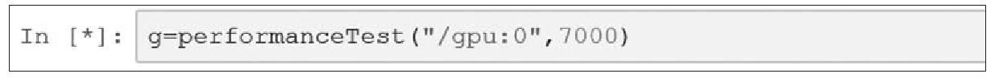
出现NVIDIA显示驱动程序停止响应，出现错误时界面如图21-9所示。

图21-9
接下来会显示Python已经停止运行，如图21-10所示。
图21-10
遇到这种情况，可关闭再重新打开“命令提示符”窗口，然后按照21.1节的步骤重新启动TensorFlow GPU环境。
由以上测试得知，当我们选购显卡时，显卡内存也是选购考虑的重点，内存越大越好，当然成本也更高。
21.4 以多层感知器的实际范例比较CPU与GPU的执行速度
接下来将以实际范例来比较CPU与GPU的执行速度，我们将之前第18章所创建的TensorFlow_Mnist_MLP_h1000.ipynb作为测试范例。
启动TensorFlow CPU环境。
我们将使用第3章所建立的Anaconda TensorFlow CPU虚拟环境。
▶ 启动TensorFlow环境并启动jupyter notebook
执行后屏幕显示界面如图21-11所示。
图21-11
在TensorFlow CPU环境中执行训练的程序代码及其执行结果如图21-12所示。
图21-12
从以上执行结果可知，使用CPU执行共需106秒。
启动TensorFlow GPU环境。
▶ 启动TensorFlow GPU环境并执行jupyter notebook
执行后屏幕显示界面如图21-13所示。
图21-13
打开TensorFlow_Mnist_MLP_h1000.ipynb，如图21-14所示。
图21-14
执行训练程序代码，如图21-15所示。
图21-15
以上用GPU执行计算共需78秒，比起之前使用CPU执行运算所需的106秒少了28秒。大约计算了一下，（28÷106）×100＝26，也就是说GPU比CPU大约减少26%的时间。
21.5 以CNN的实际范例比较CPU与GPU的执行速度
接下来，我们将以实际范例比较CPU与GPU的执行速度，将之前第19章所创建的TensorFlow_Mnist_CNN.ipynb作为测试范例。
启动TensorFlow CPU环境。
▶ 启动jupyter notebook
执行后屏幕显示界面如图21-16所示。
图21-16
在Anaconda TensorFlow CPU环境执行训练。
进入jupyter notebook界面后，打开并执行TensorFlow_Mnist_CNN.ipynb程序，执行训练的界面如图21-17所示。
图21-17
从使用CPU执行训练后的结果可知，花费时间是395秒。
 启动TensorFlow GPU环境。
启动TensorFlow GPU环境。
关闭之前的“命令提示符”窗口，并打开新的“命令提示符”窗口，输入下列命令启动TensorFlow GPU环境，之后再启动jupyter notebook。
执行后屏幕显示界面如图21-18所示。
图21-18
打开TensorFlow_Mnist_CNN.ipynb，如图21-19所示。
图21-19
修改评估模型的准确率。
当我们计算准确率时，测试数据共有10000项，当传入全部的测试数据mnist.test.images、mnist.test.labels时，因为显卡内存只有2GB，所以会发生错误，必须改为分两次执行，每次只传入5000项test数据。
- 传入前5000项数据： 分别是mnist.test.images［：5000］、mnist.test.labels［：5000］。
- 传入后5000项数据： 分别是mnist.test.images［5000：］、mnist.test.labels［5000：］。

修改预测概率。
因为显卡内存只有2GB，所以我们在预测数据时，只能预测前5000项数据。
执行训练后的结果如图21-20所示。
图21-20
以上使用GPU执行训练所花费的时间是299秒，之前使用CPU执行训练所花费的时间是395秒，GPU比CPU运行时间减少了96秒。大约计算了一下，（96÷395）×100＝24，也就是说GPU比CPU大约减少24%的时间。
21.6 以Keras Cifar CNN的实际范例比较CPU与GPU的执行速度
之前测试的都是TensorFlow程序，接下来我们将测试Keras程序比较CPU与GPU的执行速度，将之前第10章所创建的Keras_Cifar_CNN.ipynb作为测试范例。
启动TensorFlow CPU环境。
▶ 启动jupyter notebook
执行后屏幕显示界面如图21-21所示。
图21-21
在TensorFlow CPU环境中执行训练。
进入jupyter notebook界面后，打开并执行Keras_Cifar_CNN.ipynb程序，执行训练的界面如图21-22所示。
图21-22
以上每一个训练周期的运行时间大约为170秒。
启动TensorFlow GPU环境。
关闭之前的“命令提示符”窗口，再打开新的“命令提示符”窗口，输入下列命令启动TensorFlow GPU环境，再启动jupyter notebook。
执行后屏幕显示界面如图21-23所示。
图21-23
在Anaconda TensorFlow CPU环境中执行训练。
进入jupyter notebook界面后，打开并执行Keras_Cifar_CNN.ipynb程序，执行训练的界面如图21-24所示。
图21-24
以上使用GPU执行每一个训练周期运行的时间大约是109秒，之前使用CPU执行每一个训练周期大约是170秒，GPU运行时间减少了大约61秒。大约计算了一下，（61÷170）×100＝35，也就是说GPU比CPU大约减少了35%的时间。
21.7 结论
经过测试CPU与GPU的运行时间，会发现GPU的运行时间比CPU大约减少了35%。你也许觉得节省这么一点时间实在微不足道，但是笔者测试的GPU独立显卡是最入门级的GeForceGT720，当时的价格不到450元，而使用的CPU是Intel Corei5（英特尔酷睿）中央处理器，同样的时间市价大约是1300元。也就是说在深度学习训练中，450元不到的GPU打败了1300元的CPU，所以还是很值得这么做的。如果安装了更好的Nvidia显卡，显卡内存再多一些，相信执行性能会好很多。
附录A 本书范例程序的下载与安装说明
本书范例程序的下载与安装说明将分别介绍在Windows与Linux系统中的安装方式。读者可以按照自己安装的操作系统来选择安装本书的范例程序。
A.1 在Windows系统中下载与安装范例程序
在Windows中下载与安装范例程序之前，先参照本书第4章的说明在Windows中安装TensorFlow与Keras。
下载范例程序。
在浏览器中输入下列网址来下载本书的范例程序（见图A-1）：
https://pan.baidu.com/s/1c2rXnH2
图A-1
解压缩范例程序。
下载文件后，打开文件资源管理器，单击下载目录就可以看到MP21710_example范例程序压缩文件，如图A-2所示。在Windows文件资源管理器中，双击文件名即可打开压缩文件。如果安装了其他解压缩软件，也可以用其他解压缩软件来解压缩。
图A-2
拖曳到D：磁盘驱动器。
打开压缩文件后，就可以看到MP21710_example的目录，将其拖曳到D：驱动器，就可以自动解压缩到D：驱动器（安装在D：驱动器只是示范，读者也可以安装在其他地方），如图A-3所示。
图A-3
查看D：驱动器。
查看D：驱动器，我们可以看到已解压缩的范例程序目录，如图A-4所示。
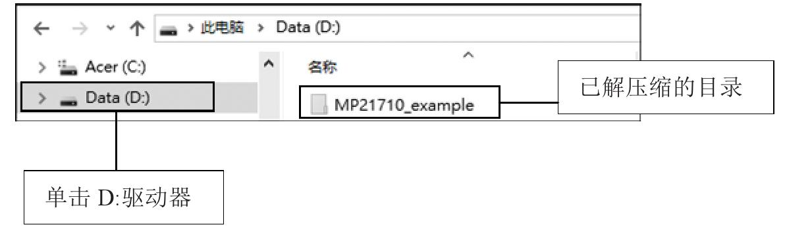
图A-4
启动TensorFlow的Anaconda虚拟环境。
打开“命令提示符”窗口，输入下列命令。
▶ 切换到D：驱动器

▶ 切换到范例程序目录
▶ 启动TensorFlow的Anaconda虚拟环境
执行后屏幕显示界面如图A-5所示。
图A-5
注意，以上启动TensorFlow的Anaconda虚拟环境是TensorFlow CPU版本。
如果读者参照本书第20章的介绍安装TensorFlow GPU版本，就使用下列指令。
▶ 启动Anaconda TensorFlow GPU虚拟环境
打开jupyter notebook。
打开“命令提示符”窗口，输入下列命令进入jupyter notebook互动界面。
▶ 打开jupyter notebook
按Enter键后就会打开浏览器，默认的网址是http://localhost:8888，即jupyter notebook界面，如图A-6所示。
图A-6
打开Jupyter查看本书的范例程序。
打开Jupyter后，可以看到本书范例程序分为两大部分，分别是Keras与TensorFlow范例程序，如图A-7所示。
图A-7
关于范例程序的功能说明可参考“本书章节与范例程序介绍”。
查看本书范例程序目录。
打开Jupyter后，我们可以看到目录如图A-8所示。
图A-8
以上目录都是空的，必须执行范例程序后才会产生数据，说明如下。
▶ data：Keras数据目录
用于存放Keras范例程序下载的数据文件，必须执行范例程序后，才会下载数据到此目录。
- 执行Keras_Taianic_Introduce.ipynb下载Taianic数据集后，才能执行其他Taianic程序。
- 执行Keras_Imdb_Introduce.ipynb下载并且解压缩IMDb数据集后，才能执行其他IMDb程序。
▶ log：TensorBoard log目录
用于存放TensorBoard的log目录，必须执行范例程序TensorFlow_Board_area.ipynb、TensorFlow_Mnist_CNN.ipynb后，才会产生log，并且在TensorBoard显示“计算图”。
▶ MNIST_data：TensorFlow MNIST data目录
用于存放TensorFlow MNIST的数据文件，必须执行TensorFlow_Mnist_Introduce.ipynb才会下载文件。
▶ SaveModel：Keras存储模型目录
用于存放Keras存储模型的目录，必须执行Keras_Cifar_CNN_Continue_Train.ipynb后才会产生。
以上范例的详细说明可参考本书对应的章节。
A.2 在Ubuntu Linux系统中下载与安装范例程序
在Ubuntu Linux下载与安装范例程序之前，先参照本书第5章的说明在Linux Ubuntu安装TensorFlow与Keras。
下载范例程序。
启动Ubuntu的“终端”程序，输入下列指令。
▶ 切换到用户home目录
▶ 下载范例程序
执行后屏幕显示界面如图A-9所示。
图A-9
解压缩范例程序。
在“终端”程序中输入表A-1中的命令解压缩范例程序。
表A-1 解压缩程序命令说明
执行后屏幕显示界面如图A-10所示。
图A-10
 打开 jupyter notebook。
打开 jupyter notebook。
在“终端”程序中输入下列命令进入jupyter notebook互动界面。
▶ 切换到范例程序目录
▶ 打开jupyter notebook

按Enter键后就会打开浏览器，默认的网址是http://localhost:8888，这是Jupyter界面，如图A-11所示。
图A-11
打开Jupyter后的目录与范例程序与在Windows系统下安装范例程序后的结果完全相同，可参考之前的说明。